MrNeRF's Awesome-3D-Gaussian-Splatting-Paper-List
Support This Project
If you find this resource helpful, consider supporting its development and maintenance.
Bitcoin:
bc1qz7z4c2cn46t7rkgsh7mr8tw9ssgctepzxrtqfw
Filter Options
Search: Enter paper title or author names, then click to clear.
Year: Filter by publication year
Tags: Click once to include (blue), twice to exclude (red), third time to remove filter
Selection: Use selection mode to pick and share specific papers
0 papers selected
Selected Papers
2DGS
360 degree
Acceleration
Antialiasing
Autonomous Driving
Avatar
Classic Work
Code
Compression
Deblurring
Densification
Diffusion
Distributed
Dynamic
Editing
Feed-Forward
GAN
In the Wild
Inpainting
Language Embedding
Large-Scale
Lidar
Medicine
Meshing
Misc
Monocular
Object Detection
Optimization
Perspective-correct
Physics
Point Cloud
Poses
Project
Ray Tracing
Relight
Rendering
Review
Robotics
SLAM
Segmentation
Sparse
Stereo
Style Transfer
Texturing
Transformer
Uncertainty
Video
Virtual Reality
World Generation
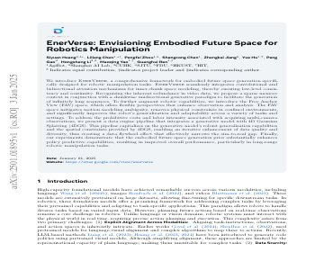
EnerVerse: Envisioning Embodied Future Space for Robotics Manipulation (2025)
We introduce EnerVerse, a comprehensive framework for embodied future space generation specifically designed for robotic manipulation tasks. EnerVerse seamlessly integrates convolutional and bidirectional attention mechanisms for inner-chunk space modeling, ensuring low-level consistency and continuity. Recognizing the inherent redundancy in video data, we propose a sparse memory context combined with a chunkwise unidirectional generative paradigm to enable the generation of infinitely long sequences. To further augment robotic capabilities, we introduce the Free Anchor View (FAV) space, which provides flexible perspectives to enhance observation and analysis. The FAV space mitigates motion modeling ambiguity, removes physical constraints in confined environments, and significantly improves the robot's generalization and adaptability across various tasks and settings. To address the prohibitive costs and labor intensity of acquiring multi-camera observations, we present a data engine pipeline that integrates a generative model with 4D Gaussian Splatting (4DGS). This pipeline leverages the generative model's robust generalization capabilities and the spatial constraints provided by 4DGS, enabling an iterative enhancement of data quality and diversity, thus creating a data flywheel effect that effectively narrows the sim-to-real gap. Finally, our experiments demonstrate that the embodied future space generation prior substantially enhances policy predictive capabilities, resulting in improved overall performance, particularly in long-range robotic manipulation tasks.
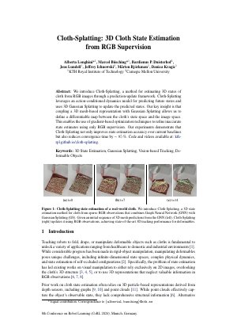
Cloth-Splatting: 3D Cloth State Estimation from RGB Supervision (2024)
Recently, 3D Gaussian Splatting (3DGS) has revolutionized radiance field reconstruction, manifesting efficient and high-fidelity novel view synthesis. However, accurately We introduce Cloth-Splatting, a method for estimating 3D states of cloth from RGB images through a prediction-update framework. Cloth-Splatting leverages an action-conditioned dynamics model for predicting future states and uses 3D Gaussian Splatting to update the predicted states. Our key insight is that coupling a 3D mesh-based representation with Gaussian Splatting allows us to define a differentiable map between the cloth's state space and the image space. This enables the use of gradient-based optimization techniques to refine inaccurate state estimates using only RGB supervision. Our experiments demonstrate that Cloth-Splatting not only improves state estimation accuracy over current baselines but also reduces convergence time by ~85%.
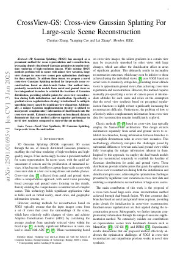
CrossView-GS: Cross-view Gaussian Splatting For Large-scale Scene Reconstruction (2025)
3D Gaussian Splatting (3DGS) has emerged as a prominent method for scene representation and reconstruction, leveraging densely distributed Gaussian primitives to enable real-time rendering of high-resolution images. While existing 3DGS methods perform well in scenes with minor view variation, large view changes in cross-view scenes pose optimization challenges for these methods. To address these issues, we propose a novel cross-view Gaussian Splatting method for large-scale scene reconstruction, based on dual-branch fusion. Our method independently reconstructs models from aerial and ground views as two independent branches to establish the baselines of Gaussian distribution, providing reliable priors for cross-view reconstruction during both initialization and densification. Specifically, a gradient-aware regularization strategy is introduced to mitigate smoothing issues caused by significant view disparities. Additionally, a unique Gaussian supplementation strategy is utilized to incorporate complementary information of dual-branch into the cross-view model. Extensive experiments on benchmark datasets demonstrate that our method achieves superior performance in novel view synthesis compared to state-of-the-art methods.
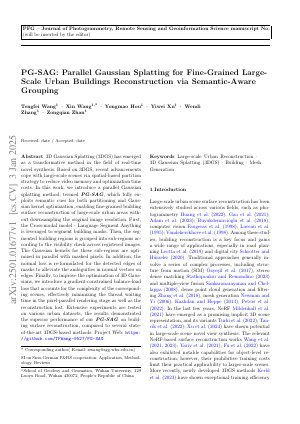
PG-SAG: Parallel Gaussian Splatting for Fine-Grained Large-Scale Urban Buildings Reconstruction via Semantic-Aware Grouping (2025)
3D Gaussian Splatting (3DGS) has emerged as a transformative method in the field of real-time novel synthesis. Based on 3DGS, recent advancements cope with large-scale scenes via spatial-based partition strategy to reduce video memory and optimization time costs. In this work, we introduce a parallel Gaussian splatting method, termed PG-SAG, which fully exploits semantic cues for both partitioning and Gaussian kernel optimization, enabling fine-grained building surface reconstruction of large-scale urban areas without downsampling the original image resolution. First, the Cross-modal model - Language Segment Anything is leveraged to segment building masks. Then, the segmented building regions is grouped into sub-regions according to the visibility check across registered images. The Gaussian kernels for these sub-regions are optimized in parallel with masked pixels. In addition, the normal loss is re-formulated for the detected edges of masks to alleviate the ambiguities in normal vectors on edges. Finally, to improve the optimization of 3D Gaussians, we introduce a gradient-constrained balance-load loss that accounts for the complexity of the corresponding scenes, effectively minimizing the thread waiting time in the pixel-parallel rendering stage as well as the reconstruction lost. Extensive experiments are tested on various urban datasets, the results demonstrated the superior performance of our PG-SAG on building surface reconstruction, compared to several state-of-the-art 3DGS-based methods.
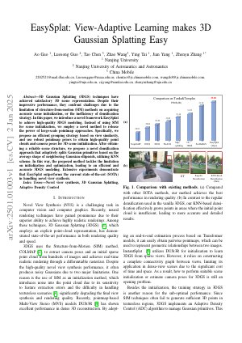
EasySplat: View-Adaptive Learning makes 3D Gaussian Splatting Easy (2025)
3D Gaussian Splatting (3DGS) techniques have achieved satisfactory 3D scene representation. Despite their impressive performance, they confront challenges due to the limitation of structure-from-motion (SfM) methods on acquiring accurate scene initialization, or the inefficiency of densification strategy. In this paper, we introduce a novel framework EasySplat to achieve high-quality 3DGS modeling. Instead of using SfM for scene initialization, we employ a novel method to release the power of large-scale pointmap approaches. Specifically, we propose an efficient grouping strategy based on view similarity, and use robust pointmap priors to obtain high-quality point clouds and camera poses for 3D scene initialization. After obtaining a reliable scene structure, we propose a novel densification approach that adaptively splits Gaussian primitives based on the average shape of neighboring Gaussian ellipsoids, utilizing KNN scheme. In this way, the proposed method tackles the limitation on initialization and optimization, leading to an efficient and accurate 3DGS modeling. Extensive experiments demonstrate that EasySplat outperforms the current state-of-the-art (SOTA) in handling novel view synthesis.
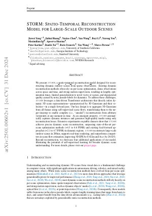
STORM: Spatio-Temporal Reconstruction Model for Large-Scale Outdoor Scenes (2024)
We present STORM, a spatio-temporal reconstruction model designed for reconstructing dynamic outdoor scenes from sparse observations. Existing dynamic reconstruction methods often rely on per-scene optimization, dense observations across space and time, and strong motion supervision, resulting in lengthy optimization times, limited generalization to novel views or scenes, and degenerated quality caused by noisy pseudo-labels for dynamics. To address these challenges, STORM leverages a data-driven Transformer architecture that directly infers dynamic 3D scene representations--parameterized by 3D Gaussians and their velocities--in a single forward pass. Our key design is to aggregate 3D Gaussians from all frames using self-supervised scene flows, transforming them to the target timestep to enable complete (i.e., "amodal") reconstructions from arbitrary viewpoints at any moment in time. As an emergent property, STORM automatically captures dynamic instances and generates high-quality masks using only reconstruction losses. Extensive experiments on public datasets show that STORM achieves precise dynamic scene reconstruction, surpassing state-of-the-art per-scene optimization methods (+4.3 to 6.6 PSNR) and existing feed-forward approaches (+2.1 to 4.7 PSNR) in dynamic regions. STORM reconstructs large-scale outdoor scenes in 200ms, supports real-time rendering, and outperforms competitors in scene flow estimation, improving 3D EPE by 0.422m and Acc5 by 28.02%. Beyond reconstruction, we showcase four additional applications of our model, illustrating the potential of self-supervised learning for broader dynamic scene understanding.
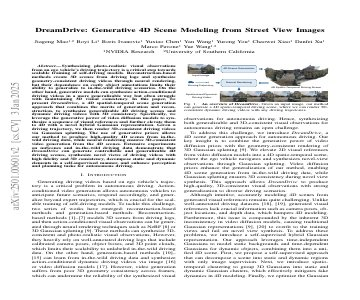
DreamDrive: Generative 4D Scene Modeling from Street View Images (2024)
Synthesizing photo-realistic visual observations from an ego vehicle's driving trajectory is a critical step towards scalable training of self-driving models. Reconstruction-based methods create 3D scenes from driving logs and synthesize geometry-consistent driving videos through neural rendering, but their dependence on costly object annotations limits their ability to generalize to in-the-wild driving scenarios. On the other hand, generative models can synthesize action-conditioned driving videos in a more generalizable way but often struggle with maintaining 3D visual consistency. In this paper, we present DreamDrive, a 4D spatial-temporal scene generation approach that combines the merits of generation and reconstruction, to synthesize generalizable 4D driving scenes and dynamic driving videos with 3D consistency. Specifically, we leverage the generative power of video diffusion models to synthesize a sequence of visual references and further elevate them to 4D with a novel hybrid Gaussian representation. Given a driving trajectory, we then render 3D-consistent driving videos via Gaussian splatting. The use of generative priors allows our method to produce high-quality 4D scenes from in-the-wild driving data, while neural rendering ensures 3D-consistent video generation from the 4D scenes. Extensive experiments on nuScenes and street view images demonstrate that DreamDrive can generate controllable and generalizable 4D driving scenes, synthesize novel views of driving videos with high fidelity and 3D consistency, decompose static and dynamic elements in a self-supervised manner, and enhance perception and planning tasks for autonomous driving.
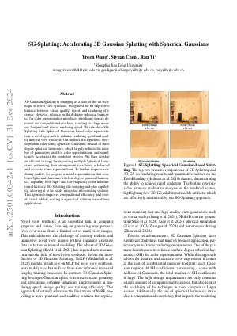
SG-Splatting: Accelerating 3D Gaussian Splatting with Spherical Gaussians (2024)
3D Gaussian Splatting is emerging as a state-of-the-art technique in novel view synthesis, recognized for its impressive balance between visual quality, speed, and rendering efficiency. However, reliance on third-degree spherical harmonics for color representation introduces significant storage demands and computational overhead, resulting in a large memory footprint and slower rendering speed. We introduce SG-Splatting with Spherical Gaussians based color representation, a novel approach to enhance rendering speed and quality in novel view synthesis. Our method first represents view-dependent color using Spherical Gaussians, instead of three degree spherical harmonics, which largely reduces the number of parameters used for color representation, and significantly accelerates the rendering process. We then develop an efficient strategy for organizing multiple Spherical Gaussians, optimizing their arrangement to achieve a balanced and accurate scene representation. To further improve rendering quality, we propose a mixed representation that combines Spherical Gaussians with low-degree spherical harmonics, capturing both high- and low-frequency color information effectively. SG-Splatting also has plug-and-play capability, allowing it to be easily integrated into existing systems. This approach improves computational efficiency and overall visual fidelity, making it a practical solution for real-time applications.
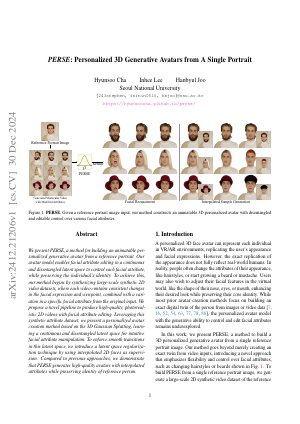
PERSE: Personalized 3D Generative Avatars from A Single Portrait (2024)
We present PERSE, a method for building an animatable personalized generative avatar from a reference portrait. Our avatar model enables facial attribute editing in a continuous and disentangled latent space to control each facial attribute, while preserving the individual's identity. To achieve this, our method begins by synthesizing large-scale synthetic 2D video datasets, where each video contains consistent changes in the facial expression and viewpoint, combined with a variation in a specific facial attribute from the original input. We propose a novel pipeline to produce high-quality, photorealistic 2D videos with facial attribute editing. Leveraging this synthetic attribute dataset, we present a personalized avatar creation method based on the 3D Gaussian Splatting, learning a continuous and disentangled latent space for intuitive facial attribute manipulation. To enforce smooth transitions in this latent space, we introduce a latent space regularization technique by using interpolated 2D faces as supervision. Compared to previous approaches, we demonstrate that PERSE generates high-quality avatars with interpolated attributes while preserving identity of reference person.
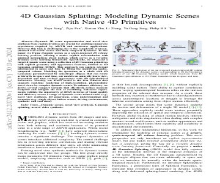
4D Gaussian Splatting: Modeling Dynamic Scenes with Native 4D Primitives (2024)
Dynamic 3D scene representation and novel view synthesis from captured videos are crucial for enabling immersive experiences required by AR/VR and metaverse applications. However, this task is challenging due to the complexity of unconstrained real-world scenes and their temporal dynamics. In this paper, we frame dynamic scenes as a spatio-temporal 4D volume learning problem, offering a native explicit reformulation with minimal assumptions about motion, which serves as a versatile dynamic scene learning framework. Specifically, we represent a target dynamic scene using a collection of 4D Gaussian primitives with explicit geometry and appearance features, dubbed as 4D Gaussian splatting (4DGS). This approach can capture relevant information in space and time by fitting the underlying spatio-temporal volume. Modeling the spacetime as a whole with 4D Gaussians parameterized by anisotropic ellipses that can rotate arbitrarily in space and time, our model can naturally learn view-dependent and time-evolved appearance with 4D spherindrical harmonics. Notably, our 4DGS model is the first solution that supports real-time rendering of high-resolution, photorealistic novel views for complex dynamic scenes. To enhance efficiency, we derive several compact variants that effectively reduce memory footprint and mitigate the risk of overfitting. Extensive experiments validate the superiority of 4DGS in terms of visual quality and efficiency across a range of dynamic scene-related tasks (e.g., novel view synthesis, 4D generation, scene understanding) and scenarios (e.g., single object, indoor scenes, driving environments, synthetic and real data).
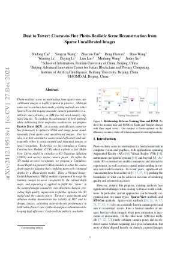
Dust to Tower: Coarse-to-Fine Photo-Realistic Scene Reconstruction from Sparse Uncalibrated Images (2024)
Photo-realistic scene reconstruction from sparse-view, uncalibrated images is highly required in practice. Although some successes have been made, existing methods are either Sparse-View but require accurate camera parameters (i.e., intrinsic and extrinsic), or SfM-free but need densely captured images. To combine the advantages of both methods while addressing their respective weaknesses, we propose Dust to Tower (D2T), an accurate and efficient coarse-to-fine framework to optimize 3DGS and image poses simultaneously from sparse and uncalibrated images. Our key idea is to first construct a coarse model efficiently and subsequently refine it using warped and inpainted images at novel viewpoints. To do this, we first introduce a Coarse Construction Module (CCM) which exploits a fast Multi-View Stereo model to initialize a 3D Gaussian Splatting (3DGS) and recover initial camera poses. To refine the 3D model at novel viewpoints, we propose a Confidence Aware Depth Alignment (CADA) module to refine the coarse depth maps by aligning their confident parts with estimated depths by a Mono-depth model. Then, a Warped Image-Guided Inpainting (WIGI) module is proposed to warp the training images to novel viewpoints by the refined depth maps, and inpainting is applied to fulfill the ``holes" in the warped images caused by view-direction changes, providing high-quality supervision to further optimize the 3D model and the camera poses. Extensive experiments and ablation studies demonstrate the validity of D2T and its design choices, achieving state-of-the-art performance in both tasks of novel view synthesis and pose estimation while keeping high efficiency. Codes will be publicly available.
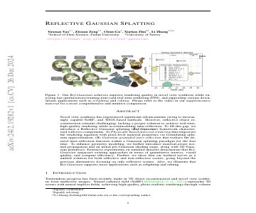
Reflective Gaussian Splatting (2024)
Novel view synthesis has experienced significant advancements owing to increasingly capable NeRF- and 3DGS-based methods. However, reflective object reconstruction remains challenging, lacking a proper solution to achieve real-time, high-quality rendering while accommodating inter-reflection. To fill this gap, we introduce a Reflective Gaussian splatting (\textbf{Ref-Gaussian}) framework characterized with two components: (I) {\em Physically based deferred rendering} that empowers the rendering equation with pixel-level material properties via formulating split-sum approximation; (II) {\em Gaussian-grounded inter-reflection} that realizes the desired inter-reflection function within a Gaussian splatting paradigm for the first time. To enhance geometry modeling, we further introduce material-aware normal propagation and an initial per-Gaussian shading stage, along with 2D Gaussian primitives. Extensive experiments on standard datasets demonstrate that Ref-Gaussian surpasses existing approaches in terms of quantitative metrics, visual quality, and compute efficiency. Further, we show that our method serves as a unified solution for both reflective and non-reflective scenes, going beyond the previous alternatives focusing on only reflective scenes. Also, we illustrate that Ref-Gaussian supports more applications such as relighting and editing.
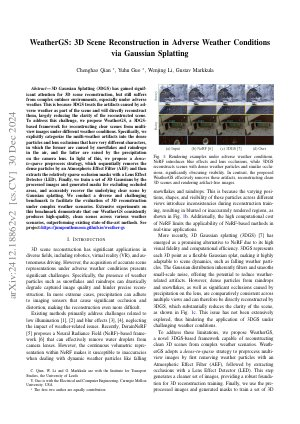
WeatherGS: 3D Scene Reconstruction in Adverse Weather Conditions via Gaussian Splatting (2024)
3D Gaussian Splatting (3DGS) has gained significant attention for 3D scene reconstruction, but still suffers from complex outdoor environments, especially under adverse weather. This is because 3DGS treats the artifacts caused by adverse weather as part of the scene and will directly reconstruct them, largely reducing the clarity of the reconstructed scene. To address this challenge, we propose WeatherGS, a 3DGS-based framework for reconstructing clear scenes from multi-view images under different weather conditions. Specifically, we explicitly categorize the multi-weather artifacts into the dense particles and lens occlusions that have very different characters, in which the former are caused by snowflakes and raindrops in the air, and the latter are raised by the precipitation on the camera lens. In light of this, we propose a dense-to-sparse preprocess strategy, which sequentially removes the dense particles by an Atmospheric Effect Filter (AEF) and then extracts the relatively sparse occlusion masks with a Lens Effect Detector (LED). Finally, we train a set of 3D Gaussians by the processed images and generated masks for excluding occluded areas, and accurately recover the underlying clear scene by Gaussian splatting. We conduct a diverse and challenging benchmark to facilitate the evaluation of 3D reconstruction under complex weather scenarios. Extensive experiments on this benchmark demonstrate that our WeatherGS consistently produces high-quality, clean scenes across various weather scenarios, outperforming existing state-of-the-art methods.
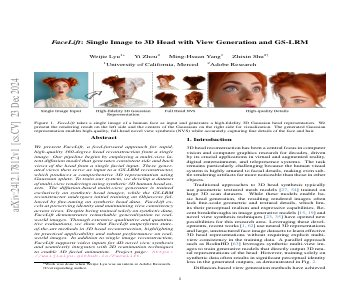
FaceLift: Single Image to 3D Head with View Generation and GS-LRM (2024)
We present FaceLift, a feed-forward approach for rapid, high-quality, 360-degree head reconstruction from a single image. Our pipeline begins by employing a multi-view latent diffusion model that generates consistent side and back views of the head from a single facial input. These generated views then serve as input to a GS-LRM reconstructor, which produces a comprehensive 3D representation using Gaussian splats. To train our system, we develop a dataset of multi-view renderings using synthetic 3D human head as-sets. The diffusion-based multi-view generator is trained exclusively on synthetic head images, while the GS-LRM reconstructor undergoes initial training on Objaverse followed by fine-tuning on synthetic head data. FaceLift excels at preserving identity and maintaining view consistency across views. Despite being trained solely on synthetic data, FaceLift demonstrates remarkable generalization to real-world images. Through extensive qualitative and quantitative evaluations, we show that FaceLift outperforms state-of-the-art methods in 3D head reconstruction, highlighting its practical applicability and robust performance on real-world images. In addition to single image reconstruction, FaceLift supports video inputs for 4D novel view synthesis and seamlessly integrates with 2D reanimation techniques to enable 3D facial animation.
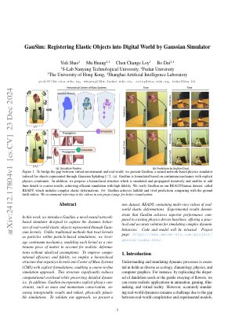
GauSim: Registering Elastic Objects into Digital World by Gaussian Simulator (2024)
In this work, we introduce GauSim, a novel neural network-based simulator designed to capture the dynamic behaviors of real-world elastic objects represented through Gaussian kernels. Unlike traditional methods that treat kernels as particles within particle-based simulations, we leverage continuum mechanics, modeling each kernel as a continuous piece of matter to account for realistic deformations without idealized assumptions. To improve computational efficiency and fidelity, we employ a hierarchical structure that organizes kernels into Center of Mass Systems (CMS) with explicit formulations, enabling a coarse-to-fine simulation approach. This structure significantly reduces computational overhead while preserving detailed dynamics. In addition, GauSim incorporates explicit physics constraints, such as mass and momentum conservation, ensuring interpretable results and robust, physically plausible simulations. To validate our approach, we present a new dataset, READY, containing multi-view videos of real-world elastic deformations. Experimental results demonstrate that GauSim achieves superior performance compared to existing physics-driven baselines, offering a practical and accurate solution for simulating complex dynamic behaviors. Code and model will be released.
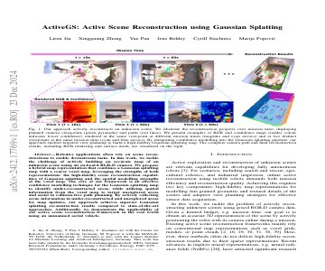
ActiveGS: Active Scene Reconstruction using Gaussian Splatting (2024)
Robotics applications often rely on scene reconstructions to enable downstream tasks. In this work, we tackle the challenge of actively building an accurate map of an unknown scene using an on-board RGB-D camera. We propose a hybrid map representation that combines a Gaussian splatting map with a coarse voxel map, leveraging the strengths of both representations: the high-fidelity scene reconstruction capabilities of Gaussian splatting and the spatial modelling strengths of the voxel map. The core of our framework is an effective confidence modelling technique for the Gaussian splatting map to identify under-reconstructed areas, while utilising spatial information from the voxel map to target unexplored areas and assist in collision-free path planning. By actively collecting scene information in under-reconstructed and unexplored areas for map updates, our approach achieves superior Gaussian splatting reconstruction results compared to state-of-the-art approaches. Additionally, we demonstrate the applicability of our active scene reconstruction framework in the real world using an unmanned aerial vehicle.
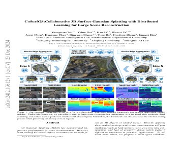
CoSurfGS:Collaborative 3D Surface Gaussian Splatting with Distributed Learning for Large Scene Reconstruction (2024)
3D Gaussian Splatting (3DGS) has demonstrated impressive performance in scene reconstruction. However, most existing GS-based surface reconstruction methods focus on 3D objects or limited scenes. Directly applying these methods to large-scale scene reconstruction will pose challenges such as high memory costs, excessive time consumption, and lack of geometric detail, which makes it difficult to implement in practical applications. To address these issues, we propose a multi-agent collaborative fast 3DGS surface reconstruction framework based on distributed learning for large-scale surface reconstruction. Specifically, we develop local model compression (LMC) and model aggregation schemes (MAS) to achieve high-quality surface representation of large scenes while reducing GPU memory consumption. Extensive experiments on Urban3d, MegaNeRF, and BlendedMVS demonstrate that our proposed method can achieve fast and scalable high-fidelity surface reconstruction and photorealistic rendering.
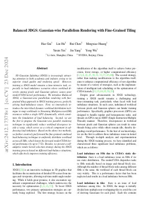
Balanced 3DGS: Gaussian-wise Parallelism Rendering with Fine-Grained Tiling (2024)
3D Gaussian Splatting (3DGS) is increasingly attracting attention in both academia and industry owing to its superior visual quality and rendering speed. However, training a 3DGS model remains a time-intensive task, especially in load imbalance scenarios where workload diversity among pixels and Gaussian spheres causes poor renderCUDA kernel performance. We introduce Balanced 3DGS, a Gaussian-wise parallelism rendering with fine-grained tiling approach in 3DGS training process, perfectly solving load-imbalance issues. First, we innovatively introduce the inter-block dynamic workload distribution technique to map workloads to Streaming Multiprocessor(SM) resources within a single GPU dynamically, which constitutes the foundation of load balancing. Second, we are the first to propose the Gaussian-wise parallel rendering technique to significantly reduce workload divergence inside a warp, which serves as a critical component in addressing load imbalance. Based on the above two methods, we further creatively put forward the fine-grained combined load balancing technique to uniformly distribute workload across all SMs, which boosts the forward renderCUDA kernel performance by up to 7.52x. Besides, we present a self-adaptive render kernel selection strategy during the 3DGS training process based on different load-balance situations, which effectively improves training efficiency.
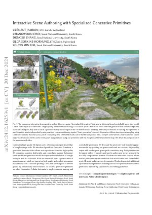
Interactive Scene Authoring with Specialized Generative Primitives (2024)
Generating high-quality 3D digital assets often requires expert knowledge of complex design tools. We introduce Specialized Generative Primitives, a generative framework that allows non-expert users to author high-quality 3D scenes in a seamless, lightweight, and controllable manner. Each primitive is an efficient generative model that captures the distribution of a single exemplar from the real world. With our framework, users capture a video of an environment, which we turn into a high-quality and explicit appearance model thanks to 3D Gaussian Splatting. Users then select regions of interest guided by semantically-aware features. To create a generative primitive, we adapt Generative Cellular Automata to single-exemplar training and controllable generation. We decouple the generative task from the appearance model by operating on sparse voxels and we recover a high-quality output with a subsequent sparse patch consistency step. Each primitive can be trained within 10 minutes and used to author new scenes interactively in a fully compositional manner. We showcase interactive sessions where various primitives are extracted from real-world scenes and controlled to create 3D assets and scenes in a few minutes. We also demonstrate additional capabilities of our primitives: handling various 3D representations to control generation, transferring appearances, and editing geometries.
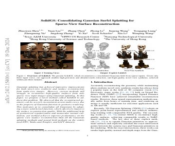
SolidGS: Consolidating Gaussian Surfel Splatting for Sparse-View Surface Reconstruction (2024)
Gaussian splatting has achieved impressive improvements for both novel-view synthesis and surface reconstruction from multi-view images. However, current methods still struggle to reconstruct high-quality surfaces from only sparse view input images using Gaussian splatting. In this paper, we propose a novel method called SolidGS to address this problem. We observed that the reconstructed geometry can be severely inconsistent across multi-views, due to the property of Gaussian function in geometry rendering. This motivates us to consolidate all Gaussians by adopting a more solid kernel function, which effectively improves the surface reconstruction quality. With the additional help of geometrical regularization and monocular normal estimation, our method achieves superior performance on the sparse view surface reconstruction than all the Gaussian splatting methods and neural field methods on the widely used DTU, Tanks-and-Temples, and LLFF datasets.
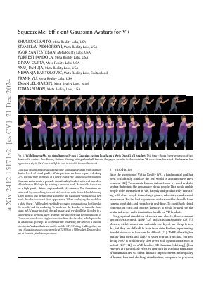
SqueezeMe: Efficient Gaussian Avatars for VR (2024)
Gaussian Splatting has enabled real-time 3D human avatars with unprecedented levels of visual quality. While previous methods require a desktop GPU for real-time inference of a single avatar, we aim to squeeze multiple Gaussian avatars onto a portable virtual reality headset with real-time drivable inference. We begin by training a previous work, Animatable Gaussians, on a high quality dataset captured with 512 cameras. The Gaussians are animated by controlling base set of Gaussians with linear blend skinning (LBS) motion and then further adjusting the Gaussians with a neural network decoder to correct their appearance. When deploying the model on a Meta Quest 3 VR headset, we find two major computational bottlenecks: the decoder and the rendering. To accelerate the decoder, we train the Gaussians in UV-space instead of pixel-space, and we distill the decoder to a single neural network layer. Further, we discover that neighborhoods of Gaussians can share a single corrective from the decoder, which provides an additional speedup. To accelerate the rendering, we develop a custom pipeline in Vulkan that runs on the mobile GPU. Putting it all together, we run 3 Gaussian avatars concurrently at 72 FPS on a VR headset.
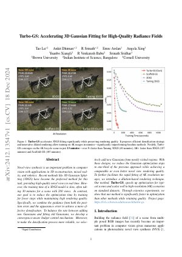
Turbo-GS: Accelerating 3D Gaussian Fitting for High-Quality Radiance Fields (2024)
Novel-view synthesis is an important problem in computer vision with applications in 3D reconstruction, mixed reality, and robotics. Recent methods like 3D Gaussian Splatting (3DGS) have become the preferred method for this task, providing high-quality novel views in real time. However, the training time of a 3DGS model is slow, often taking 30 minutes for a scene with 200 views. In contrast, our goal is to reduce the optimization time by training for fewer steps while maintaining high rendering quality. Specifically, we combine the guidance from both the position error and the appearance error to achieve a more effective densification. To balance the rate between adding new Gaussians and fitting old Gaussians, we develop a convergence-aware budget control mechanism. Moreover, to make the densification process more reliable, we selectively add new Gaussians from mostly visited regions. With these designs, we reduce the Gaussian optimization steps to one-third of the previous approach while achieving a comparable or even better novel view rendering quality. To further facilitate the rapid fitting of 4K resolution images, we introduce a dilation-based rendering technique. Our method, Turbo-GS, speeds up optimization for typical scenes and scales well to high-resolution (4K) scenarios on standard datasets. Through extensive experiments, we show that our method is significantly faster in optimization than other methods while retaining quality. Project page: https://ivl.cs.brown.edu/research/turbo-gs.
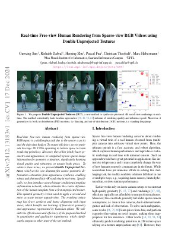
Real-time Free-view Human Rendering from Sparse-view RGB Videos using Double Unprojected Textures (2024)
Real-time free-view human rendering from sparse-view RGB inputs is a challenging task due to the sensor scarcity and the tight time budget. To ensure efficiency, recent methods leverage 2D CNNs operating in texture space to learn rendering primitives. However, they either jointly learn geometry and appearance, or completely ignore sparse image information for geometry estimation, significantly harming visual quality and robustness to unseen body poses. To address these issues, we present Double Unprojected Textures, which at the core disentangles coarse geometric deformation estimation from appearance synthesis, enabling robust and photorealistic 4K rendering in real-time. Specifically, we first introduce a novel image-conditioned template deformation network, which estimates the coarse deformation of the human template from a first unprojected texture. This updated geometry is then used to apply a second and more accurate texture unprojection. The resulting texture map has fewer artifacts and better alignment with input views, which benefits our learning of finer-level geometry and appearance represented by Gaussian splats. We validate the effectiveness and efficiency of the proposed method in quantitative and qualitative experiments, which significantly surpasses other state-of-the-art methods.
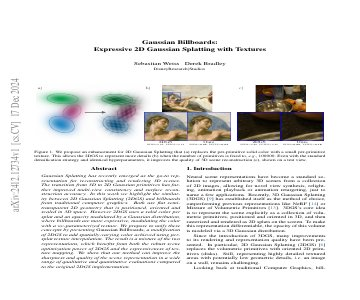
Gaussian Billboards: Expressive 2D Gaussian Splatting with Textures (2024)
Gaussian Splatting has recently emerged as the go-to representation for reconstructing and rendering 3D scenes. The transition from 3D to 2D Gaussian primitives has further improved multi-view consistency and surface reconstruction accuracy. In this work we highlight the similarity between 2D Gaussian Splatting (2DGS) and billboards from traditional computer graphics. Both use flat semi-transparent 2D geometry that is positioned, oriented and scaled in 3D space. However 2DGS uses a solid color per splat and an opacity modulated by a Gaussian distribution, where billboards are more expressive, modulating the color with a uv-parameterized texture. We propose to unify these concepts by presenting Gaussian Billboards, a modification of 2DGS to add spatially-varying color achieved using per-splat texture interpolation. The result is a mixture of the two representations, which benefits from both the robust scene optimization power of 2DGS and the expressiveness of texture mapping. We show that our method can improve the sharpness and quality of the scene representation in a wide range of qualitative and quantitative evaluations compared to the original 2DGS implementation.
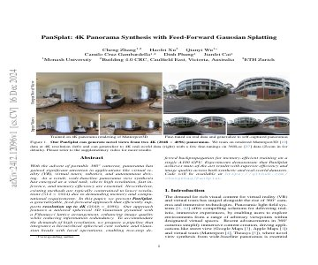
PanSplat: 4K Panorama Synthesis with Feed-Forward Gaussian Splatting (2024)
With the advent of portable 360{\deg} cameras, panorama has gained significant attention in applications like virtual reality (VR), virtual tours, robotics, and autonomous driving. As a result, wide-baseline panorama view synthesis has emerged as a vital task, where high resolution, fast inference, and memory efficiency are essential. Nevertheless, existing methods are typically constrained to lower resolutions (512 $\times$ 1024) due to demanding memory and computational requirements. In this paper, we present PanSplat, a generalizable, feed-forward approach that efficiently supports resolution up to 4K (2048 $\times$ 4096). Our approach features a tailored spherical 3D Gaussian pyramid with a Fibonacci lattice arrangement, enhancing image quality while reducing information redundancy. To accommodate the demands of high resolution, we propose a pipeline that integrates a hierarchical spherical cost volume and Gaussian heads with local operations, enabling two-step deferred backpropagation for memory-efficient training on a single A100 GPU. Experiments demonstrate that PanSplat achieves state-of-the-art results with superior efficiency and image quality across both synthetic and real-world datasets. Code will be available at \url{https://github.com/chengzhag/PanSplat}.
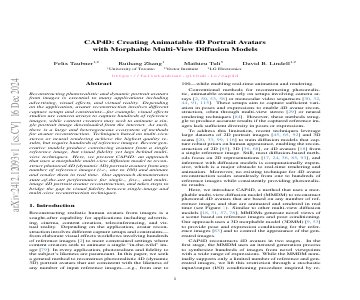
CAP4D: Creating Animatable 4D Portrait Avatars with Morphable Multi-View Diffusion Models (2024)
Reconstructing photorealistic and dynamic portrait avatars from images is essential to many applications including advertising, visual effects, and virtual reality. Depending on the application, avatar reconstruction involves different capture setups and constraints − for example, visual effects studios use camera arrays to capture hundreds of reference images, while content creators may seek to animate a single portrait image downloaded from the internet. As such, there is a large and heterogeneous ecosystem of methods for avatar reconstruction. Techniques based on multi-view stereo or neural rendering achieve the highest quality results, but require hundreds of reference images. Recent generative models produce convincing avatars from a single reference image, but visual fidelity yet lags behind multi-view techniques. Here, we present CAP4D: an approach that uses a morphable multi-view diffusion model to reconstruct photoreal 4D (dynamic 3D) portrait avatars from any number of reference images (i.e., one to 100) and animate and render them in real time. Our approach demonstrates state-of-the-art performance for single-, few-, and multi-image 4D portrait avatar reconstruction, and takes steps to bridge the gap in visual fidelity between single-image and multi-view reconstruction techniques.
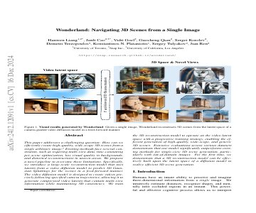
Wonderland: Navigating 3D Scenes from a Single Image (2024)
This paper addresses a challenging question: How can we efficiently create high-quality, wide-scope 3D scenes from a single arbitrary image? Existing methods face several constraints, such as requiring multi-view data, time-consuming per-scene optimization, low visual quality in backgrounds, and distorted reconstructions in unseen areas. We propose a novel pipeline to overcome these limitations. Specifically, we introduce a large-scale reconstruction model that uses latents from a video diffusion model to predict 3D Gaussian Splattings for the scenes in a feed-forward manner. The video diffusion model is designed to create videos precisely following specified camera trajectories, allowing it to generate compressed video latents that contain multi-view information while maintaining 3D consistency. We train the 3D reconstruction model to operate on the video latent space with a progressive training strategy, enabling the efficient generation of high-quality, wide-scope, and generic 3D scenes. Extensive evaluations across various datasets demonstrate that our model significantly outperforms existing methods for single-view 3D scene generation, particularly with out-of-domain images. For the first time, we demonstrate that a 3D reconstruction model can be effectively built upon the latent space of a diffusion model to realize efficient 3D scene generation.
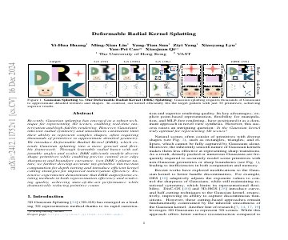
Deformable Radial Kernel Splatting (2024)
Recently, Gaussian splatting has emerged as a robust technique for representing 3D scenes, enabling real-time rasterization and high-fidelity rendering. However, Gaussians' inherent radial symmetry and smoothness constraints limit their ability to represent complex shapes, often requiring thousands of primitives to approximate detailed geometry. We introduce Deformable Radial Kernel (DRK), which extends Gaussian splatting into a more general and flexible framework. Through learnable radial bases with adjustable angles and scales, DRK efficiently models diverse shape primitives while enabling precise control over edge sharpness and boundary curvature. iven DRK's planar nature, we further develop accurate ray-primitive intersection computation for depth sorting and introduce efficient kernel culling strategies for improved rasterization efficiency. Extensive experiments demonstrate that DRK outperforms existing methods in both representation efficiency and rendering quality, achieving state-of-the-art performance while dramatically reducing primitive count.
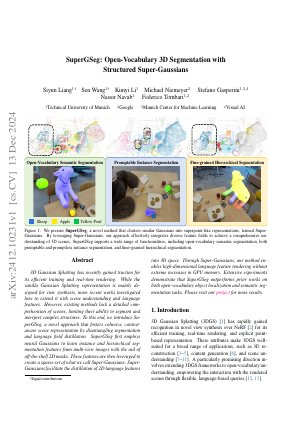
SuperGSeg: Open-Vocabulary 3D Segmentation with Structured Super-Gaussians (2024)
3D Gaussian Splatting has recently gained traction for its efficient training and real-time rendering. While the vanilla Gaussian Splatting representation is mainly designed for view synthesis, more recent works investigated how to extend it with scene understanding and language features. However, existing methods lack a detailed comprehension of scenes, limiting their ability to segment and interpret complex structures. To this end, We introduce SuperGSeg, a novel approach that fosters cohesive, context-aware scene representation by disentangling segmentation and language field distillation. SuperGSeg first employs neural Gaussians to learn instance and hierarchical segmentation features from multi-view images with the aid of off-the-shelf 2D masks. These features are then leveraged to create a sparse set of what we call Super-Gaussians. Super-Gaussians facilitate the distillation of 2D language features into 3D space. Through Super-Gaussians, our method enables high-dimensional language feature rendering without extreme increases in GPU memory. Extensive experiments demonstrate that SuperGSeg outperforms prior works on both open-vocabulary object localization and semantic segmentation tasks.
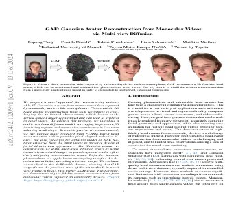
GAF: Gaussian Avatar Reconstruction from Monocular Videos via Multi-view Diffusion (2024)
We propose a novel approach for reconstructing animatable 3D Gaussian avatars from monocular videos captured by commodity devices like smartphones. Photorealistic 3D head avatar reconstruction from such recordings is challenging due to limited observations, which leaves unobserved regions under-constrained and can lead to artifacts in novel views. To address this problem, we introduce a multi-view head diffusion model, leveraging its priors to fill in missing regions and ensure view consistency in Gaussian splatting renderings. To enable precise viewpoint control, we use normal maps rendered from FLAME-based head reconstruction, which provides pixel-aligned inductive biases. We also condition the diffusion model on VAE features extracted from the input image to preserve details of facial identity and appearance. For Gaussian avatar reconstruction, we distill multi-view diffusion priors by using iteratively denoised images as pseudo-ground truths, effectively mitigating over-saturation issues. To further improve photorealism, we apply latent upsampling to refine the denoised latent before decoding it into an image. We evaluate our method on the NeRSemble dataset, showing that GAF outperforms the previous state-of-the-art methods in novel view synthesis and novel expression animation. Furthermore, we demonstrate higher-fidelity avatar reconstructions from monocular videos captured on commodity devices.
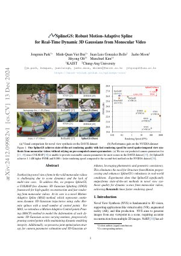
SplineGS: Robust Motion-Adaptive Spline for Real-Time Dynamic 3D Gaussians from Monocular Video (2024)
Synthesizing novel views from in-the-wild monocular videos is challenging due to scene dynamics and the lack of multi-view cues. To address this, we propose SplineGS, a COLMAP-free dynamic 3D Gaussian Splatting (3DGS) framework for high-quality reconstruction and fast rendering from monocular videos. At its core is a novel Motion-Adaptive Spline (MAS) method, which represents continuous dynamic 3D Gaussian trajectories using cubic Hermite splines with a small number of control points. For MAS, we introduce a Motion-Adaptive Control points Pruning (MACP) method to model the deformation of each dynamic 3D Gaussian across varying motions, progressively pruning control points while maintaining dynamic modeling integrity. Additionally, we present a joint optimization strategy for camera parameter estimation and 3D Gaussian attributes, leveraging photometric and geometric consistency. This eliminates the need for Structure-from-Motion preprocessing and enhances SplineGS's robustness in real-world conditions. Experiments show that SplineGS significantly outperforms state-of-the-art methods in novel view synthesis quality for dynamic scenes from monocular videos, achieving thousands times faster rendering speed.

Representing Long Volumetric Video with Temporal Gaussian Hierarchy (2024)
This paper aims to address the challenge of reconstructing long volumetric videos from multi-view RGB videos. Recent dynamic view synthesis methods leverage powerful 4D representations, like feature grids or point cloud sequences, to achieve high-quality rendering results. However, they are typically limited to short (1~2s) video clips and often suffer from large memory footprints when dealing with longer videos. To solve this issue, we propose a novel 4D representation, named Temporal Gaussian Hierarchy, to compactly model long volumetric videos. Our key observation is that there are generally various degrees of temporal redundancy in dynamic scenes, which consist of areas changing at different speeds. Motivated by this, our approach builds a multi-level hierarchy of 4D Gaussian primitives, where each level separately describes scene regions with different degrees of content change, and adaptively shares Gaussian primitives to represent unchanged scene content over different temporal segments, thus effectively reducing the number of Gaussian primitives. In addition, the tree-like structure of the Gaussian hierarchy allows us to efficiently represent the scene at a particular moment with a subset of Gaussian primitives, leading to nearly constant GPU memory usage during the training or rendering regardless of the video length. Extensive experimental results demonstrate the superiority of our method over alternative methods in terms of training cost, rendering speed, and storage usage. To our knowledge, this work is the first approach capable of efficiently handling minutes of volumetric video data while maintaining state-of-the-art rendering quality. Our project page is available at: https://zju3dv.github.io/longvolcap.
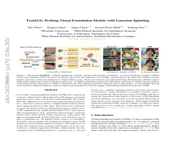
Feat2GS: Probing Visual Foundation Models with Gaussian Splatting (2024)
Given that visual foundation models (VFMs) are trained on extensive datasets but often limited to 2D images, a natural question arises: how well do they understand the 3D world? With the differences in architecture and training protocols (i.e., objectives, proxy tasks), a unified framework to fairly and comprehensively probe their 3D awareness is urgently needed. Existing works on 3D probing suggest single-view 2.5D estimation (e.g., depth and normal) or two-view sparse 2D correspondence (e.g., matching and tracking). Unfortunately, these tasks ignore texture awareness, and require 3D data as ground-truth, which limits the scale and diversity of their evaluation set. To address these issues, we introduce Feat2GS, which readout 3D Gaussians attributes from VFM features extracted from unposed images. This allows us to probe 3D awareness for geometry and texture via novel view synthesis, without requiring 3D data. Additionally, the disentanglement of 3DGS parameters - geometry ($\boldsymbol{x}, \alpha, \Sigma$) and texture ($\boldsymbol{c}$) - enables separate analysis of texture and geometry awareness. Under Feat2GS, we conduct extensive experiments to probe the 3D awareness of several VFMs, and investigate the ingredients that lead to a 3D aware VFM. Building on these findings, we develop several variants that achieve state-of-the-art across diverse datasets. This makes Feat2GS useful for probing VFMs, and as a simple-yet-effective baseline for novel-view synthesis.
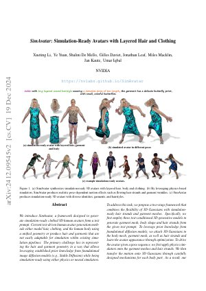
SimAvatar: Simulation-Ready Avatars with Layered Hair and Clothing (2024)
We introduce SimAvatar, a framework designed to generate simulation-ready clothed 3D human avatars from a text prompt. Current text-driven human avatar generation methods either model hair, clothing, and the human body using a unified geometry or produce hair and garments that are not easily adaptable for simulation within existing simulation pipelines. The primary challenge lies in representing the hair and garment geometry in a way that allows leveraging established prior knowledge from foundational image diffusion models (e.g., Stable Diffusion) while being simulation-ready using either physics or neural simulators. To address this task, we propose a two-stage framework that combines the flexibility of 3D Gaussians with simulation-ready hair strands and garment meshes. Specifically, we first employ three text-conditioned 3D generative models to generate garment mesh, body shape and hair strands from the given text prompt. To leverage prior knowledge from foundational diffusion models, we attach 3D Gaussians to the body mesh, garment mesh, as well as hair strands and learn the avatar appearance through optimization. To drive the avatar given a pose sequence, we first apply physics simulators onto the garment meshes and hair strands. We then transfer the motion onto 3D Gaussians through carefully designed mechanisms for each body part. As a result, our synthesized avatars have vivid texture and realistic dynamic motion. To the best of our knowledge, our method is the first to produce highly realistic, fully simulation-ready 3D avatars, surpassing the capabilities of current approaches.
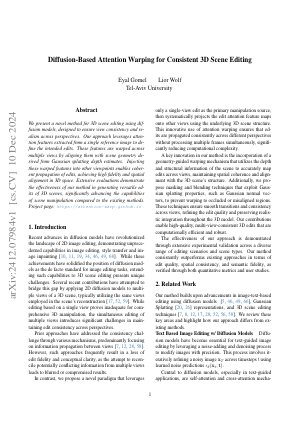
Diffusion-Based Attention Warping for Consistent 3D Scene Editing (2024)
We present a novel method for 3D scene editing using diffusion models, designed to ensure view consistency and realism across perspectives. Our approach leverages attention features extracted from a single reference image to define the intended edits. These features are warped across multiple views by aligning them with scene geometry derived from Gaussian splatting depth estimates. Injecting these warped features into other viewpoints enables coherent propagation of edits, achieving high fidelity and spatial alignment in 3D space. Extensive evaluations demonstrate the effectiveness of our method in generating versatile edits of 3D scenes, significantly advancing the capabilities of scene manipulation compared to the existing methods. Project page: \url{https://attention-warp.github.io}
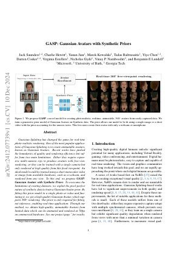
GASP: Gaussian Avatars with Synthetic Priors (2024)
Gaussian Splatting has changed the game for real-time photo-realistic rendering. One of the most popular applications of Gaussian Splatting is to create animatable avatars, known as Gaussian Avatars. Recent works have pushed the boundaries of quality and rendering efficiency but suffer from two main limitations. Either they require expensive multi-camera rigs to produce avatars with free-view rendering, or they can be trained with a single camera but only rendered at high quality from this fixed viewpoint. An ideal model would be trained using a short monocular video or image from available hardware, such as a webcam, and rendered from any view. To this end, we propose GASP: Gaussian Avatars with Synthetic Priors. To overcome the limitations of existing datasets, we exploit the pixel-perfect nature of synthetic data to train a Gaussian Avatar prior. By fitting this prior model to a single photo or video and fine-tuning it, we get a high-quality Gaussian Avatar, which supports 360-degree rendering. Our prior is only required for fitting, not inference, enabling real-time application. Through our method, we obtain high-quality, animatable Avatars from limited data which can be animated and rendered at 70fps on commercial hardware.
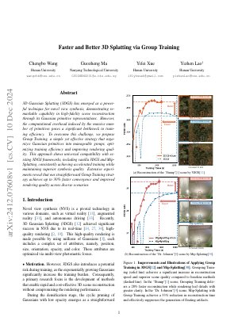
Faster and Better 3D Splatting via Group Training (2024)
3D Gaussian Splatting (3DGS) has emerged as a powerful technique for novel view synthesis, demonstrating remarkable capability in high-fidelity scene reconstruction through its Gaussian primitive representations. However, the computational overhead induced by the massive number of primitives poses a significant bottleneck to training efficiency. To overcome this challenge, we propose Group Training, a simple yet effective strategy that organizes Gaussian primitives into manageable groups, optimizing training efficiency and improving rendering quality. This approach shows universal compatibility with existing 3DGS frameworks, including vanilla 3DGS and Mip-Splatting, consistently achieving accelerated training while maintaining superior synthesis quality. Extensive experiments reveal that our straightforward Group Training strategy achieves up to 30% faster convergence and improved rendering quality across diverse scenarios.
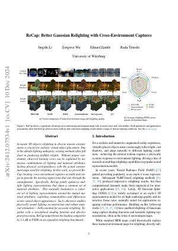
ReCap: Better Gaussian Relighting with Cross-Environment Captures (2024)
Accurate 3D objects relighting in diverse unseen environments is crucial for realistic virtual object placement. Due to the albedo-lighting ambiguity, existing methods often fall short in producing faithful relights. Without proper constraints, observed training views can be explained by numerous combinations of lighting and material attributes, lacking physical correspondence with the actual environment maps used for relighting. In this work, we present ReCap, treating cross-environment captures as multi-task target to provide the missing supervision that cuts through the entanglement. Specifically, ReCap jointly optimizes multiple lighting representations that share a common set of material attributes. This naturally harmonizes a coherent set of lighting representations around the mutual material attributes, exploiting commonalities and differences across varied object appearances. Such coherence enables physically sound lighting reconstruction and robust material estimation - both essential for accurate relighting. Together with a streamlined shading function and effective post-processing, ReCap outperforms the leading competitor by 3.4 dB in PSNR on an expanded relighting benchmark.
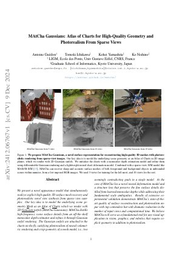
MAtCha Gaussians: Atlas of Charts for High-Quality Geometry and Photorealism From Sparse Views (2024)
We present a novel appearance model that simultaneously realizes explicit high-quality 3D surface mesh recovery and photorealistic novel view synthesis from sparse view samples. Our key idea is to model the underlying scene geometry Mesh as an Atlas of Charts which we render with 2D Gaussian surfels (MAtCha Gaussians). MAtCha distills high-frequency scene surface details from an off-the-shelf monocular depth estimator and refines it through Gaussian surfel rendering. The Gaussian surfels are attached to the charts on the fly, satisfying photorealism of neural volumetric rendering and crisp geometry of a mesh model, i.e., two seemingly contradicting goals in a single model. At the core of MAtCha lies a novel neural deformation model and a structure loss that preserve the fine surface details distilled from learned monocular depths while addressing their fundamental scale ambiguities. Results of extensive experimental validation demonstrate MAtCha's state-of-the-art quality of surface reconstruction and photorealism on-par with top contenders but with dramatic reduction in the number of input views and computational time. We believe MAtCha will serve as a foundational tool for any visual application in vision, graphics, and robotics that require explicit geometry in addition to photorealism. Our project page is the following: https://anttwo.github.io/matcha/
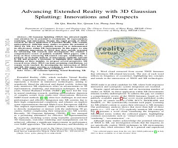
Advancing Extended Reality with 3D Gaussian Splatting: Innovations and Prospects (2024)
3D Gaussian Splatting (3DGS) has attracted significant attention for its potential to revolutionize 3D representation, rendering, and interaction. Despite the rapid growth of 3DGS research, its direct application to Extended Reality (XR) remains underexplored. Although many studies recognize the potential of 3DGS for XR, few have explicitly focused on or demonstrated its effectiveness within XR environments. In this paper, we aim to synthesize innovations in 3DGS that show specific potential for advancing XR research and development. We conduct a comprehensive review of publicly available 3DGS papers, with a focus on those referencing XR-related concepts. Additionally, we perform an in-depth analysis of innovations explicitly relevant to XR and propose a taxonomy to highlight their significance. Building on these insights, we propose several prospective XR research areas where 3DGS can make promising contributions, yet remain rarely touched. By investigating the intersection of 3DGS and XR, this paper provides a roadmap to push the boundaries of XR using cutting-edge 3DGS techniques.
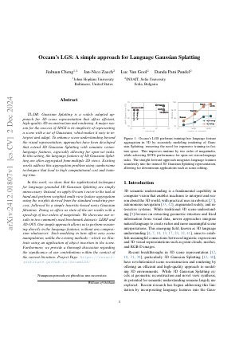
Occam's LGS: A Simple Approach for Language Gaussian Splatting (2024)
Gaussian Splatting is a widely adopted approach for 3D scene representation that offers efficient, high-quality 3D reconstruction and rendering. A major reason for the success of 3DGS is its simplicity of representing a scene with a set of Gaussians, which makes it easy to interpret and adapt. To enhance scene understanding beyond the visual representation, approaches have been developed that extend 3D Gaussian Splatting with semantic vision-language features, especially allowing for open-set tasks. In this setting, the language features of 3D Gaussian Splatting are often aggregated from multiple 2D views. Existing works address this aggregation problem using cumbersome techniques that lead to high computational cost and training time. In this work, we show that the sophisticated techniques for language-grounded 3D Gaussian Splatting are simply unnecessary. Instead, we apply Occam's razor to the task at hand and perform weighted multi-view feature aggregation using the weights derived from the standard rendering process, followed by a simple heuristic-based noisy Gaussian filtration. Doing so offers us state-of-the-art results with a speed-up of two orders of magnitude. We showcase our results in two commonly used benchmark datasets: LERF and 3D-OVS. Our simple approach allows us to perform reasoning directly in the language features, without any compression whatsoever. Such modeling in turn offers easy scene manipulation, unlike the existing methods -- which we illustrate using an application of object insertion in the scene. Furthermore, we provide a thorough discussion regarding the significance of our contributions within the context of the current literature.
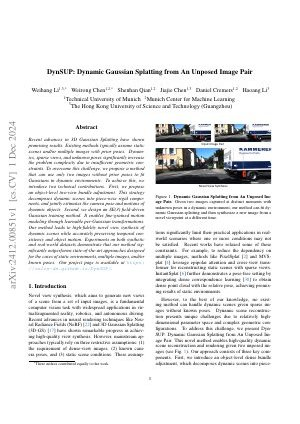
DynSUP: Dynamic Gaussian Splatting from An Unposed Image Pair (2024)
Recent advances in 3D Gaussian Splatting have shown promising results. Existing methods typically assume static scenes and/or multiple images with prior poses. Dynamics, sparse views, and unknown poses significantly increase the problem complexity due to insufficient geometric constraints. To overcome this challenge, we propose a method that can use only two images without prior poses to fit Gaussians in dynamic environments. To achieve this, we introduce two technical contributions. First, we propose an object-level two-view bundle adjustment. This strategy decomposes dynamic scenes into piece-wise rigid components, and jointly estimates the camera pose and motions of dynamic objects. Second, we design an SE(3) field-driven Gaussian training method. It enables fine-grained motion modeling through learnable per-Gaussian transformations. Our method leads to high-fidelity novel view synthesis of dynamic scenes while accurately preserving temporal consistency and object motion. Experiments on both synthetic and real-world datasets demonstrate that our method significantly outperforms state-of-the-art approaches designed for the cases of static environments, multiple images, and/or known poses. Our project page is available at https://colin-de.github.io/DynSUP/.
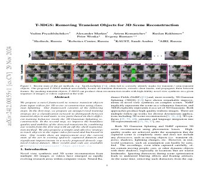
T-3DGS: Removing Transient Objects for 3D Scene Reconstruction (2024)
We propose a novel framework to remove transient objects from input videos for 3D scene reconstruction using Gaussian Splatting. Our framework consists of the following steps. In the first step, we propose an unsupervised training strategy for a classification network to distinguish between transient objects and static scene parts based on their different training behavior inside the 3D Gaussian Splatting reconstruction. In the second step, we improve the boundary quality and stability of the detected transients by combining our results from the first step with an off-the-shelf segmentation method. We also propose a simple and effective strategy to track objects in the input video forward and backward in time. Our results show an improvement over the current state of the art in existing sparsely captured datasets and significant improvements in a newly proposed densely captured (video) dataset.
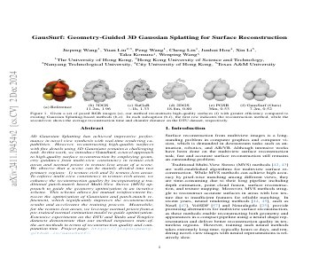
GausSurf: Geometry-Guided 3D Gaussian Splatting for Surface Reconstruction (2024)
3D Gaussian Splatting has achieved impressive performance in novel view synthesis with real-time rendering capabilities. However, reconstructing high-quality surfaces with fine details using 3D Gaussians remains a challenging task. In this work, we introduce GausSurf, a novel approach to high-quality surface reconstruction by employing geometry guidance from multi-view consistency in texture-rich areas and normal priors in texture-less areas of a scene. We observe that a scene can be mainly divided into two primary regions: 1) texture-rich and 2) texture-less areas. To enforce multi-view consistency at texture-rich areas, we enhance the reconstruction quality by incorporating a traditional patch-match based Multi-View Stereo (MVS) approach to guide the geometry optimization in an iterative scheme. This scheme allows for mutual reinforcement between the optimization of Gaussians and patch-match refinement, which significantly improves the reconstruction results and accelerates the training process. Meanwhile, for the texture-less areas, we leverage normal priors from a pre-trained normal estimation model to guide optimization. Extensive experiments on the DTU and Tanks and Temples datasets demonstrate that our method surpasses state-of-the-art methods in terms of reconstruction quality and computation time.

SADG: Segment Any Dynamic Gaussians Without Object Trackers (2024)
Understanding dynamic 3D scenes is fundamental for various applications, including extended reality (XR) and autonomous driving. Effectively integrating semantic information into 3D reconstruction enables holistic representation that opens opportunities for immersive and interactive applications. We introduce SADG, Segment Any Dynamic Gaussian Without Object Trackers, a novel approach that combines dynamic Gaussian Splatting representation and semantic information without reliance on object IDs. In contrast to existing works, we do not rely on supervision based on object identities to enable consistent segmentation of dynamic 3D objects. To this end, we propose to learn semantically-aware features by leveraging masks generated from the Segment Anything Model (SAM) and utilizing our novel contrastive learning objective based on hard pixel mining. The learned Gaussian features can be effectively clustered without further post-processing. This enables fast computation for further object-level editing, such as object removal, composition, and style transfer by manipulating the Gaussians in the scene. We further extend several dynamic novel-view datasets with segmentation benchmarks to enable testing of learned feature fields from unseen viewpoints. We evaluate SADG on proposed benchmarks and demonstrate the superior performance of our approach in segmenting objects within dynamic scenes along with its effectiveness for further downstream editing tasks.
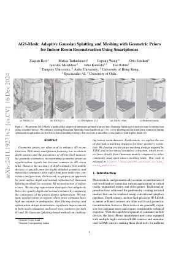
AGS-Mesh: Adaptive Gaussian Splatting and Meshing with Geometric Priors for Indoor Room Reconstruction Using Smartphones (2024)
Geometric priors are often used to enhance 3D reconstruction. With many smartphones featuring low-resolution depth sensors and the prevalence of off-the-shelf monocular geometry estimators, incorporating geometric priors as regularization signals has become common in 3D vision tasks. However, the accuracy of depth estimates from mobile devices is typically poor for highly detailed geometry, and monocular estimators often suffer from poor multi-view consistency and precision. In this work, we propose an approach for joint surface depth and normal refinement of Gaussian Splatting methods for accurate 3D reconstruction of indoor scenes. We develop supervision strategies that adaptively filters low-quality depth and normal estimates by comparing the consistency of the priors during optimization. We mitigate regularization in regions where prior estimates have high uncertainty or ambiguities. Our filtering strategy and optimization design demonstrate significant improvements in both mesh estimation and novel-view synthesis for both 3D and 2D Gaussian Splatting-based methods on challenging indoor room datasets. Furthermore, we explore the use of alternative meshing strategies for finer geometry extraction. We develop a scale-aware meshing strategy inspired by TSDF and octree-based isosurface extraction, which recovers finer details from Gaussian models compared to other commonly used open-source meshing tools. Our code is released in https://xuqianren.github.io/ags_mesh_website/.
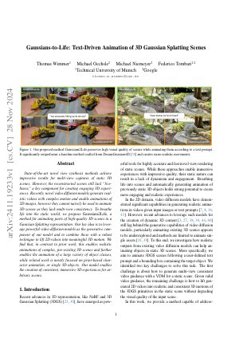
Gaussians-to-Life: Text-Driven Animation of 3D Gaussian Splatting Scenes (2024)
State-of-the-art novel view synthesis methods achieve impressive results for multi-view captures of static 3D scenes. However, the reconstructed scenes still lack "liveliness," a key component for creating engaging 3D experiences. Recently, novel video diffusion models generate realistic videos with complex motion and enable animations of 2D images, however they cannot naively be used to animate 3D scenes as they lack multi-view consistency. To breathe life into the static world, we propose Gaussians2Life, a method for animating parts of high-quality 3D scenes in a Gaussian Splatting representation. Our key idea is to leverage powerful video diffusion models as the generative component of our model and to combine these with a robust technique to lift 2D videos into meaningful 3D motion. We find that, in contrast to prior work, this enables realistic animations of complex, pre-existing 3D scenes and further enables the animation of a large variety of object classes, while related work is mostly focused on prior-based character animation, or single 3D objects. Our model enables the creation of consistent, immersive 3D experiences for arbitrary scenes.
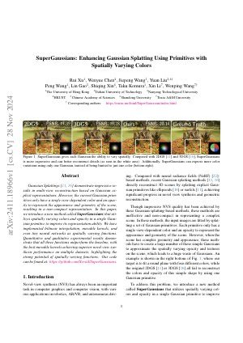
SuperGaussians: Enhancing Gaussian Splatting Using Primitives with Spatially Varying Colors (2024)
Gaussian Splattings demonstrate impressive results in multi-view reconstruction based on Gaussian explicit representations. However, the current Gaussian primitives only have a single view-dependent color and an opacity to represent the appearance and geometry of the scene, resulting in a non-compact representation. In this paper, we introduce a new method called SuperGaussians that utilizes spatially varying colors and opacity in a single Gaussian primitive to improve its representation ability. We have implemented bilinear interpolation, movable kernels, and even tiny neural networks as spatially varying functions. Quantitative and qualitative experimental results demonstrate that all three functions outperform the baseline, with the best movable kernels achieving superior novel view synthesis performance on multiple datasets, highlighting the strong potential of spatially varying functions.
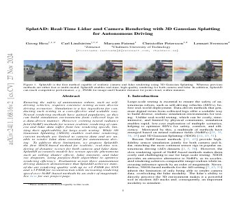
SplatAD: Real-Time Lidar and Camera Rendering with 3D Gaussian Splatting for Autonomous Driving (2024)
Ensuring the safety of autonomous robots, such as self-driving vehicles, requires extensive testing across diverse driving scenarios. Simulation is a key ingredient for conducting such testing in a cost-effective and scalable way. Neural rendering methods have gained popularity, as they can build simulation environments from collected logs in a data-driven manner. However, existing neural radiance field (NeRF) methods for sensor-realistic rendering of camera and lidar data suffer from low rendering speeds, limiting their applicability for large-scale testing. While 3D Gaussian Splatting (3DGS) enables real-time rendering, current methods are limited to camera data and are unable to render lidar data essential for autonomous driving. To address these limitations, we propose SplatAD, the first 3DGS-based method for realistic, real-time rendering of dynamic scenes for both camera and lidar data. SplatAD accurately models key sensor-specific phenomena such as rolling shutter effects, lidar intensity, and lidar ray dropouts, using purpose-built algorithms to optimize rendering efficiency. Evaluation across three autonomous driving datasets demonstrates that SplatAD achieves state-of-the-art rendering quality with up to +2 PSNR for NVS and +3 PSNR for reconstruction while increasing rendering speed over NeRF-based methods by an order of magnitude.
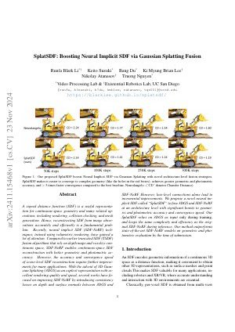
SplatSDF: Boosting Neural Implicit SDF via Gaussian Splatting Fusion (2024)
A signed distance function (SDF) is a useful representation for continuous-space geometry and many related operations, including rendering, collision checking, and mesh generation. Hence, reconstructing SDF from image observations accurately and efficiently is a fundamental problem. Recently, neural implicit SDF (SDF-NeRF) techniques, trained using volumetric rendering, have gained a lot of attention. Compared to earlier truncated SDF (TSDF) fusion algorithms that rely on depth maps and voxelize continuous space, SDF-NeRF enables continuous-space SDF reconstruction with better geometric and photometric accuracy. However, the accuracy and convergence speed of scene-level SDF reconstruction require further improvements for many applications. With the advent of 3D Gaussian Splatting (3DGS) as an explicit representation with excellent rendering quality and speed, several works have focused on improving SDF-NeRF by introducing consistency losses on depth and surface normals between 3DGS and SDF-NeRF. However, loss-level connections alone lead to incremental improvements. We propose a novel neural implicit SDF called “SplatSDF” to fuse 3DGS and SDF-NeRF at an architecture level with significant boosts to geometric and photometric accuracy and convergence speed. Our SplatSDF relies on 3DGS as input only during training, and keeps the same complexity and efficiency as the original SDF-NeRF during inference. Our method outperforms state-of-the-art SDF-NeRF models on geometric and photometric evaluation by the time of submission.
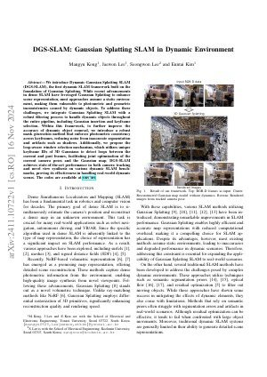
DGS-SLAM: Gaussian Splatting SLAM in Dynamic Environment (2024)
We introduce Dynamic Gaussian Splatting SLAM (DGS-SLAM), the first dynamic SLAM framework built on the foundation of Gaussian Splatting. While recent advancements in dense SLAM have leveraged Gaussian Splatting to enhance scene representation, most approaches assume a static environment, making them vulnerable to photometric and geometric inconsistencies caused by dynamic objects. To address these challenges, we integrate Gaussian Splatting SLAM with a robust filtering process to handle dynamic objects throughout the entire pipeline, including Gaussian insertion and keyframe selection. Within this framework, to further improve the accuracy of dynamic object removal, we introduce a robust mask generation method that enforces photometric consistency across keyframes, reducing noise from inaccurate segmentation and artifacts such as shadows. Additionally, we propose the loop-aware window selection mechanism, which utilizes unique keyframe IDs of 3D Gaussians to detect loops between the current and past frames, facilitating joint optimization of the current camera poses and the Gaussian map. DGS-SLAM achieves state-of-the-art performance in both camera tracking and novel view synthesis on various dynamic SLAM benchmarks, proving its effectiveness in handling real-world dynamic scenes.
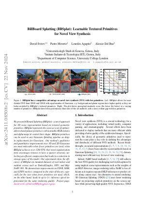
BillBoard Splatting (BBSplat): Learnable Textured Primitives for Novel View Synthesis (2024)
We present billboard Splatting (BBSplat) - a novel approach for 3D scene representation based on textured geometric primitives. BBSplat represents the scene as a set of optimizable textured planar primitives with learnable RGB textures and alpha-maps to control their shape. BBSplat primitives can be used in any Gaussian Splatting pipeline as drop-in replacements for Gaussians. Our method's qualitative and quantitative improvements over 3D and 2D Gaussians are most noticeable when fewer primitives are used, when BBSplat achieves over 1200 FPS. Our novel regularization term encourages textures to have a sparser structure, unlocking an efficient compression that leads to a reduction in storage space of the model. Our experiments show the efficiency of BBSplat on standard datasets of real indoor and outdoor scenes such as Tanks&Temples, DTU, and Mip-NeRF-360. We demonstrate improvements on PSNR, SSIM, and LPIPS metrics compared to the state-of-the-art, especially for the case when fewer primitives are used, which, on the other hand, leads to up to 2 times inference speed improvement for the same rendering quality.
MBA-SLAM: Motion Blur Aware Dense Visual SLAM with Radiance Fields Representation (2024)
Emerging 3D scene representations, such as Neural Radiance Fields (NeRF) and 3D Gaussian Splatting (3DGS), have demonstrated their effectiveness in Simultaneous Localization and Mapping (SLAM) for photo-realistic rendering, particularly when using high-quality video sequences as input. However, existing methods struggle with motion-blurred frames, which are common in real-world scenarios like low-light or long-exposure conditions. This often results in a significant reduction in both camera localization accuracy and map reconstruction quality. To address this challenge, we propose a dense visual SLAM pipeline (i.e. MBA-SLAM) to handle severe motion-blurred inputs. Our approach integrates an efficient motion blur-aware tracker with either neural radiance fields or Gaussian Splatting based mapper. By accurately modeling the physical image formation process of motion-blurred images, our method simultaneously learns 3D scene representation and estimates the cameras' local trajectory during exposure time, enabling proactive compensation for motion blur caused by camera movement. In our experiments, we demonstrate that MBA-SLAM surpasses previous state-of-the-art methods in both camera localization and map reconstruction, showcasing superior performance across a range of datasets, including synthetic and real datasets featuring sharp images as well as those affected by motion blur, highlighting the versatility and robustness of our approach.
3DGS-CD: 3D Gaussian Splatting-based Change Detection for Physical Object Rearrangement (2024)
We present 3DGS-CD, the first 3D Gaussian Splatting (3DGS)-based method for detecting physical object rearrangements in 3D scenes. Our approach estimates 3D object-level changes by comparing two sets of unaligned images taken at different times. Leveraging 3DGS's novel view rendering and EfficientSAM's zero-shot segmentation capabilities, we detect 2D object-level changes, which are then associated and fused across views to estimate 3D changes. Our method can detect changes in cluttered environments using sparse post-change images within as little as 18s, using as few as a single new image. It does not rely on depth input, user instructions, object classes, or object models -- An object is recognized simply if it has been re-arranged. Our approach is evaluated on both public and self-collected real-world datasets, achieving up to 14% higher accuracy and three orders of magnitude faster performance compared to the state-of-the-art radiance-field-based change detection method. This significant performance boost enables a broad range of downstream applications, where we highlight three key use cases: object reconstruction, robot workspace reset, and 3DGS model update. Our code and data will be made available at https://github.com/520xyxyzq/3DGS-CD.
CityGaussianV2: Efficient and Geometrically Accurate Reconstruction for Large-Scale Scenes (2024)
Recently, 3D Gaussian Splatting (3DGS) has revolutionized radiance field reconstruction, manifesting efficient and high-fidelity novel view synthesis. However, accurately representing surfaces, especially in large and complex scenarios, remains a significant challenge due to the unstructured nature of 3DGS. In this paper, we present CityGaussianV2, a novel approach for large-scale scene reconstruction that addresses critical challenges related to geometric accuracy and efficiency. Building on the favorable generalization capabilities of 2D Gaussian Splatting (2DGS), we address its convergence and scalability issues. Specifically, we implement a decomposed-gradient-based densification and depth regression technique to eliminate blurry artifacts and accelerate convergence. To scale up, we introduce an elongation filter that mitigates Gaussian count explosion caused by 2DGS degeneration. Furthermore, we optimize the CityGaussian pipeline for parallel training, achieving up to 10x compression, at least 25% savings in training time, and a 50% decrease in memory usage. We also established standard geometry benchmarks under large-scale scenes. Experimental results demonstrate that our method strikes a promising balance between visual quality, geometric accuracy, as well as storage and training costs.
Neural Fields in Robotics: A Survey (2024)
Neural Fields have emerged as a transformative approach for 3D scene representation in computer vision and robotics, enabling accurate inference of geometry, 3D semantics, and dynamics from posed 2D data. Leveraging differentiable rendering, Neural Fields encompass both continuous implicit and explicit neural representations enabling high-fidelity 3D reconstruction, integration of multi-modal sensor data, and generation of novel viewpoints. This survey explores their applications in robotics, emphasizing their potential to enhance perception, planning, and control. Their compactness, memory efficiency, and differentiability, along with seamless integration with foundation and generative models, make them ideal for real-time applications, improving robot adaptability and decision-making. This paper provides a thorough review of Neural Fields in robotics, categorizing applications across various domains and evaluating their strengths and limitations, based on over 200 papers. First, we present four key Neural Fields frameworks: Occupancy Networks, Signed Distance Fields, Neural Radiance Fields, and Gaussian Splatting. Second, we detail Neural Fields' applications in five major robotics domains: pose estimation, manipulation, navigation, physics, and autonomous driving, highlighting key works and discussing takeaways and open challenges. Finally, we outline the current limitations of Neural Fields in robotics and propose promising directions for future research.
Large Spatial Model: End-to-end Unposed Images to Semantic 3D (2024)
Reconstructing and understanding 3D structures from a limited number of images is a well-established problem in computer vision. Traditional methods usually break this task into multiple subtasks, each requiring complex transformations between different data representations. For instance, dense reconstruction through Structure-from-Motion (SfM) involves converting images into key points, optimizing camera parameters, and estimating structures. Afterward, accurate sparse reconstructions are required for further dense modeling, which is subsequently fed into task-specific neural networks. This multi-step process results in considerable processing time and increased engineering complexity. In this work, we present the Large Spatial Model (LSM), which processes unposed RGB images directly into semantic radiance fields. LSM simultaneously estimates geometry, appearance, and semantics in a single feed-forward operation, and it can generate versatile label maps by interacting with language at novel viewpoints. Leveraging a Transformer-based architecture, LSM integrates global geometry through pixel-aligned point maps. To enhance spatial attribute regression, we incorporate local context aggregation with multi-scale fusion, improving the accuracy of fine local details. To tackle the scarcity of labeled 3D semantic data and enable natural language-driven scene manipulation, we incorporate a pre-trained 2D language-based segmentation model into a 3D-consistent semantic feature field. An efficient decoder then parameterizes a set of semantic anisotropic Gaussians, facilitating supervised end-to-end learning. Extensive experiments across various tasks show that LSM unifies multiple 3D vision tasks directly from unposed images, achieving real-time semantic 3D reconstruction for the first time.
Fully Explicit Dynamic Gaussian Splatting (2024)
3D Gaussian Splatting has shown fast and high-quality rendering results in static scenes by leveraging dense 3D prior and explicit representations. Unfortunately, the benefits of the prior and representation do not involve novel view synthesis for dynamic motions. Ironically, this is because the main barrier is the reliance on them, which requires increasing training and rendering times to account for dynamic motions. In this paper, we design a \Edited{Explicit 4D Gaussian Splatting(Ex4DGS)}. Our key idea is to firstly separate static and dynamic Gaussians during training, and to explicitly sample positions and rotations of the dynamic Gaussians at sparse timestamps. The sampled positions and rotations are then interpolated to represent both spatially and temporally continuous motions of objects in dynamic scenes as well as reducing computational cost. Additionally, we introduce a progressive training scheme and a point-backtracking technique that improves Ex4DGS's convergence. We initially train Ex4DGS using short timestamps and progressively extend timestamps, which makes it work well with a few point clouds. The point-backtracking is used to quantify the cumulative error of each Gaussian over time, enabling the detection and removal of erroneous Gaussians in dynamic scenes. Comprehensive experiments on various scenes demonstrate the state-of-the-art rendering quality from our method, achieving fast rendering of 62 fps on a single 2080Ti GPU.
Generalizable and Animatable Gaussian Head Avatar (2024)
In this paper, we propose Generalizable and Animatable Gaussian head Avatar (GAGAvatar) for one-shot animatable head avatar reconstruction. Existing methods rely on neural radiance fields, leading to heavy rendering consumption and low reenactment speeds. To address these limitations, we generate the parameters of 3D Gaussians from a single image in a single forward pass. The key innovation of our work is the proposed dual-lifting method, which produces high-fidelity 3D Gaussians that capture identity and facial details. Additionally, we leverage global image features and the 3D morphable model to construct 3D Gaussians for controlling expressions. After training, our model can reconstruct unseen identities without specific optimizations and perform reenactment rendering at real-time speeds. Experiments show that our method exhibits superior performance compared to previous methods in terms of reconstruction quality and expression accuracy. We believe our method can establish new benchmarks for future research and advance applications of digital avatars.
MotionGS: Exploring Explicit Motion Guidance for Deformable 3D Gaussian Splatting (2024)
Dynamic scene reconstruction is a long-term challenge in the field of 3D vision. Recently, the emergence of 3D Gaussian Splatting has provided new insights into this problem. Although subsequent efforts rapidly extend static 3D Gaussian to dynamic scenes, they often lack explicit constraints on object motion, leading to optimization difficulties and performance degradation. To address the above issues, we propose a novel deformable 3D Gaussian splatting framework called MotionGS, which explores explicit motion priors to guide the deformation of 3D Gaussians. Specifically, we first introduce an optical flow decoupling module that decouples optical flow into camera flow and motion flow, corresponding to camera movement and object motion respectively. Then the motion flow can effectively constrain the deformation of 3D Gaussians, thus simulating the motion of dynamic objects. Additionally, a camera pose refinement module is proposed to alternately optimize 3D Gaussians and camera poses, mitigating the impact of inaccurate camera poses. Extensive experiments in the monocular dynamic scenes validate that MotionGS surpasses state-of-the-art methods and exhibits significant superiority in both qualitative and quantitative results.
SplaTraj: Camera Trajectory Generation with Semantic Gaussian Splatting (2024)
Many recent developments for robots to represent environments have focused on photorealistic reconstructions. This paper particularly focuses on generating sequences of images from the photorealistic Gaussian Splatting models, that match instructions that are given by user-inputted language. We contribute a novel framework, SplaTraj, which formulates the generation of images within photorealistic environment representations as a continuous-time trajectory optimization problem. Costs are designed so that a camera following the trajectory poses will smoothly traverse through the environment and render the specified spatial information in a photogenic manner. This is achieved by querying a photorealistic representation with language embedding to isolate regions that correspond to the user-specified inputs. These regions are then projected to the camera's view as it moves over time and a cost is constructed. We can then apply gradient-based optimization and differentiate through the rendering to optimize the trajectory for the defined cost. The resulting trajectory moves to photogenically view each of the specified objects. We empirically evaluate our approach on a suite of environments and instructions, and demonstrate the quality of generated image sequences.
3DGS-DET: Empower 3D Gaussian Splatting with Boundary Guidance and Box-Focused Sampling for 3D Object Detection (2024)
Neural Radiance Fields (NeRF) are widely used for novel-view synthesis and have been adapted for 3D Object Detection (3DOD), offering a promising approach to 3D object detection through view-synthesis representation. However, NeRF faces inherent limitations: (i) It has limited representational capacity for 3DOD due to its implicit nature, and (ii) it suffers from slow rendering speeds. Recently, 3D Gaussian Splatting (3DGS) has emerged as an explicit 3D representation that addresses these limitations with faster rendering capabilities. Inspired by these advantages, this paper introduces 3DGS into 3DOD for the first time, identifying two main challenges: (i) Ambiguous spatial distribution of Gaussian blobs – 3DGS primarily relies on 2D pixel-level supervision, resulting in unclear 3D spatial distribution of Gaussian blobs and poor differentiation between objects and background, which hinders 3DOD; (ii) Excessive background blobs – 2D images often include numerous background pixels, leading to densely reconstructed 3DGS with many noisy Gaussian blobs representing the background, negatively affecting detection. To tackle the challenge (i), we leverage the fact that 3DGS reconstruction is derived from 2D images, and propose an elegant and efficient solution by incorporating 2D Boundary Guidance to significantly enhance the spatial distribution of Gaussian blobs, resulting in clearer differentiation between objects and their background (see Fig. 1). To address the challenge (ii), we propose a Box-Focused Sampling strategy using 2D boxes to generate object probability distribution in 3D spaces, allowing effective probabilistic sampling in 3D to retain more object blobs and reduce noisy background blobs. Benefiting from the proposed Boundary Guidance and Box-Focused Sampling, our final method, 3DGS-DET, achieves significant improvements (+5.6 on mAP@0.25, +3.7 on mAP@0.5) over our basic pipeline version, without introducing any additional learnable parameters. Furthermore, 3DGS-DET significantly outperforms the state-of-the-art NeRF-based method, NeRF-Det, achieving improvements of +6.6 on mAP@0.25 and +8.1 on mAP@0.5 for the ScanNet dataset, and impressive +31.5 on mAP@0.25 for the ARKITScenes dataset. Codes and models are publicly available at: https://github.com/yangcaoai/3DGS-DET.
Language-Embedded Gaussian Splats (LEGS): Incrementally Building Room-Scale Representations with a Mobile Robot (2024)
Building semantic 3D maps is valuable for searching for objects of interest in offices, warehouses, stores, and homes. We present a mapping system that incrementally builds a Language-Embedded Gaussian Splat (LEGS): a detailed 3D scene representation that encodes both appearance and semantics in a unified representation. LEGS is trained online as a robot traverses its environment to enable localization of open-vocabulary object queries. We evaluate LEGS on 4 room-scale scenes where we query for objects in the scene to assess how LEGS can capture semantic meaning. We compare LEGS to LERF and find that while both systems have comparable object query success rates, LEGS trains over 3.5x faster than LERF. Results suggest that a multi-camera setup and incremental bundle adjustment can boost visual reconstruction quality in constrained robot trajectories, and suggest LEGS can localize open-vocabulary and long-tail object queries with up to 66% accuracy.
V^3: Viewing Volumetric Videos on Mobiles via Streamable 2D Dynamic Gaussians (2024)
Experiencing high-fidelity volumetric video as seamlessly as 2D videos is a long-held dream. However, current dynamic 3DGS methods, despite their high rendering quality, face challenges in streaming on mobile devices due to computational and bandwidth constraints. In this paper, we introduce V^3 (Viewing Volumetric Videos), a novel approach that enables high-quality mobile rendering through the streaming of dynamic Gaussians. Our key innovation is to view dynamic 3DGS as 2D videos, facilitating the use of hardware video codecs. Additionally, we propose a two-stage training strategy to reduce storage requirements with rapid training speed. The first stage employs hash encoding and shallow MLP to learn motion, then reduces the number of Gaussians through pruning to meet the streaming requirements, while the second stage fine tunes other Gaussian attributes using residual entropy loss and temporal loss to improve temporal continuity. This strategy, which disentangles motion and appearance, maintains high rendering quality with compact storage requirements. Meanwhile, we designed a multi-platform player to decode and render 2D Gaussian videos. Extensive experiments demonstrate the effectiveness of V^3, outperforming other methods by enabling high-quality rendering and streaming on common devices, which is unseen before. As the first to stream dynamic Gaussians on mobile devices, our companion player offers users an unprecedented volumetric video experience, including smooth scrolling and instant sharing. Our project page with source code is available at this https URL.
EdgeGaussians -- 3D Edge Mapping via Gaussian Splatting (2024)
With their meaningful geometry and their omnipresence in the 3D world, edges are extremely useful primitives in computer vision. 3D edges comprise of lines and curves, and methods to reconstruct them use either multi-view images or point clouds as input. State-of-the-art image-based methods first learn a 3D edge point cloud then fit 3D edges to it. The edge point cloud is obtained by learning a 3D neural implicit edge field from which the 3D edge points are sampled on a specific level set (0 or 1). However, such methods present two important drawbacks: i) it is not realistic to sample points on exact level sets due to float imprecision and training inaccuracies. Instead, they are sampled within a range of levels so the points do not lie accurately on the 3D edges and require further processing. ii) Such implicit representations are computationally expensive and require long training times. In this paper, we address these two limitations and propose a 3D edge mapping that is simpler, more efficient, and preserves accuracy. Our method learns explicitly the 3D edge points and their edge direction hence bypassing the need for point sampling. It casts a 3D edge point as the center of a 3D Gaussian and the edge direction as the principal axis of the Gaussian. Such a representation has the advantage of being not only geometrically meaningful but also compatible with the efficient training optimization defined in Gaussian Splatting. Results show that the proposed method produces edges as accurate and complete as the state-of-the-art while being an order of magnitude faster.
Gradient-Driven 3D Segmentation and Affordance Transfer in Gaussian Splatting Using 2D Masks (2024)
In this paper, we introduce a novel voting-based method that extends 2D segmentation models to 3D Gaussian splats. Our approach leverages masked gradients, where gradients are filtered by input 2D masks, and these gradients are used as votes to achieve accurate segmentation. As a byproduct, we found that inference-time gradients can also be used to prune Gaussians, resulting in up to 21% compression. Additionally, we explore few-shot affordance transfer, allowing annotations from 2D images to be effectively transferred onto 3D Gaussian splats. The robust yet straightforward mathematical formulation underlying this approach makes it a highly effective tool for numerous downstream applications, such as augmented reality (AR), object editing, and robotics.
SplatFields: Neural Gaussian Splats for Sparse 3D and 4D Reconstruction (2024)
Digitizing 3D static scenes and 4D dynamic events from multi-view images has long been a challenge in computer vision and graphics. Recently, 3D Gaussian Splatting (3DGS) has emerged as a practical and scalable reconstruction method, gaining popularity due to its impressive reconstruction quality, real-time rendering capabilities, and compatibility with widely used visualization tools. However, the method requires a substantial number of input views to achieve high-quality scene reconstruction, introducing a significant practical bottleneck. This challenge is especially severe in capturing dynamic scenes, where deploying an extensive camera array can be prohibitively costly. In this work, we identify the lack of spatial autocorrelation of splat features as one of the factors contributing to the suboptimal performance of the 3DGS technique in sparse reconstruction settings. To address the issue, we propose an optimization strategy that effectively regularizes splat features by modeling them as the outputs of a corresponding implicit neural field. This results in a consistent enhancement of reconstruction quality across various scenarios. Our approach effectively handles static and dynamic cases, as demonstrated by extensive testing across different setups and scene complexities.
BEINGS: Bayesian Embodied Image-goal Navigation with Gaussian Splatting (2024)
Image-goal navigation enables a robot to reach the location where a target image was captured, using visual cues for guidance. However, current methods either rely heavily on data and computationally expensive learning-based approaches or lack efficiency in complex environments due to insufficient exploration strategies. To address these limitations, we propose Bayesian Embodied Image-goal Navigation Using Gaussian Splatting, a novel method that formulates ImageNav as an optimal control problem within a model predictive control framework. BEINGS leverages 3D Gaussian Splatting as a scene prior to predict future observations, enabling efficient, real-time navigation decisions grounded in the robot’s sensory experiences. By integrating Bayesian updates, our method dynamically refines the robot's strategy without requiring extensive prior experience or data. Our algorithm is validated through extensive simulations and physical experiments, showcasing its potential for embodied robot systems in visually complex scenarios.
PSHuman: Photorealistic Single-view Human Reconstruction using Cross-Scale Diffusion (2024)
Detailed and photorealistic 3D human modeling is essential for various applications and has seen tremendous progress. However, full-body reconstruction from a monocular RGB image remains challenging due to the ill-posed nature of the problem and sophisticated clothing topology with self-occlusions. In this paper, we propose PSHuman, a novel framework that explicitly reconstructs human meshes utilizing priors from the multiview diffusion model. It is found that directly applying multiview diffusion on single-view human images leads to severe geometric distortions, especially on generated faces. To address it, we propose a cross-scale diffusion that models the joint probability distribution of global full-body shape and local facial characteristics, enabling detailed and identity-preserved novel-view generation without any geometric distortion. Moreover, to enhance cross-view body shape consistency of varied human poses, we condition the generative model on parametric models like SMPL-X, which provide body priors and prevent unnatural views inconsistent with human anatomy. Leveraging the generated multi-view normal and color images, we present SMPLX-initialized explicit human carving to recover realistic textured human meshes efficiently. Extensive experimental results and quantitative evaluations on CAPE and THuman2.1 datasets demonstrate PSHumans superiority in geometry details, texture fidelity, and generalization capability.
DualGS: Robust Dual Gaussian Splatting for Immersive Human-centric Volumetric Videos (2024)
Volumetric video represents a transformative advancement in visual media, enabling users to freely navigate immersive virtual experiences and narrowing the gap between digital and real worlds. However, the need for extensive manual intervention to stabilize mesh sequences and the generation of excessively large assets in existing workflows impedes broader adoption. In this paper, we present a novel Gaussian-based approach, dubbed \textit{DualGS}, for real-time and high-fidelity playback of complex human performance with excellent compression ratios. Our key idea in DualGS is to separately represent motion and appearance using the corresponding skin and joint Gaussians. Such an explicit disentanglement can significantly reduce motion redundancy and enhance temporal coherence. We begin by initializing the DualGS and anchoring skin Gaussians to joint Gaussians at the first frame. Subsequently, we employ a coarse-to-fine training strategy for frame-by-frame human performance modeling. It includes a coarse alignment phase for overall motion prediction as well as a fine-grained optimization for robust tracking and high-fidelity rendering. To integrate volumetric video seamlessly into VR environments, we efficiently compress motion using entropy encoding and appearance using codec compression coupled with a persistent codebook. Our approach achieves a compression ratio of up to 120 times, only requiring approximately 350KB of storage per frame. We demonstrate the efficacy of our representation through photo-realistic, free-view experiences on VR headsets, enabling users to immersively watch musicians in performance and feel the rhythm of the notes at the performers' fingertips.
OmniRe: Omni Urban Scene Reconstruction (2024)
We introduce OmniRe, a holistic approach for efficiently reconstructing high-fidelity dynamic urban scenes from on-device logs. Recent methods for modeling driving sequences using neural radiance fields or Gaussian Splatting have demonstrated the potential of reconstructing challenging dynamic scenes, but often overlook pedestrians and other non-vehicle dynamic actors, hindering a complete pipeline for dynamic urban scene reconstruction. To that end, we propose a comprehensive 3DGS framework for driving scenes, named OmniRe, that allows for accurate, full-length reconstruction of diverse dynamic objects in a driving log. OmniRe builds dynamic neural scene graphs based on Gaussian representations and constructs multiple local canonical spaces that model various dynamic actors, including vehicles, pedestrians, and cyclists, among many others. This capability is unmatched by existing methods. OmniRe allows us to holistically reconstruct different objects present in the scene, subsequently enabling the simulation of reconstructed scenarios with all actors participating in real-time (~60Hz). Extensive evaluations on the Waymo dataset show that our approach outperforms prior state-of-the-art methods quantitatively and qualitatively by a large margin. We believe our work fills a critical gap in driving reconstruction.
LapisGS: Layered Progressive 3D Gaussian Splatting for Adaptive Streaming (2024)
The rise of Extended Reality (XR) requires efficient streaming of 3D online worlds, challenging current 3DGS representations to adapt to bandwidth-constrained environments. We propose LapisGS, a layered 3DGS that supports adaptive streaming and progressive rendering. Our method constructs a layered structure for cumulative representation, incorporates dynamic opacity optimization to maintain visual fidelity, and utilizes occupancy maps to efficiently manage Gaussian splats. This proposed model offers a progressive representation supporting a continuous rendering quality adapted for bandwidth-aware streaming. Extensive experiments validate the effectiveness of our approach in balancing visual fidelity with the compactness of the model, with up to 50.71% improvement in SSIM, 286.53% improvement in LPIPS, and 318.41% reduction in model size, and shows its potential for bandwidth-adapted 3D streaming and rendering applications.
'25] 10. TranSplat: Generalizable 3D Gaussian Splatting from Sparse Multi-View Images with Transformers (2024)
Compared with previous 3D reconstruction methods like Nerf, recent Generalizable 3D Gaussian Splatting (G-3DGS) methods demonstrate impressive efficiency even in the sparse-view setting. However, the promising reconstruction performance of existing G-3DGS methods relies heavily on accurate multi-view feature matching, which is quite challenging. Especially for the scenes that have many non-overlapping areas between various views and contain numerous similar regions, the matching performance of existing methods is poor and the reconstruction precision is limited. To address this problem, we develop a strategy that utilizes a predicted depth confidence map to guide accurate local feature matching. In addition, we propose to utilize the knowledge of existing monocular depth estimation models as prior to boost the depth estimation precision in non-overlapping areas between views. Combining the proposed strategies, we present a novel G-3DGS method named TranSplat, which obtains the best performance on both the RealEstate10K and ACID benchmarks while maintaining competitive speed and presenting strong cross-dataset generalization ability.
GSLoc: Efficient Camera Pose Refinement via 3D Gaussian Splatting (2024)
We leverage 3D Gaussian Splatting (3DGS) as a scene representation and propose a novel test-time camera pose refinement framework, GSLoc. This framework enhances the localization accuracy of state-of-the-art absolute pose regression and scene coordinate regression methods. The 3DGS model renders high-quality synthetic images and depth maps to facilitate the establishment of 2D-3D correspondences. GSLoc obviates the need for training feature extractors or descriptors by operating directly on RGB images, utilizing the 3D foundation model, MASt3R, for precise 2D matching. To improve the robustness of our model in challenging outdoor environments, we incorporate an exposure-adaptive module within the 3DGS framework. Consequently, GSLoc enables efficient one-shot pose refinement given a single RGB query and a coarse initial pose estimation. Our proposed approach surpasses leading NeRF-based optimization methods in both accuracy and runtime across indoor and outdoor visual localization benchmarks, achieving new state-of-the-art accuracy on two indoor datasets.
LoopSplat: Loop Closure by Registering 3D Gaussian Splats (2024)
Simultaneous Localization and Mapping (SLAM) based on 3D Gaussian Splats (3DGS) has recently shown promise towards more accurate, dense 3D scene maps. However, existing 3DGS-based methods fail to address the global consistency of the scene via loop closure and/or global bundle adjustment. To this end, we propose LoopSplat, which takes RGB-D images as input and performs dense mapping with 3DGS submaps and frame-to-model tracking. LoopSplat triggers loop closure online and computes relative loop edge constraints between submaps directly via 3DGS registration, leading to improvements in efficiency and accuracy over traditional global-to-local point cloud registration. It uses a robust pose graph optimization formulation and rigidly aligns the submaps to achieve global consistency. Evaluation on the synthetic Replica and real-world TUM-RGBD, ScanNet, and ScanNet++ datasets demonstrates competitive or superior tracking, mapping, and rendering compared to existing methods for dense RGB-D SLAM.
Rethinking Open-Vocabulary Segmentation of Radiance Fields in 3D Space (2024)
Understanding the 3D semantics of a scene is a fundamental problem for various scenarios such as embodied agents. While NeRFs and 3DGS excel at novel-view synthesis, previous methods for understanding their semantics have been limited to incomplete 3D understanding: their segmentation results are 2D masks and their supervision is anchored at 2D pixels. This paper revisits the problem set to pursue a better 3D understanding of a scene modeled by NeRFs and 3DGS as follows. 1) We directly supervise the 3D points to train the language embedding field. It achieves state-of-the-art accuracy without relying on multi-scale language embeddings. 2) We transfer the pre-trained language field to 3DGS, achieving the first real-time rendering speed without sacrificing training time or accuracy. 3) We introduce a 3D querying and evaluation protocol for assessing the reconstructed geometry and semantics together. Code, checkpoints, and annotations will be available online.
Radiance Fields for Robotic Teleoperation (2024)
Radiance field methods such as Neural Radiance Fields (NeRFs) or 3D Gaussian Splatting (3DGS), have revolutionized graphics and novel view synthesis. Their ability to synthesize new viewpoints with photo-realistic quality, as well as capture complex volumetric and specular scenes, makes them an ideal visualization for robotic teleoperation setups. Direct camera teleoperation provides high-fidelity operation at the cost of maneuverability, while reconstruction-based approaches offer controllable scenes with lower fidelity. With this in mind, we propose replacing the traditional reconstruction-visualization components of the robotic teleoperation pipeline with online Radiance Fields, offering highly maneuverable scenes with photorealistic quality. As such, there are three main contributions to state of the art: (1) online training of Radiance Fields using live data from multiple cameras, (2) support for a variety of radiance methods including NeRF and 3DGS, (3) visualization suite for these methods including a virtual reality scene. To enable seamless integration with existing setups, these components were tested with multiple robots in multiple configurations and were displayed using traditional tools as well as the VR headset. The results across methods and robots were compared quantitatively to a baseline of mesh reconstruction, and a user study was conducted to compare the different visualization methods.
3D Gaussian Ray Tracing: Fast Tracing of Particle Scenes (2024)
Particle-based representations of radiance fields such as 3D Gaussian Splatting have found great success for reconstructing and re-rendering of complex scenes. Most existing methods render particles via rasterization, projecting them to screen space tiles for processing in a sorted order. This work instead considers ray tracing the particles, building a bounding volume hierarchy and casting a ray for each pixel using high-performance GPU ray tracing hardware. To efficiently handle large numbers of semi-transparent particles, we describe a specialized rendering algorithm which encapsulates particles with bounding meshes to leverage fast ray-triangle intersections, and shades batches of intersections in depth-order. The benefits of ray tracing are well-known in computer graphics: processing incoherent rays for secondary lighting effects such as shadows and reflections, rendering from highly-distorted cameras common in robotics, stochastically sampling rays, and more. With our renderer, this flexibility comes at little cost compared to rasterization. Experiments demonstrate the speed and accuracy of our approach, as well as several applications in computer graphics and vision. We further propose related improvements to the basic Gaussian representation, including a simple use of generalized kernel functions which significantly reduces particle hit counts.
Segment Any 4D Gaussians (2024)
Modeling, understanding, and reconstructing the real world are crucial in XR/VR. Recently, 3D Gaussian Splatting (3D-GS) methods have shown remarkable success in modeling and understanding 3D scenes. Similarly, various 4D representations have demonstrated the ability to capture the dynamics of the 4D world. However, there is a dearth of research focusing on segmentation within 4D representations. In this paper, we propose Segment Any 4D Gaussians (SA4D), one of the first frameworks to segment anything in the 4D digital world based on 4D Gaussians. In SA4D, an efficient temporal identity feature field is introduced to handle Gaussian drifting, with the potential to learn precise identity features from noisy and sparse input. Additionally, a 4D segmentation refinement process is proposed to remove artifacts. Our SA4D achieves precise, high-quality segmentation within seconds in 4D Gaussians and shows the ability to remove, recolor, compose, and render high-quality anything masks. More demos are available at: https://jsxzs.github.io/sa4d/.
GSCore: Efficient Radiance Field Rendering via Architectural Support for 3D Gaussian Splatting (2024)
This paper presents GSCore, a hardware acceleration unit that efficiently executes the rendering pipeline of 3D Gaussian Splatting with algorithmic optimizations. GSCore builds on the observations from an in-depth analysis of Gaussian-based radiance field rendering to enhance computational efficiency and bring the technique to wide adoption. In doing so, we present several optimization techniques, Gaussian shape-aware intersection test, hierarchical sorting, and subtile skipping, all of which are synergistically integrated with GSCore. We implement the hardware design of GSCore, synthesize it using a commercial 28nm technology, and evaluate the performance across a range of synthetic and real-world scenes with varying image resolutions. Our evaluation results show that GSCore achieves a 15.86× speedup on average over the mobile consumer GPU with a substantially smaller area and lower energy consumption.
Optimizing Dynamic NeRF and 3DGS with No Video Synchronization (2024)
Recent advancements in 4D scene reconstruction using dynamic NeRF and 3DGS have demonstrated the ability to represent dynamic scenes from multi-view videos. However, they fail to reconstruct the dynamic scenes and struggle to fit even the training views in unsynchronized settings. It happens because they employ a single latent embedding for a frame, while the multi-view images at the same frame were actually captured at different moments. To address this limitation, we introduce time offsets for individual unsynchronized videos and jointly optimize the offsets with the field. By design, our method is applicable for various baselines, even regardless of the types of radiance fields. We conduct experiments on the common Plenoptic Video Dataset and a newly built Unsynchronized Dynamic Blender Dataset to verify the performance of our method.
EgoGaussian: Dynamic Scene Understanding from Egocentric Video with 3D Gaussian Splatting (2024)
Human activities are inherently complex, often involving numerous object interactions. To better understand these activities, it is crucial to model their interactions with the environment captured through dynamic changes. The recent availability of affordable head-mounted cameras and egocentric data offers a more accessible and efficient means to understand human-object interactions in 3D environments. However, most existing methods for human activity modeling neglect the dynamic interactions with objects, resulting in only static representations. The few existing solutions often require inputs from multiple sources, including multi-camera setups, depth-sensing cameras, or kinesthetic sensors. To this end, we introduce EgoGaussian, the first method capable of simultaneously reconstructing 3D scenes and dynamically tracking 3D object motion from RGB egocentric input alone. We leverage the uniquely discrete nature of Gaussian Splatting and segment dynamic interactions from the background, with both having explicit representations. Our approach employs a clip-level online learning pipeline that leverages the dynamic nature of human activities, allowing us to reconstruct the temporal evolution of the scene in chronological order and track rigid object motion. EgoGaussian shows significant improvements in terms of both dynamic object and background reconstruction quality compared to the state-of-the-art. We also qualitatively demonstrate the high quality of the reconstructed models.
On Scaling Up 3D Gaussian Splatting Training (2024)
3D Gaussian Splatting (3DGS) is increasingly popular for 3D reconstruction due to its superior visual quality and rendering speed. However, 3DGS training currently occurs on a single GPU, limiting its ability to handle high-resolution and large-scale 3D reconstruction tasks due to memory constraints. We introduce Grendel, a distributed system designed to partition 3DGS parameters and parallelize computation across multiple GPUs. As each Gaussian affects a small, dynamic subset of rendered pixels, Grendel employs sparse all-to-all communication to transfer the necessary Gaussians to pixel partitions and performs dynamic load balancing. Unlike existing 3DGS systems that train using one camera view image at a time, Grendel supports batched training with multiple views. We explore various optimization hyperparameter scaling strategies and find that a simple sqrt(batch size) scaling rule is highly effective. Evaluations using large-scale, high-resolution scenes show that Grendel enhances rendering quality by scaling up 3DGS parameters across multiple GPUs. On the Rubble dataset, we achieve a test PSNR of 27.28 by distributing 40.4 million Gaussians across 16 GPUs, compared to a PSNR of 26.28 using 11.2 million Gaussians on a single GPU. Grendel is an open-source project available at: https://github.com/nyu-systems/Grendel-GS
Reducing the Memory Footprint of 3D Gaussian Splatting (2024)
3D Gaussian splatting provides excellent visual quality for novel view synthesis, with fast training and realtime rendering; unfortunately, the memory requirements of this method for storing and transmission are unreasonably high. We first analyze the reasons for this, identifying three main areas where storage can be reduced: the number of 3D Gaussian primitives used to represent a scene, the number of coefficients for the spherical harmonics used to represent directional radiance, and the precision required to store Gaussian primitive attributes. We present a solution to each of these issues. First, we propose an efficient, resolutionaware primitive pruning approach, reducing the primitive count by half. Second, we introduce an adaptive adjustment method to choose the number of coefficients used to represent directional radiance for each Gaussian primitive, and finally a codebook-based quantization method, together with a half-float representation for further memory reduction. Taken together, these three components result in a ×27 reduction in overall size on disk on the standard datasets we tested, along with a x1.7 speedup in rendering speed. We demonstrate our method on standard datasets and show how our solution results in significantly reduced download times when using the method on a mobile device (see Fig. 1).
Taming 3DGS: High-Quality Radiance Fields with Limited Resources (2024)
3D Gaussian Splatting (3DGS) has transformed novel-view synthesis with its fast, interpretable, and high-fidelity rendering. However, its resource requirements limit its usability. Especially on constrained devices, training performance degrades quickly and often cannot complete due to excessive memory consumption of the model. The method converges with an indefinite number of Gaussians -- many of them redundant -- making rendering unnecessarily slow and preventing its usage in downstream tasks that expect fixed-size inputs. To address these issues, we tackle the challenges of training and rendering 3DGS models on a budget. We use a guided, purely constructive densification process that steers densification toward Gaussians that raise the reconstruction quality. Model size continuously increases in a controlled manner towards an exact budget, using score-based densification of Gaussians with training-time priors that measure their contribution. We further address training speed obstacles: following a careful analysis of 3DGS' original pipeline, we derive faster, numerically equivalent solutions for gradient computation and attribute updates, including an alternative parallelization for efficient backpropagation. We also propose quality-preserving approximations where suitable to reduce training time even further. Taken together, these enhancements yield a robust, scalable solution with reduced training times, lower compute and memory requirements, and high quality. Our evaluation shows that in a budgeted setting, we obtain competitive quality metrics with 3DGS while achieving a 4--5x reduction in both model size and training time. With more generous budgets, our measured quality surpasses theirs. These advances open the door for novel-view synthesis in constrained environments, e.g., mobile devices.
HumanSplat: Generalizable Single-Image Human Gaussian Splatting with Structure Priors (2023)
Despite recent advancements in high-fidelity human reconstruction techniques, the requirements for densely captured images or time-consuming per-instance optimization significantly hinder their applications in broader scenarios. To tackle these issues, we present HumanSplat that predicts the 3D Gaussian Splatting properties of any human from a single input image in a generalizable manner. In particular, HumanSplat comprises a 2D multi-view diffusion model and a latent reconstruction transformer with human structure priors that adeptly integrate geometric priors and semantic features within a unified framework. A hierarchical loss that incorporates human semantic information is further designed to achieve high-fidelity texture modeling and better constrain the estimated multiple views. Comprehensive experiments on standard benchmarks and in-the-wild images demonstrate that HumanSplat surpasses existing state-of-the-art methods in achieving photorealistic novel-view synthesis. Project page: https://humansplat.github.io/.
A Hierarchical 3D Gaussian Representation for Real-Time Rendering of Very Large Datasets (2024)
Novel view synthesis has seen major advances in recent years, with 3D Gaussian splatting offering an excellent level of visual quality, fast training and real-time rendering. However, the resources needed for training and rendering inevitably limit the size of the captured scenes that can be represented with good visual quality. We introduce a hierarchy of 3D Gaussians that preserves visual quality for very large scenes, while offering an efficient Level-of-Detail (LOD) solution for efficient rendering of distant content with effective level selection and smooth transitions between levels. We introduce a divide-and-conquer approach that allows us to train very large scenes in independent chunks. We consolidate the chunks into a hierarchy that can be optimized to further improve visual quality of Gaussians merged into intermediate nodes. Very large captures typically have sparse coverage of the scene, presenting many challenges to the original 3D Gaussian splatting training method; we adapt and regularize training to account for these issues. We present a complete solution, that enables real-time rendering of very large scenes and can adapt to available resources thanks to our LOD method. We show results for captured scenes with up to tens of thousands of images with a simple and affordable rig, covering trajectories of up to several kilometers and lasting up to one hour.
Effective Rank Analysis and Regularization for Enhanced 3D Gaussian Splatting (2024)
3D reconstruction from multi-view images is one of the fundamental challenges in computer vision and graphics. Recently, 3D Gaussian Splatting (3DGS) has emerged as a promising technique capable of real-time rendering with high-quality 3D reconstruction. This method utilizes 3D Gaussian representation and tile-based splatting techniques, bypassing the expensive neural field querying. Despite its potential, 3DGS encounters challenges, including needle-like artifacts, suboptimal geometries, and inaccurate normals, due to the Gaussians converging into anisotropic Gaussians with one dominant variance. We propose using effective rank analysis to examine the shape statistics of 3D Gaussian primitives, and identify the Gaussians indeed converge into needle-like shapes with the effective rank 1. To address this, we introduce effective rank as a regularization, which constrains the structure of the Gaussians. Our new regularization method enhances normal and geometry reconstruction while reducing needle-like artifacts. The approach can be integrated as an add-on module to other 3DGS variants, improving their quality without compromising visual fidelity.

3DGS.zip: A survey on 3D Gaussian Splatting Compression Methods (2024)
We present a work-in-progress survey on 3D Gaussian Splatting compression methods, focusing on their statistical performance across various benchmarks. This survey aims to facilitate comparability by summarizing key statistics of different compression approaches in a tabulated format. The datasets evaluated include TanksAndTemples, MipNeRF360, DeepBlending, and SyntheticNeRF. For each method, we report the Peak Signal-to-Noise Ratio (PSNR), Structural Similarity Index (SSIM), Learned Perceptual Image Patch Similarity (LPIPS), and the resultant size in megabytes (MB), as provided by the respective authors. This is an ongoing, open project, and we invite contributions from the research community as GitHub issues or pull requests. Please visit https://w-m.github.io/3dgs-compression-survey/ for more information and a sortable version of the table.
ICE-G: Image Conditional Editing of 3D Gaussian Splats (2024)
Recently many techniques have emerged to create high quality 3D assets and scenes. When it comes to editing of these objects, however, existing approaches are either slow, compromise on quality, or do not provide enough customization. We introduce a novel approach to quickly edit a 3D model from a single reference view. Our technique first segments the edit image, and then matches semantically corresponding regions across chosen segmented dataset views using DINO features. A color or texture change from a particular region of the edit image can then be applied to other views automatically in a semantically sensible manner. These edited views act as an updated dataset to further train and re-style the 3D scene. The end-result is therefore an edited 3D model. Our framework enables a wide variety of editing tasks such as manual local edits, correspondence based style transfer from any example image, and a combination of different styles from multiple example images. We use Gaussian Splats as our primary 3D representation due to their speed and ease of local editing, but our technique works for other methods such as NeRFs as well. We show through multiple examples that our method produces higher quality results while offering fine grained control of editing.
Trim 3D Gaussian Splatting for Accurate Geometry Representation (2024)
In this paper, we introduce Trim 3D Gaussian Splatting (TrimGS) to reconstruct accurate 3D geometry from images. Previous arts for geometry reconstruction from 3D Gaussians mainly focus on exploring strong geometry regularization. Instead, from a fresh perspective, we propose to obtain accurate 3D geometry of a scene by Gaussian trimming, which selectively removes the inaccurate geometry while preserving accurate structures. To achieve this, we analyze the contributions of individual 3D Gaussians and propose a contribution-based trimming strategy to remove the redundant or inaccurate Gaussians. Furthermore, our experimental and theoretical analyses reveal that a relatively small Gaussian scale is a non-negligible factor in representing and optimizing the intricate details. Therefore the proposed TrimGS maintains relatively small Gaussian scales. In addition, TrimGS is also compatible with the effective geometry regularization strategies in previous arts. When combined with the original 3DGS and the state-of-the-art 2DGS, TrimGS consistently yields more accurate geometry and higher perceptual quality.
4Real: Towards Photorealistic 4D Scene Generation via Video Diffusion Models (2024)
Existing dynamic scene generation methods mostly rely on distilling knowledge from pre-trained 3D generative models, which are typically fine-tuned on synthetic object datasets. As a result, the generated scenes are often object-centric and lack photorealism. To address these limitations, we introduce a novel pipeline designed for photorealistic text-to-4D scene generation, discarding the dependency on multi-view generative models and instead fully utilizing video generative models trained on diverse real-world datasets. Our method begins by generating a reference video using the video generation model. We then learn the canonical 3D representation of the video using a freeze-time video, delicately generated from the reference video. To handle inconsistencies in the freeze-time video, we jointly learn a per-frame deformation to model these imperfections. We then learn the temporal deformation based on the canonical representation to capture dynamic interactions in the reference video. The pipeline facilitates the generation of dynamic scenes with enhanced photorealism and structural integrity, viewable from multiple perspectives, thereby setting a new standard in 4D scene generation.
Adversarial Generation of Hierarchical Gaussians for 3d Generative Model (2024)
Most advances in 3D Generative Adversarial Networks (3D GANs) largely depend on ray casting-based volume rendering, which incurs demanding rendering costs. One promising alternative is rasterization-based 3D Gaussian Splatting (3D-GS), providing a much faster rendering speed and explicit 3D representation. In this paper, we exploit Gaussian as a 3D representation for 3D GANs by leveraging its efficient and explicit characteristics. However, in an adversarial framework, we observe that a naïve generator architecture suffers from training instability and lacks the capability to adjust the scale of Gaussians. This leads to model divergence and visual artifacts due to the absence of proper guidance for initialized positions of Gaussians and densification to manage their scales adaptively. To address these issues, we introduce a generator architecture with a hierarchical multi-scale Gaussian representation that effectively regularizes the position and scale of generated Gaussians. Specifically, we design a hierarchy of Gaussians where finer-level Gaussians are parameterized by their coarser-level counterparts; the position of finer-level Gaussians would be located near their coarser-level counterparts, and the scale would monotonically decrease as the level becomes finer, modeling both coarse and fine details of the 3D scene. Experimental results demonstrate that ours achieves a significantly faster rendering speed (x100) compared to state-of-the-art 3D consistent GANs with comparable 3D generation capability.
RaDe-GS: Rasterizing Depth in Gaussian Splatting (2024)
Gaussian Splatting (GS) has proven to be highly effective in novel view synthesis, achieving high-quality and real-time rendering. However, its potential for reconstructing detailed 3D shapes has not been fully explored. Existing methods often suffer from limited shape accuracy due to the discrete and unstructured nature of Gaussian splats, which complicates the shape extraction. While recent techniques like 2D GS have attempted to improve shape reconstruction, they often reformulate the Gaussian primitives in ways that reduce both rendering quality and computational efficiency. To address these problems, our work introduces a rasterized approach to render the depth maps and surface normal maps of general 3D Gaussian splats. Our method not only significantly enhances shape reconstruction accuracy but also maintains the computational efficiency intrinsic to Gaussian Splatting. Our approach achieves a Chamfer distance error comparable to NeuraLangelo[Li et al. 2023] on the DTU dataset and similar training and rendering time as traditional Gaussian Splatting on the Tanks & Temples dataset. Our method is a significant advancement in Gaussian Splatting and can be directly integrated into existing Gaussian Splatting-based methods.
MoDGS: Dynamic Gaussian Splatting from Causually-captured Monocular Videos (2024)
In this paper, we propose MoDGS, a new pipeline to render novel-view images in dynamic scenes using only casually captured monocular videos. Previous monocular dynamic NeRF or Gaussian Splatting methods strongly rely on the rapid movement of input cameras to construct multiview consistency but fail to reconstruct dynamic scenes on casually captured input videos whose cameras are static or move slowly. To address this challenging task, MoDGS adopts recent single-view depth estimation methods to guide the learning of the dynamic scene. Then, a novel 3D-aware initialization method is proposed to learn a reasonable deformation field and a new robust depth loss is proposed to guide the learning of dynamic scene geometry. Comprehensive experiments demonstrate that MoDGS is able to render high-quality novel view images of dynamic scenes from just a casually captured monocular video, which outperforms baseline methods by a significant margin.
DGD: Dynamic 3D Gaussians Distillation (2024)
We tackle the task of learning dynamic 3D semantic radiance fields given a single monocular video as input. Our learned semantic radiance field captures per-point semantics as well as color and geometric properties for a dynamic 3D scene, enabling the generation of novel views and their corresponding semantics. This enables the segmentation and tracking of a diverse set of 3D semantic entities, specified using a simple and intuitive interface that includes a user click or a text prompt. To this end, we present DGD, a unified 3D representation for both the appearance and semantics of a dynamic 3D scene, building upon the recently proposed dynamic 3D Gaussians representation. Our representation is optimized over time with both color and semantic information. Key to our method is the joint optimization of the appearance and semantic attributes, which jointly affect the geometric properties of the scene. We evaluate our approach in its ability to enable dense semantic 3D object tracking and demonstrate high-quality results that are fast to render, for a diverse set of scenes.
2360: Sparse-view 360 Scene Reconstruction using Cascaded 2D Diffusion Priors" class="lazy" loading="lazy"/>
Sp2360: Sparse-view 360 Scene Reconstruction using Cascaded 2D Diffusion Priors (2024)
We aim to tackle sparse-view reconstruction of a 360 3D scene using priors from latent diffusion models (LDM). The sparse-view setting is ill-posed and underconstrained, especially for scenes where the camera rotates 360 degrees around a point, as no visual information is available beyond some frontal views focused on the central object(s) of interest. In this work, we show that pretrained 2D diffusion models can strongly improve the reconstruction of a scene with low-cost fine-tuning. Specifically, we present SparseSplat360 (Sp2360), a method that employs a cascade of in-painting and artifact removal models to fill in missing details and clean novel views. Due to superior training and rendering speeds, we use an explicit scene representation in the form of 3D Gaussians over NeRF-based implicit representations. We propose an iterative update strategy to fuse generated pseudo novel views with existing 3D Gaussians fitted to the initial sparse inputs. As a result, we obtain a multi-view consistent scene representation with details coherent with the observed inputs. Our evaluation on the challenging Mip-NeRF360 dataset shows that our proposed 2D to 3D distillation algorithm considerably improves the performance of a regularized version of 3DGS adapted to a sparse-view setting and outperforms existing sparse-view reconstruction methods in 360 scene reconstruction. Qualitatively, our method generates entire 360 scenes from as few as 9 input views, with a high degree of foreground and background detail.
Gaussian Splatting: 3D Reconstruction and Novel View Synthesis, a Review (2024)
Image-based 3D reconstruction is a challenging task that involves inferring the 3D shape of an object or scene from a set of input images. Learning-based methods have gained attention for their ability to directly estimate 3D shapes. This review paper focuses on state-of-the-art techniques for 3D reconstruction, including the generation of novel, unseen views. An overview of recent developments in the Gaussian Splatting method is provided, covering input types, model structures, output representations, and training strategies. Unresolved challenges and future directions are also discussed. Given the rapid progress in this domain and the numerous opportunities for enhancing 3D reconstruction methods, a comprehensive examination of algorithms appears essential. Consequently, this study offers a thorough overview of the latest advancements in Gaussian Splatting.
DreamScene4D: Dynamic Multi-Object Scene Generation from Monocular Videos (2024)
Existing VLMs can track in-the-wild 2D video objects while current generative models provide powerful visual priors for synthesizing novel views for the highly under-constrained 2D-to-3D object lifting. Building upon this exciting progress, we present DreamScene4D, the first approach that can generate three-dimensional dynamic scenes of multiple objects from monocular in-the-wild videos with large object motion across occlusions and novel viewpoints. Our key insight is to design a "decompose-then-recompose" scheme to factorize both the whole video scene and each object's 3D motion. We first decompose the video scene by using open-vocabulary mask trackers and an adapted image diffusion model to segment, track, and amodally complete the objects and background in the video. Each object track is mapped to a set of 3D Gaussians that deform and move in space and time. We also factorize the observed motion into multiple components to handle fast motion. The camera motion can be inferred by re-rendering the background to match the video frames. For the object motion, we first model the object-centric deformation of the objects by leveraging rendering losses and multi-view generative priors in an object-centric frame, then optimize object-centric to world-frame transformations by comparing the rendered outputs against the perceived pixel and optical flow. Finally, we recompose the background and objects and optimize for relative object scales using monocular depth prediction guidance. We show extensive results on the challenging DAVIS, Kubric, and self-captured videos, detail some limitations, and provide future directions. Besides 4D scene generation, our results show that DreamScene4D enables accurate 2D point motion tracking by projecting the inferred 3D trajectories to 2D, while never explicitly trained to do so.

RTG-SLAM: Real-time 3D Reconstruction at Scale using Gaussian Splatting (2024)
We present Real-time Gaussian SLAM (RTG-SLAM), a real-time 3D reconstruction system with an RGBD camera for large-scale environments using Gaussian splatting. The system features a compact Gaussian representation and a highly efficient on-the-fly Gaussian optimization scheme. We force each Gaussian to be either opaque or nearly transparent, with the opaque ones fitting the surface and dominant colors, and transparent ones fitting residual colors. By rendering depth in a different way from color rendering, we let a single opaque Gaussian well fit a local surface region without the need of multiple overlapping Gaussians, hence largely reducing the memory and computation cost. For on-the-fly Gaussian optimization, we explicitly add Gaussians for three types of pixels per frame: newly observed, with large color errors, and with large depth errors. We also categorize all Gaussians into stable and unstable ones, where the stable Gaussians are expected to well fit previously observed RGBD images and otherwise unstable. We only optimize the unstable Gaussians and only render the pixels occupied by unstable Gaussians. In this way, both the number of Gaussians to be optimized and pixels to be rendered are largely reduced, and the optimization can be done in real time. We show real-time reconstructions of a variety of large scenes. Compared with the state-of-the-art NeRF-based RGBD SLAM, our system achieves comparable high-quality reconstruction but with around twice the speed and half the memory cost, and shows superior performance in the realism of novel view synthesis and camera tracking accuracy.
Guess The Unseen: Dynamic 3D Scene Reconstruction from Partial 2D Glimpses (2024)
In this paper, we present a method to reconstruct the world and multiple dynamic humans in 3D from a monocular video input. As a key idea, we represent both the world and multiple humans via the recently emerging 3D Gaussian Splatting (3D-GS) representation, enabling to conveniently and efficiently compose and render them together. In particular, we address the scenarios with severely limited and sparse observations in 3D human reconstruction, a common challenge encountered in the real world. To tackle this challenge, we introduce a novel approach to optimize the 3D-GS representation in a canonical space by fusing the sparse cues in the common space, where we leverage a pre-trained 2D diffusion model to synthesize unseen views while keeping the consistency with the observed 2D appearances. We demonstrate our method can reconstruct high-quality animatable 3D humans in various challenging examples, in the presence of occlusion, image crops, few-shot, and extremely sparse observations. After reconstruction, our method is capable of not only rendering the scene in any novel views at arbitrary time instances, but also editing the 3D scene by removing individual humans or applying different motions for each human. Through various experiments, we demonstrate the quality and efficiency of our methods over alternative existing approaches.
Contrastive Gaussian Clustering: Weakly Supervised 3D Scene Segmentation (2024)
We introduce Contrastive Gaussian Clustering, a novel approach capable of provide segmentation masks from any viewpoint and of enabling 3D segmentation of the scene. Recent works in novel-view synthesis have shown how to model the appearance of a scene via a cloud of 3D Gaussians, and how to generate accurate images from a given viewpoint by projecting on it the Gaussians before α blending their color. Following this example, we train a model to include also a segmentation feature vector for each Gaussian. These can then be used for 3D scene segmentation, by clustering Gaussians according to their feature vectors; and to generate 2D segmentation masks, by projecting the Gaussians on a plane and α blending over their segmentation features. Using a combination of contrastive learning and spatial regularization, our method can be trained on inconsistent 2D segmentation masks, and still learn to generate segmentation masks consistent across all views. Moreover, the resulting model is extremely accurate, improving the IoU accuracy of the predicted masks by +8% over the state of the art. Code and trained models will be released upon acceptance.
InFusion: Inpainting 3D Gaussians via Learning Depth Completion from Diffusion Prior (2024)
3D Gaussians have recently emerged as an efficient representation for novel view synthesis. This work studies its editability with a particular focus on the inpainting task, which aims to supplement an incomplete set of 3D Gaussians with additional points for visually harmonious rendering. Compared to 2D inpainting, the crux of inpainting 3D Gaussians is to figure out the rendering-relevant properties of the introduced points, whose optimization largely benefits from their initial 3D positions. To this end, we propose to guide the point initialization with an image-conditioned depth completion model, which learns to directly restore the depth map based on the observed image. Such a design allows our model to fill in depth values at an aligned scale with the original depth, and also to harness strong generalizability from largescale diffusion prior. Thanks to the more accurate depth completion, our approach, dubbed InFusion, surpasses existing alternatives with sufficiently better fidelity and efficiency under various complex scenarios. We further demonstrate the effectiveness of InFusion with several practical applications, such as inpainting with user-specific texture or with novel object insertion.
DeblurGS: Gaussian Splatting for Camera Motion Blur (2024)
Although significant progress has been made in reconstructing sharp 3D scenes from motion-blurred images, a transition to realworld applications remains challenging. The primary obstacle stems from the severe blur which leads to inaccuracies in the acquisition of initial camera poses through Structure-from-Motion, a critical aspect often overlooked by previous approaches. To address this challenge, we propose DeblurGS, a method to optimize sharp 3D Gaussian Splatting from motion-blurred images, even with the noisy camera pose initialization. We restore a fine-grained sharp scene by leveraging the remarkable reconstruction capability of 3D Gaussian Splatting. Our approach estimates the 6-Degree-of-Freedom camera motion for each blurry observation and synthesizes corresponding blurry renderings for the optimization process. Furthermore, we propose Gaussian Densification Annealing strategy to prevent the generation of inaccurate Gaussians at erroneous locations during the early training stages when camera motion is still imprecise. Comprehensive experiments demonstrate that our DeblurGS achieves state-of-the-art performance in deblurring and novel view synthesis for real-world and synthetic benchmark datasets, as well as field-captured blurry smartphone videos.
Gaussian Splatting Decoder for 3D‑aware Generative Adversarial Networks (2024)
NeRF-based 3D-aware Generative Adversarial Networks like EG3D or GIRAFFE have shown very high rendering quality under large representational variety. However, rendering with Neural Radiance Fields poses several challenges for most 3D applications: First, the significant computational demands of NeRF rendering preclude its use on low-power devices, such as mobiles and VR/AR headsets. Second, implicit representations based on neural networks are difficult to incorporate into explicit 3D scenes, such as VR environments or video games. 3D Gaussian Splatting (3DGS) overcomes these limitations by providing an explicit 3D representation that can be rendered efficiently at high frame rates. In this work, we present a novel approach that combines the high rendering quality of NeRF-based 3D-aware Generative Adversarial Networks with the flexibility and computational advantages of 3DGS. By training a decoder that maps implicit NeRF representations to explicit 3D Gaussian Splatting attributes, we can integrate the representational diversity and quality of 3D GANs into the ecosystem of 3D Gaussian Splatting for the first time. Additionally, our approach allows for a high resolution GAN inversion and real-time GAN editing with 3D Gaussian Splatting scenes.
3D Gaussian Splatting as Markov Chain Monte Carlo (2024)
While 3D Gaussian Splatting has recently become popular for neural rendering, current methods rely on carefully engineered cloning and splitting strategies for placing Gaussians, which can lead to poor-quality renderings, and reliance on a good initialization. In this work, we rethink the set of 3D Gaussians as a random sample drawn from an underlying probability distribution describing the physical representation of the scene-in other words, Markov Chain Monte Carlo (MCMC) samples. Under this view, we show that the 3D Gaussian updates can be converted as Stochastic Gradient Langevin Dynamics (SGLD) updates by simply introducing noise. We then rewrite the densification and pruning strategies in 3D Gaussian Splatting as simply a deterministic state transition of MCMC samples, removing these heuristics from the framework. To do so, we revise the 'cloning' of Gaussians into a relocalization scheme that approximately preserves sample probability. To encourage efficient use of Gaussians, we introduce a regularizer that promotes the removal of unused Gaussians. On various standard evaluation scenes, we show that our method provides improved rendering quality, easy control over the number of Gaussians, and robustness to initialization.
LoopGaussian: Creating 3D Cinemagraph with Multi-view Images via Eulerian Motion Field (2024)
Cinemagraph is a unique form of visual media that combines elements of still photography and subtle motion to create a captivating experience. However, the majority of videos generated by recent works lack depth information and are confined to the constraints of 2D image space. In this paper, inspired by significant progress in the field of novel view synthesis (NVS) achieved by 3D Gaussian Splatting (3D-GS), we propose LoopGaussian to elevate cinemagraph from 2D image space to 3D space using 3D Gaussian modeling. To achieve this, we first employ the 3D-GS method to reconstruct 3D Gaussian point clouds from multi-view images of static scenes,incorporating shape regularization terms to prevent blurring or artifacts caused by object deformation. We then adopt an autoencoder tailored for 3D Gaussian to project it into feature space. To maintain the local continuity of the scene, we devise SuperGaussian for clustering based on the acquired features. By calculating the similarity between clusters and employing a two-stage estimation method, we derive an Eulerian motion field to describe velocities across the entire scene. The 3D Gaussian points then move within the estimated Eulerian motion field. Through bidirectional animation techniques, we ultimately generate a 3D Cinemagraph that exhibits natural and seamlessly loopable dynamics. Experiment results validate the effectiveness of our approach, demonstrating high-quality and visually appealing scene generation.
OccGaussian: 3D Gaussian Splatting for Occluded Human Rendering (2024)
Rendering dynamic 3D human from monocular videos is crucial for various applications such as virtual reality and digital entertainment. Most methods assume the people is in an unobstructed scene, while various objects may cause the occlusion of body parts in real-life scenarios. Previous method utilizing NeRF for surface rendering to recover the occluded areas, but it requiring more than one day to train and several seconds to render, failing to meet the requirements of real-time interactive applications. To address these issues, we propose OccGaussian based on 3D Gaussian Splatting, which can be trained within 6 minutes and produces high-quality human renderings up to 160 FPS with occluded input. OccGaussian initializes 3D Gaussian distributions in the canonical space, and we perform occlusion feature query at occluded regions, the aggregated pixel-align feature is extracted to compensate for the missing information. Then we use Gaussian Feature MLP to further process the feature along with the occlusion-aware loss functions to better perceive the occluded area. Extensive experiments both in simulated and real-world occlusions, demonstrate that our method achieves comparable or even superior performance compared to the state-of-the-art method. And we improving training and inference speeds by 250x and 800x, respectively.
GoMAvatar: Efficient Animatable Human Modeling from Monocular Video Using Gaussians-on-Mesh (2024)
We introduce GoMAvatar, a novel approach for real-time, memory-efficient, high-quality animatable human modeling. GoMAvatar takes as input a single monocular video to create a digital avatar capable of re-articulation in new poses and real-time rendering from novel viewpoints, while seamlessly integrating with rasterization-based graphics pipelines. Central to our method is the Gaussians-on-Mesh representation, a hybrid 3D model combining rendering quality and speed of Gaussian splatting with geometry modeling and compatibility of deformable meshes. We assess GoMAvatar on ZJU-MoCap data and various YouTube videos. GoMAvatar matches or surpasses current monocular human modeling algorithms in rendering quality and significantly outperforms them in computational efficiency (43 FPS) while being memory-efficient (3.63 MB per subject).
Gaga: Group Any Gaussians via 3D-aware Memory Bank (2024)
We introduce Gaga, a framework that reconstructs and segments open-world 3D scenes by leveraging inconsistent 2D masks predicted by zero-shot segmentation models. Contrasted to prior 3D scene segmentation approaches that heavily rely on video object tracking, Gaga utilizes spatial information and effectively associates object masks across diverse camera poses. By eliminating the assumption of continuous view changes in training images, Gaga demonstrates robustness to variations in camera poses, particularly beneficial for sparsely sampled images, ensuring precise mask label consistency. Furthermore, Gaga accommodates 2D segmentation masks from diverse sources and demonstrates robust performance with different open-world zero-shot segmentation models, significantly enhancing its versatility. Extensive qualitative and quantitative evaluations demonstrate that Gaga performs favorably against state-of-the-art methods, emphasizing its potential for real-world applications such as scene understanding and manipulation.

RealmDreamer: Text-Driven 3D Scene Generation with Inpainting and Depth Diffusion (2024)
We introduce RealmDreamer, a technique for generation of general forward-facing 3D scenes from text descriptions. Our technique optimizes a 3D Gaussian Splatting representation to match complex text prompts. We initialize these splats by utilizing the state-of-the-art text-to-image generators, lifting their samples into 3D, and computing the occlusion volume. We then optimize this representation across multiple views as a 3D inpainting task with image-conditional diffusion models. To learn correct geometric structure, we incorporate a depth diffusion model by conditioning on the samples from the inpainting model, giving rich geometric structure. Finally, we finetune the model using sharpened samples from image generators. Notably, our technique does not require video or multi-view data and can synthesize a variety of high-quality 3D scenes in different styles, consisting of multiple objects. Its generality additionally allows 3D synthesis from a single image
Gaussian-LIC: Photo-realistic LiDAR-Inertial-Camera SLAM with 3D Gaussian Splatting (2024)
We present a real-time LiDAR-Inertial-Camera SLAM system with 3D Gaussian Splatting as the mapping backend. Leveraging robust pose estimates from our LiDAR-Inertial-Camera odometry, Coco-LIC, an incremental photo-realistic mapping system is proposed in this paper. We initialize 3D Gaussians from colorized LiDAR points and optimize them using differentiable rendering powered by 3D Gaussian Splatting. Meticulously designed strategies are employed to incrementally expand the Gaussian map and adaptively control its density, ensuring high-quality mapping with real-time capability. Experiments conducted in diverse scenarios demonstrate the superior performance of our method compared to existing radiance-field-based SLAM systems.
DreamScene360: Unconstrained Text-to-3D Scene Generation with Panoramic Gaussian Splatting (2024)
The increasing demand for virtual reality applications has highlighted the significance of crafting immersive 3D assets. We present a text-to-3D 360∘ scene generation pipeline that facilitates the creation of comprehensive 360∘ scenes for in-the-wild environments in a matter of minutes. Our approach utilizes the generative power of a 2D diffusion model and prompt self-refinement to create a high-quality and globally coherent panoramic image. This image acts as a preliminary "flat" (2D) scene representation. Subsequently, it is lifted into 3D Gaussians, employing splatting techniques to enable real-time exploration. To produce consistent 3D geometry, our pipeline constructs a spatially coherent structure by aligning the 2D monocular depth into a globally optimized point cloud. This point cloud serves as the initial state for the centroids of 3D Gaussians. In order to address invisible issues inherent in single-view inputs, we impose semantic and geometric constraints on both synthesized and input camera views as regularizations. These guide the optimization of Gaussians, aiding in the reconstruction of unseen regions. In summary, our method offers a globally consistent 3D scene within a 360∘ perspective, providing an enhanced immersive experience over existing techniques.
SplatPose & Detect: Pose-Agnostic 3D Anomaly Detection (2024)
Detecting anomalies in images has become a well-explored problem in both academia and industry. State-of-the-art algorithms are able to detect defects in increasingly difficult settings and data modalities. However, most current methods are not suited to address 3D objects captured from differing poses. While solutions using Neural Radiance Fields (NeRFs) have been proposed, they suffer from excessive computation requirements, which hinder real-world usability. For this reason, we propose the novel 3D Gaussian splatting-based framework SplatPose which, given multi-view images of a 3D object, accurately estimates the pose of unseen views in a differentiable manner, and detects anomalies in them. We achieve state-of-the-art results in both training and inference speed, and detection performance, even when using less training data than competing methods. We thoroughly evaluate our framework using the recently proposed Pose-agnostic Anomaly Detection benchmark and its multi-pose anomaly detection (MAD) data set.
Zero-shot Point Cloud Completion Via 2D Priors (2024)
3D point cloud completion is designed to recover complete shapes from partially observed point clouds. Conventional completion methods typically depend on extensive point cloud data for training %, with their effectiveness often constrained to object categories similar to those seen during training. In contrast, we propose a zero-shot framework aimed at completing partially observed point clouds across any unseen categories. Leveraging point rendering via Gaussian Splatting, we develop techniques of Point Cloud Colorization and Zero-shot Fractal Completion that utilize 2D priors from pre-trained diffusion models to infer missing regions. Experimental results on both synthetic and real-world scanned point clouds demonstrate that our approach outperforms existing methods in completing a variety of objects without any requirement for specific training data.
SpikeNVS: Enhancing Novel View Synthesis from Blurry Images via Spike Camera (2024)
One of the most critical factors in achieving sharp Novel View Synthesis (NVS) using neural field methods like Neural Radiance Fields (NeRF) and 3D Gaussian Splatting (3DGS) is the quality of the training images. However, Conventional RGB cameras are susceptible to motion blur. In contrast, neuromorphic cameras like event and spike cameras inherently capture more comprehensive temporal information, which can provide a sharp representation of the scene as additional training data. Recent methods have explored the integration of event cameras to improve the quality of NVS. The event-RGB approaches have some limitations, such as high training costs and the inability to work effectively in the background. Instead, our study introduces a new method that uses the spike camera to overcome these limitations. By considering texture reconstruction from spike streams as ground truth, we design the Texture from Spike (TfS) loss. Since the spike camera relies on temporal integration instead of temporal differentiation used by event cameras, our proposed TfS loss maintains manageable training costs. It handles foreground objects with backgrounds simultaneously. We also provide a real-world dataset captured with our spike-RGB camera system to facilitate future research endeavors. We conduct extensive experiments using synthetic and real-world datasets to demonstrate that our design can enhance novel view synthesis across NeRF and 3DGS.
End-to-End Rate-Distortion Optimized 3D Gaussian Representation (2024)
3D Gaussian Splatting (3DGS) has become an emerging technique with remarkable potential in 3D representation and image rendering. However, the substantial storage overhead of 3DGS significantly impedes its practical applications. In this work, we formulate the compact 3D Gaussian learning as an end-to-end Rate-Distortion Optimization (RDO) problem and propose RDO-Gaussian that can achieve flexible and continuous rate control. RDO-Gaussian addresses two main issues that exist in current schemes: 1) Different from prior endeavors that minimize the rate under the fixed distortion, we introduce dynamic pruning and entropy-constrained vector quantization (ECVQ) that optimize the rate and distortion at the same time. 2) Previous works treat the colors of each Gaussian equally, while we model the colors of different regions and materials with learnable numbers of parameters. We verify our method on both real and synthetic scenes, showcasing that RDO-Gaussian greatly reduces the size of 3D Gaussian over 40×, and surpasses existing methods in rate-distortion performance.
3D Geometry-aware Deformable Gaussian Splatting for Dynamic View Synthesis (2024)
In this paper, we propose a 3D geometry-aware deformable Gaussian Splatting method for dynamic view synthesis. Existing neural radiance fields (NeRF) based solutions learn the deformation in an implicit manner, which cannot incorporate 3D scene geometry. Therefore, the learned deformation is not necessarily geometrically coherent, which results in unsatisfactory dynamic view synthesis and 3D dynamic reconstruction. Recently, 3D Gaussian Splatting provides a new representation of the 3D scene, building upon which the 3D geometry could be exploited in learning the complex 3D deformation. Specifically, the scenes are represented as a collection of 3D Gaussian, where each 3D Gaussian is optimized to move and rotate over time to model the deformation. To enforce the 3D scene geometry constraint during deformation, we explicitly extract 3D geometry features and integrate them in learning the 3D deformation. In this way, our solution achieves 3D geometry-aware deformation modeling, which enables improved dynamic view synthesis and 3D dynamic reconstruction. Extensive experimental results on both synthetic and real datasets prove the superiority of our solution, which achieves new state-of-the-art performance.
Gaussian Pancakes: Geometrically-Regularized 3D Gaussian Splatting for Realistic Endoscopic Reconstruction (2024)
Within colorectal cancer diagnostics, conventional colonoscopy techniques face critical limitations, including a limited field of view and a lack of depth information, which can impede the detection of precancerous lesions. Current methods struggle to provide comprehensive and accurate 3D reconstructions of the colonic surface which can help minimize the missing regions and reinspection for pre-cancerous polyps. Addressing this, we introduce 'Gaussian Pancakes', a method that leverages 3D Gaussian Splatting (3D GS) combined with a Recurrent Neural Network-based Simultaneous Localization and Mapping (RNNSLAM) system. By introducing geometric and depth regularization into the 3D GS framework, our approach ensures more accurate alignment of Gaussians with the colon surface, resulting in smoother 3D reconstructions with novel viewing of detailed textures and structures. Evaluations across three diverse datasets show that Gaussian Pancakes enhances novel view synthesis quality, surpassing current leading methods with a 18% boost in PSNR and a 16% improvement in SSIM. It also delivers over 100X faster rendering and more than 10X shorter training times, making it a practical tool for real-time applications. Hence, this holds promise for achieving clinical translation for better detection and diagnosis of colorectal cancer.
Revising Densification in Gaussian Splatting (2024)
In this paper, we address the limitations of Adaptive Density Control (ADC) in 3D Gaussian Splatting (3DGS), a scene representation method achieving high-quality, photorealistic results for novel view synthesis. ADC has been introduced for automatic 3D point primitive management, controlling densification and pruning, however, with certain limitations in the densification logic. Our main contribution is a more principled, pixel-error driven formulation for density control in 3DGS, leveraging an auxiliary, per-pixel error function as the criterion for densification. We further introduce a mechanism to control the total number of primitives generated per scene and correct a bias in the current opacity handling strategy of ADC during cloning operations. Our approach leads to consistent quality improvements across a variety of benchmark scenes, without sacrificing the method's efficiency.
Hash3D: Training-free Acceleration for 3D Generation (2024)
The evolution of 3D generative modeling has been notably propelled by the adoption of 2D diffusion models. Despite this progress, the cumbersome optimization process per se presents a critical hurdle to efficiency. In this paper, we introduce Hash3D, a universal acceleration for 3D generation without model training. Central to Hash3D is the insight that feature-map redundancy is prevalent in images rendered from camera positions and diffusion time-steps in close proximity. By effectively hashing and reusing these feature maps across neighboring timesteps and camera angles, Hash3D substantially prevents redundant calculations, thus accelerating the diffusion model's inference in 3D generation tasks. We achieve this through an adaptive grid-based hashing. Surprisingly, this feature-sharing mechanism not only speed up the generation but also enhances the smoothness and view consistency of the synthesized 3D objects. Our experiments covering 5 text-to-3D and 3 image-to-3D models, demonstrate Hash3D's versatility to speed up optimization, enhancing efficiency by 1.3 to 4 times. Additionally, Hash3D's integration with 3D Gaussian splatting largely speeds up 3D model creation, reducing text-to-3D processing to about 10 minutes and image-to-3D conversion to roughly 30 seconds.

StylizedGS: Controllable Stylization for 3D Gaussian Splatting (2024)
With the rapid development of XR, 3D generation and editing are becoming more and more important, among which, stylization is an important tool of 3D appearance editing. It can achieve consistent 3D artistic stylization given a single reference style image and thus is a user-friendly editing way. However, recent NeRF-based 3D stylization methods face efficiency issues that affect the actual user experience and the implicit nature limits its ability to transfer the geometric pattern styles. Additionally, the ability for artists to exert flexible control over stylized scenes is considered highly desirable, fostering an environment conducive to creative exploration. In this paper, we introduce StylizedGS, a 3D neural style transfer framework with adaptable control over perceptual factors based on 3D Gaussian Splatting (3DGS) representation. The 3DGS brings the benefits of high efficiency. We propose a GS filter to eliminate floaters in the reconstruction which affects the stylization effects before stylization. Then the nearest neighbor-based style loss is introduced to achieve stylization by fine-tuning the geometry and color parameters of 3DGS, while a depth preservation loss with other regularizations is proposed to prevent the tampering of geometry content. Moreover, facilitated by specially designed losses, StylizedGS enables users to control color, stylized scale and regions during the stylization to possess customized capabilities. Our method can attain high-quality stylization results characterized by faithful brushstrokes and geometric consistency with flexible controls. Extensive experiments across various scenes and styles demonstrate the effectiveness and efficiency of our method concerning both stylization quality and inference FPS.
Dual-Camera Smooth Zoom on Mobile Phones (2024)
When zooming between dual cameras on a mobile, noticeable jumps in geometric content and image color occur in the preview, inevitably affecting the user's zoom experience. In this work, we introduce a new task, ie, dual-camera smooth zoom (DCSZ) to achieve a smooth zoom preview. The frame interpolation (FI) technique is a potential solution but struggles with ground-truth collection. To address the issue, we suggest a data factory solution where continuous virtual cameras are assembled to generate DCSZ data by rendering reconstructed 3D models of the scene. In particular, we propose a novel dual-camera smooth zoom Gaussian Splatting (ZoomGS), where a camera-specific encoding is introduced to construct a specific 3D model for each virtual camera. With the proposed data factory, we construct a synthetic dataset for DCSZ, and we utilize it to fine-tune FI models. In addition, we collect real-world dual-zoom images without ground-truth for evaluation. Extensive experiments are conducted with multiple FI methods. The results show that the fine-tuned FI models achieve a significant performance improvement over the original ones on DCSZ task.
Robust Gaussian Splatting (2024)
In this paper, we address common error sources for 3D Gaussian Splatting (3DGS) including blur, imperfect camera poses, and color inconsistencies, with the goal of improving its robustness for practical applications like reconstructions from handheld phone captures. Our main contribution involves modeling motion blur as a Gaussian distribution over camera poses, allowing us to address both camera pose refinement and motion blur correction in a unified way. Additionally, we propose mechanisms for defocus blur compensation and for addressing color in-consistencies caused by ambient light, shadows, or due to camera-related factors like varying white balancing settings. Our proposed solutions integrate in a seamless way with the 3DGS formulation while maintaining its benefits in terms of training efficiency and rendering speed. We experimentally validate our contributions on relevant benchmark datasets including Scannet++ and Deblur-NeRF, obtaining state-of-the-art results and thus consistent improvements over relevant baselines.
MM-Gaussian: 3D Gaussian-based Multi-modal Fusion for Localization and Reconstruction in Unbounded Scenes (2024)
Localization and mapping are critical tasks for various applications such as autonomous vehicles and robotics. The challenges posed by outdoor environments present particular complexities due to their unbounded characteristics. In this work, we present MM-Gaussian, a LiDAR-camera multi-modal fusion system for localization and mapping in unbounded scenes. Our approach is inspired by the recently developed 3D Gaussians, which demonstrate remarkable capabilities in achieving high rendering quality and fast rendering speed. Specifically, our system fully utilizes the geometric structure information provided by solid-state LiDAR to address the problem of inaccurate depth encountered when relying solely on visual solutions in unbounded, outdoor scenarios. Additionally, we utilize 3D Gaussian point clouds, with the assistance of pixel-level gradient descent, to fully exploit the color information in photos, thereby achieving realistic rendering effects. To further bolster the robustness of our system, we designed a relocalization module, which assists in returning to the correct trajectory in the event of a localization failure. Experiments conducted in multiple scenarios demonstrate the effectiveness of our method.
SC4D: Sparse-Controlled Video-to-4D Generation and Motion Transfer (2024)
Recent advances in 2D/3D generative models enable the generation of dynamic 3D objects from a single-view video. Existing approaches utilize score distillation sampling to form the dynamic scene as dynamic NeRF or dense 3D Gaussians. However, these methods struggle to strike a balance among reference view alignment, spatio-temporal consistency, and motion fidelity under single-view conditions due to the implicit nature of NeRF or the intricate dense Gaussian motion prediction. To address these issues, this paper proposes an efficient, sparse-controlled video-to-4D framework named SC4D, that decouples motion and appearance to achieve superior video-to-4D generation. Moreover, we introduce Adaptive Gaussian (AG) initialization and Gaussian Alignment (GA) loss to mitigate shape degeneration issue, ensuring the fidelity of the learned motion and shape. Comprehensive experimental results demonstrate that our method surpasses existing methods in both quality and efficiency. In addition, facilitated by the disentangled modeling of motion and appearance of SC4D, we devise a novel application that seamlessly transfers the learned motion onto a diverse array of 4D entities according to textual descriptions.
Per-Gaussian Embedding-Based Deformation for Deformable 3D Gaussian Splatting (2024)
As 3D Gaussian Splatting (3DGS) provides fast and high-quality novel view synthesis, it is a natural extension to deform a canonical 3DGS to multiple frames for representing a dynamic scene. However, previous works fail to accurately reconstruct complex dynamic scenes. We attribute the failure to the design of the deformation field, which is built as a coordinate-based function. This approach is problematic because 3DGS is a mixture of multiple fields centered at the Gaussians, not just a single coordinate-based framework. To resolve this problem, we define the deformation as a function of per-Gaussian embeddings and temporal embeddings. Moreover, we decompose deformations as coarse and fine deformations to model slow and fast movements, respectively. Also, we introduce a local smoothness regularization for per-Gaussian embedding to improve the details in dynamic regions.
DreamScene: 3D Gaussian-based Text-to-3D Scene Generation via Formation Pattern Sampling (2024)
Text-to-3D scene generation holds immense potential for the gaming, film, and architecture sectors, increasingly capturing the attention of both academic and industry circles. Despite significant progress, current methods still struggle with maintaining high quality, consistency, and editing flexibility. In this paper, we propose DreamScene, a 3D Gaussian-based novel text-to-3D scene generation framework that leverages Formation Pattern Sampling (FPS) for core structuring, augmented with a strategic camera sampling and supported by holistic object-environment integration to overcome these hurdles. FPS, guided by the formation patterns of 3D objects, employs multi-timesteps sampling to quickly form semantically rich, high-quality representations, uses 3D Gaussian filtering for optimization stability, and leverages reconstruction techniques to generate plausible textures. The camera sampling strategy incorporates a progressive three-stage approach, specifically designed for both indoor and outdoor settings, to effectively ensure scene-wide 3D consistency. DreamScene enhances scene editing flexibility by combining objects and environments, enabling targeted adjustments. Extensive experiments showcase DreamScene's superiority over current state-of-the-art techniques, heralding its wide-ranging potential for diverse applications.

OmniGS: Omnidirectional Gaussian Splatting for Fast Radiance Field Reconstruction using Omnidirectional Images (2024)
Photorealistic reconstruction relying on 3D Gaussian Splatting has shown promising potential in robotics. However, the current 3D Gaussian Splatting system only supports radiance field reconstruction using undistorted perspective images. In this paper, we present OmniGS, a novel omnidirectional Gaussian splatting system, to take advantage of omnidirectional images for fast radiance field reconstruction. Specifically, we conduct a theoretical analysis of spherical camera model derivatives in 3D Gaussian Splatting. According to the derivatives, we then implement a new GPU-accelerated omnidirectional rasterizer that directly splats 3D Gaussians onto the equirectangular screen space for omnidirectional image rendering. As a result, we realize differentiable optimization of the radiance field without the requirement of cube-map rectification or tangent-plane approximation. Extensive experiments conducted in egocentric and roaming scenarios demonstrate that our method achieves state-of-the-art reconstruction quality and high rendering speed using omnidirectional images. To benefit the research community, the code will be made publicly available once the paper is published.
GaSpCT: Gaussian Splatting for Novel CT Projection View Synthesis (2024)
We present GaSpCT, a novel view synthesis and 3D scene representation method used to generate novel projection views for Computer Tomography (CT) scans. We adapt the Gaussian Splatting framework to enable novel view synthesis in CT based on limited sets of 2D image projections and without the need for Structure from Motion (SfM) methodologies. Therefore, we reduce the total scanning duration and the amount of radiation dose the patient receives during the scan. We adapted the loss function to our use-case by encouraging a stronger background and foreground distinction using two sparsity promoting regularizers: a beta loss and a total variation (TV) loss. Finally, we initialize the Gaussian locations across the 3D space using a uniform prior distribution of where the brain's positioning would be expected to be within the field of view. We evaluate the performance of our model using brain CT scans from the Parkinson's Progression Markers Initiative (PPMI) dataset and demonstrate that the rendered novel views closely match the original projection views of the simulated scan, and have better performance than other implicit 3D scene representations methodologies. Furthermore, we empirically observe reduced training time compared to neural network based image synthesis for sparse-view CT image reconstruction. Finally, the memory requirements of the Gaussian Splatting representations are reduced by 17% compared to the equivalent voxel grid image representations.
TCLC-GS: Tightly Coupled LiDAR-Camera Gaussian Splatting for Surrounding Autonomous Driving Scenes (2024)
Most 3D Gaussian Splatting (3D-GS) based methods for urban scenes initialize 3D Gaussians directly with 3D LiDAR points, which not only underutilizes LiDAR data capabilities but also overlooks the potential advantages of fusing LiDAR with camera data. In this paper, we design a novel tightly coupled LiDAR-Camera Gaussian Splatting (TCLC-GS) to fully leverage the combined strengths of both LiDAR and camera sensors, enabling rapid, high-quality 3D reconstruction and novel view RGB/depth synthesis. TCLC-GS designs a hybrid explicit (colorized 3D mesh) and implicit (hierarchical octree feature) 3D representation derived from LiDAR-camera data, to enrich the properties of 3D Gaussians for splatting. 3D Gaussian's properties are not only initialized in alignment with the 3D mesh which provides more completed 3D shape and color information, but are also endowed with broader contextual information through retrieved octree implicit features. During the Gaussian Splatting optimization process, the 3D mesh offers dense depth information as supervision, which enhances the training process by learning of a robust geometry. Comprehensive evaluations conducted on the Waymo Open Dataset and nuScenes Dataset validate our method's state-of-the-art (SOTA) performance. Utilizing a single NVIDIA RTX 3090 Ti, our method demonstrates fast training and achieves real-time RGB and depth rendering at 90 FPS in resolution of 1920x1280 (Waymo), and 120 FPS in resolution of 1600x900 (nuScenes) in urban scenarios.
GS2Mesh: Surface Reconstruction from Gaussian Splatting via Novel Stereo Views (2024)
Recently, 3D Gaussian Splatting (3DGS) has emerged as an efficient approach for accurately representing scenes. However, despite its superior novel view synthesis capabilities, extracting the geometry of the scene directly from the Gaussian properties remains a challenge, as those are optimized based on a photometric loss. While some concurrent models have tried adding geometric constraints during the Gaussian optimization process, they still produce noisy, unrealistic surfaces. We propose a novel approach for bridging the gap between the noisy 3DGS representation and the smooth 3D mesh representation, by injecting real-world knowledge into the depth extraction process. Instead of extracting the geometry of the scene directly from the Gaussian properties, we instead extract the geometry through a pre-trained stereo-matching model. We render stereo-aligned pairs of images corresponding to the original training poses, feed the pairs into a stereo model to get a depth profile, and finally fuse all of the profiles together to get a single mesh. The resulting reconstruction is smoother, more accurate and shows more intricate details compared to other methods for surface reconstruction from Gaussian Splatting, while only requiring a small overhead on top of the fairly short 3DGS optimization process. We performed extensive testing of the proposed method on in-the-wild scenes, obtained using a smartphone, showcasing its superior reconstruction abilities. Additionally, we tested the method on the Tanks and Temples and DTU benchmarks, achieving state-of-the-art results.

Feature Splatting: Language-Driven Physics-Based Scene Synthesis and Editing (2024)
Scene representations using 3D Gaussian primitives have produced excellent results in modeling the appearance of static and dynamic 3D scenes. Many graphics applications, however, demand the ability to manipulate both the appearance and the physical properties of objects. We introduce Feature Splatting, an approach that unifies physics-based dynamic scene synthesis with rich semantics from vision language foundation models that are grounded by natural language. Our first contribution is a way to distill high-quality, object-centric vision-language features into 3D Gaussians, that enables semi-automatic scene decomposition using text queries. Our second contribution is a way to synthesize physics-based dynamics from an otherwise static scene using a particle-based simulator, in which material properties are assigned automatically via text queries. We ablate key techniques used in this pipeline, to illustrate the challenge and opportunities in using feature-carrying 3D Gaussians as a unified format for appearance, geometry, material properties and semantics grounded on natural language.
Mirror-3DGS: Incorporating Mirror Reflections into 3D Gaussian Splatting (2024)
3D Gaussian Splatting (3DGS) has marked a significant breakthrough in the realm of 3D scene reconstruction and novel view synthesis. However, 3DGS, much like its predecessor Neural Radiance Fields (NeRF), struggles to accurately model physical reflections, particularly in mirrors that are ubiquitous in real-world scenes. This oversight mistakenly perceives reflections as separate entities that physically exist, resulting in inaccurate reconstructions and inconsistent reflective properties across varied viewpoints. To address this pivotal challenge, we introduce Mirror-3DGS, an innovative rendering framework devised to master the intricacies of mirror geometries and reflections, paving the way for the generation of realistically depicted mirror reflections. By ingeniously incorporating mirror attributes into the 3DGS and leveraging the principle of plane mirror imaging, Mirror-3DGS crafts a mirrored viewpoint to observe from behind the mirror, enriching the realism of scene renderings. Extensive assessments, spanning both synthetic and real-world scenes, showcase our method's ability to render novel views with enhanced fidelity in real-time, surpassing the state-of-the-art Mirror-NeRF specifically within the challenging mirror regions.
CityGaussian: Real-time High-quality Large-Scale Scene Rendering with Gaussians (2024)
The advancement of real-time 3D scene reconstruction and novel view synthesis has been significantly propelled by 3D Gaussian Splatting (3DGS). However, effectively training large-scale 3DGS and rendering it in real-time across various scales remains challenging. This paper introduces CityGaussian (CityGS), which employs a novel divide-and-conquer training approach and Level-of-Detail (LoD) strategy for efficient large-scale 3DGS training and rendering. Specifically, the global scene prior and adaptive training data selection enables efficient training and seamless fusion. Based on fused Gaussian primitives, we generate different detail levels through compression, and realize fast rendering across various scales through the proposed block-wise detail levels selection and aggregation strategy. Extensive experimental results on large-scale scenes demonstrate that our approach attains state-of-theart rendering quality, enabling consistent real-time rendering of largescale scenes across vastly different scales.
HAHA: Highly Articulated Gaussian Human Avatars with Textured Mesh Prior (2024)
We present HAHA - a novel approach for animatable human avatar generation from monocular input videos. The proposed method relies on learning the trade-off between the use of Gaussian splatting and a textured mesh for efficient and high fidelity rendering. We demonstrate its efficiency to animate and render full-body human avatars controlled via the SMPL-X parametric model. Our model learns to apply Gaussian splatting only in areas of the SMPL-X mesh where it is necessary, like hair and out-of-mesh clothing. This results in a minimal number of Gaussians being used to represent the full avatar, and reduced rendering artifacts. This allows us to handle the animation of small body parts such as fingers that are traditionally disregarded. We demonstrate the effectiveness of our approach on two open datasets: SnapshotPeople and X-Humans. Our method demonstrates on par reconstruction quality to the state-of-the-art on SnapshotPeople, while using less than a third of Gaussians. HAHA outperforms previous state-of-the-art on novel poses from X-Humans both quantitatively and qualitatively.
MM3DGS SLAM: Multi-modal 3D Gaussian Splatting for SLAM Using Vision, Depth, and Inertial Measurements (2024)
Simultaneous localization and mapping is essential for position tracking and scene understanding. 3D Gaussian-based map representations enable photorealistic reconstruction and real-time rendering of scenes using multiple posed cameras. We show for the first time that using 3D Gaussians for map representation with unposed camera images and inertial measurements can enable accurate SLAM. Our method, MM3DGS, addresses the limitations of prior neural radiance field-based representations by enabling faster rendering, scale awareness, and improved trajectory tracking. Our framework enables keyframe-based mapping and tracking utilizing loss functions that incorporate relative pose transformations from pre-integrated inertial measurements, depth estimates, and measures of photometric rendering quality. We also release a multi-modal dataset, UT-MM, collected from a mobile robot equipped with a camera and an inertial measurement unit. Experimental evaluation on several scenes from the dataset shows that MM3DGS achieves 3x improvement in tracking and 5% improvement in photometric rendering quality compared to the current 3DGS SLAM state-of-the-art, while allowing real-time rendering of a high-resolution dense 3D map.
3DGSR: Implicit Surface Reconstruction with 3D Gaussian Splatting (2024)
In this paper, we present an implicit surface reconstruction method with 3D Gaussian Splatting (3DGS), namely 3DGSR, that allows for accurate 3D reconstruction with intricate details while inheriting the high efficiency and rendering quality of 3DGS. The key insight is incorporating an implicit signed distance field (SDF) within 3D Gaussians to enable them to be aligned and jointly optimized. First, we introduce a differentiable SDF-to-opacity transformation function that converts SDF values into corresponding Gaussians' opacities. This function connects the SDF and 3D Gaussians, allowing for unified optimization and enforcing surface constraints on the 3D Gaussians. During learning, optimizing the 3D Gaussians provides supervisory signals for SDF learning, enabling the reconstruction of intricate details. However, this only provides sparse supervisory signals to the SDF at locations occupied by Gaussians, which is insufficient for learning a continuous SDF. Then, to address this limitation, we incorporate volumetric rendering and align the rendered geometric attributes (depth, normal) with those derived from 3D Gaussians. This consistency regularization introduces supervisory signals to locations not covered by discrete 3D Gaussians, effectively eliminating redundant surfaces outside the Gaussian sampling range. Our extensive experimental results demonstrate that our 3DGSR method enables high-quality 3D surface reconstruction while preserving the efficiency and rendering quality of 3DGS. Besides, our method competes favorably with leading surface reconstruction techniques while offering a more efficient learning process and much better rendering qualities.
InstantSplat: Unbounded Sparse-view Pose-free Gaussian Splatting in 40 Seconds (2024)
While novel view synthesis (NVS) has made substantial progress in 3D computer vision, it typically requires an initial estimation of camera intrinsics and extrinsics from dense viewpoints. This pre-processing is usually conducted via a Structure-from-Motion (SfM) pipeline, a procedure that can be slow and unreliable, particularly in sparse-view scenarios with insufficient matched features for accurate reconstruction. In this work, we integrate the strengths of point-based representations (e.g., 3D Gaussian Splatting, 3D-GS) with end-to-end dense stereo models (DUSt3R) to tackle the complex yet unresolved issues in NVS under unconstrained settings, which encompasses pose-free and sparse view challenges. Our framework, InstantSplat, unifies dense stereo priors with 3D-GS to build 3D Gaussians of large-scale scenes from sparseview & pose-free images in less than 1 minute. Specifically, InstantSplat comprises a Coarse Geometric Initialization (CGI) module that swiftly establishes a preliminary scene structure and camera parameters across all training views, utilizing globally-aligned 3D point maps derived from a pre-trained dense stereo pipeline. This is followed by the Fast 3D-Gaussian Optimization (F-3DGO) module, which jointly optimizes the 3D Gaussian attributes and the initialized poses with pose regularization. Experiments conducted on the large-scale outdoor Tanks & Temples datasets demonstrate that InstantSplat significantly improves SSIM (by 32%) while concurrently reducing Absolute Trajectory Error (ATE) by 80%. These establish InstantSplat as a viable solution for scenarios involving posefree and sparse-view conditions.
Snap-it, Tap-it, Splat-it: Tactile-Informed 3D Gaussian Splatting for Reconstructing Challenging Surfaces (2024)
Touch and vision go hand in hand, mutually enhancing our ability to understand the world. From a research perspective, the problem of mixing touch and vision is underexplored and presents interesting challenges. To this end, we propose Tactile-Informed 3DGS, a novel approach that incorporates touch data (local depth maps) with multi-view vision data to achieve surface reconstruction and novel view synthesis. Our method optimises 3D Gaussian primitives to accurately model the object's geometry at points of contact. By creating a framework that decreases the transmittance at touch locations, we achieve a refined surface reconstruction, ensuring a uniformly smooth depth map. Touch is particularly useful when considering non-Lambertian objects (e.g. shiny or reflective surfaces) since contemporary methods tend to fail to reconstruct with fidelity specular highlights. By combining vision and tactile sensing, we achieve more accurate geometry reconstructions with fewer images than prior methods. We conduct evaluation on objects with glossy and reflective surfaces and demonstrate the effectiveness of our approach, offering significant improvements in reconstruction quality.
HGS-Mapping: Online Dense Mapping Using Hybrid Gaussian Representation in Urban Scenes (2024)
Online dense mapping of urban scenes forms a fundamental cornerstone for scene understanding and navigation of autonomous vehicles. Recent advancements in mapping methods are mainly based on NeRF, whose rendering speed is too slow to meet online requirements. 3D Gaussian Splatting (3DGS), with its rendering speed hundreds of times faster than NeRF, holds greater potential in online dense mapping. However, integrating 3DGS into a street-view dense mapping framework still faces two challenges, including incomplete reconstruction due to the absence of geometric information beyond the LiDAR coverage area and extensive computation for reconstruction in large urban scenes. To this end, we propose HGS-Mapping, an online dense mapping framework in unbounded large-scale scenes. To attain complete construction, our framework introduces Hybrid Gaussian Representation, which models different parts of the entire scene using Gaussians with distinct properties. Furthermore, we employ a hybrid Gaussian initialization mechanism and an adaptive update method to achieve high-fidelity and rapid reconstruction. To the best of our knowledge, we are the first to integrate Gaussian representation into online dense mapping of urban scenes. Our approach achieves SOTA reconstruction accuracy while only employing 66% number of Gaussians, leading to 20% faster reconstruction speed.
SGD: Street View Synthesis with Gaussian Splatting and Diffusion Prior (2024)
Novel View Synthesis (NVS) for street scenes play a critical role in the autonomous driving simulation. The current mainstream technique to achieve it is neural rendering, such as Neural Radiance Fields (NeRF) and 3D Gaussian Splatting (3DGS). Although thrilling progress has been made, when handling street scenes, current methods struggle to maintain rendering quality at the viewpoint that deviates significantly from the training viewpoints. This issue stems from the sparse training views captured by a fixed camera on a moving vehicle. To tackle this problem, we propose a novel approach that enhances the capacity of 3DGS by leveraging prior from a Diffusion Model along with complementary multi-modal data. Specifically, we first fine-tune a Diffusion Model by adding images from adjacent frames as condition, meanwhile exploiting depth data from LiDAR point clouds to supply additional spatial information. Then we apply the Diffusion Model to regularize the 3DGS at unseen views during training. Experimental results validate the effectiveness of our method compared with current state-of-the-art models, and demonstrate its advance in rendering images from broader views.
HO-Gaussian: Hybrid Optimization of 3D Gaussian Splatting for Urban Scenes (2024)
The rapid growth of 3D Gaussian Splatting (3DGS) has revolutionized neural rendering, enabling real-time production of high-quality renderings. However, the previous 3DGS-based methods have limitations in urban scenes due to reliance on initial Structure-from-Motion(SfM) points and difficulties in rendering distant, sky and low-texture areas. To overcome these challenges, we propose a hybrid optimization method named HO-Gaussian, which combines a grid-based volume with the 3DGS pipeline. HO-Gaussian eliminates the dependency on SfM point initialization, allowing for rendering of urban scenes, and incorporates the Point Densitification to enhance rendering quality in problematic regions during training. Furthermore, we introduce Gaussian Direction Encoding as an alternative for spherical harmonics in the rendering pipeline, which enables view-dependent color representation. To account for multi-camera systems, we introduce neural warping to enhance object consistency across different cameras. Experimental results on widely used autonomous driving datasets demonstrate that HO-Gaussian achieves photo-realistic rendering in real-time on multi-camera urban datasets.
GaussianCube: A Structured and Explicit Radiance Representation for 3D Generative Modeling (2024)
We introduce a radiance representation that is both structured and fully explicit and thus greatly facilitates 3D generative modeling. Existing radiance representations either require an implicit feature decoder, which significantly degrades the modeling power of the representation, or are spatially unstructured, making them difficult to integrate with mainstream 3D diffusion methods. We derive GaussianCube by first using a novel densification-constrained Gaussian fitting algorithm, which yields high-accuracy fitting using a fixed number of free Gaussians, and then rearranging these Gaussians into a predefined voxel grid via Optimal Transport. Since GaussianCube is a structured grid representation, it allows us to use standard 3D U-Net as our backbone in diffusion modeling without elaborate designs. More importantly, the high-accuracy fitting of the Gaussians allows us to achieve a high-quality representation with orders of magnitude fewer parameters than previous structured representations for comparable quality, ranging from one to two orders of magnitude. The compactness of GaussianCube greatly eases the difficulty of 3D generative modeling. Extensive experiments conducted on unconditional and class-conditioned object generation, digital avatar creation, and text-to-3D synthesis all show that our model achieves state-of-the-art generation results both qualitatively and quantitatively, underscoring the potential of GaussianCube as a highly accurate and versatile radiance representation for 3D generative modeling.
SA-GS: Scale-Adaptive Gaussian Splatting for Training-Free Anti-Aliasing (2024)
In this paper, we present a Scale-adaptive method for Anti-aliasing Gaussian Splatting (SA-GS). While the state-of-the-art method Mip-Splatting needs modifying the training procedure of Gaussian splatting, our method functions at test-time and is training-free. Specifically, SA-GS can be applied to any pretrained Gaussian splatting field as a plugin to significantly improve the field's anti-alising performance. The core technique is to apply 2D scale-adaptive filters to each Gaussian during test time. As pointed out by Mip-Splatting, observing Gaussians at different frequencies leads to mismatches between the Gaussian scales during training and testing. Mip-Splatting resolves this issue using 3D smoothing and 2D Mip filters, which are unfortunately not aware of testing frequency. In this work, we show that a 2D scale-adaptive filter that is informed of testing frequency can effectively match the Gaussian scale, thus making the Gaussian primitive distribution remain consistent across different testing frequencies. When scale inconsistency is eliminated, sampling rates smaller than the scene frequency result in conventional jaggedness, and we propose to integrate the projected 2D Gaussian within each pixel during testing. This integration is actually a limiting case of super-sampling, which significantly improves anti-aliasing performance over vanilla Gaussian Splatting. Through extensive experiments using various settings and both bounded and unbounded scenes, we show SA-GS performs comparably with or better than Mip-Splatting. Note that super-sampling and integration are only effective when our scale-adaptive filtering is activated.
TOGS: Gaussian Splatting with Temporal Opacity Offset for Real-Time 4D DSA Rendering (2024)
Four-dimensional Digital Subtraction Angiography (4D DSA) is a medical imaging technique that provides a series of 2D images captured at different stages and angles during the process of contrast agent filling blood vessels. It plays a significant role in the diagnosis of cerebrovascular diseases. Improving the rendering quality and speed under sparse sampling is important for observing the status and location of lesions. The current methods exhibit inadequate rendering quality in sparse views and suffer from slow rendering speed. To overcome these limitations, we propose TOGS, a Gaussian splatting method with opacity offset over time, which can effectively improve the rendering quality and speed of 4D DSA. We introduce an opacity offset table for each Gaussian to model the temporal variations in the radiance of the contrast agent. By interpolating the opacity offset table, the opacity variation of the Gaussian at different time points can be determined. This enables us to render the 2D DSA image at that specific moment. Additionally, we introduced a Smooth loss term in the loss function to mitigate overfitting issues that may arise in the model when dealing with sparse view scenarios. During the training phase, we randomly prune Gaussians, thereby reducing the storage overhead of the model. The experimental results demonstrate that compared to previous methods, this model achieves state-of-the-art reconstruction quality under the same number of training views. Additionally, it enables real-time rendering while maintaining low storage overhead.
CoherentGS: Sparse Novel View Synthesis with Coherent 3D Gaussians (2024)
The field of 3D reconstruction from images has rapidly evolved in the past few years, first with the introduction of Neural Radiance Field (NeRF) and more recently with 3D Gaussian Splatting (3DGS). The latter provides a significant edge over NeRF in terms of the training and inference speed, as well as the reconstruction quality. Although 3DGS works well for dense input images, the unstructured point-cloud like representation quickly overfits to the more challenging setup of extremely sparse input images (e.g., 3 images), creating a representation that appears as a jumble of needles from novel views. To address this issue, we propose regularized optimization and depth-based initialization. Our key idea is to introduce a structured Gaussian representation that can be controlled in 2D image space. We then constraint the Gaussians, in particular their position, and prevent them from moving independently during optimization. Specifically, we introduce single and multiview constraints through an implicit convolutional decoder and a total variation loss, respectively. With the coherency introduced to the Gaussians, we further constrain the optimization through a flow-based loss function. To support our regularized optimization, we propose an approach to initialize the Gaussians using monocular depth estimates at each input view. We demonstrate significant improvements compared to the state-of-the-art sparse-view NeRF-based approaches on a variety of scenes.
Gamba: Marry Gaussian Splatting with Mamba for single view 3D reconstruction (2024)
We tackle the challenge of efficiently reconstructing a 3D asset from a single image with growing demands for automated 3D content creation pipelines. Previous methods primarily rely on Score Distillation Sampling (SDS) and Neural Radiance Fields (NeRF). Despite their significant success, these approaches encounter practical limitations due to lengthy optimization and considerable memory usage. In this report, we introduce Gamba, an end-to-end amortized 3D reconstruction model from single-view images, emphasizing two main insights: (1) 3D representation: leveraging a large number of 3D Gaussians for an efficient 3D Gaussian splatting process; (2) Backbone design: introducing a Mamba-based sequential network that facilitates context-dependent reasoning and linear scalability with the sequence (token) length, accommodating a substantial number of Gaussians. Gamba incorporates significant advancements in data preprocessing, regularization design, and training methodologies. We assessed Gamba against existing optimization-based and feed-forward 3D generation approaches using the real-world scanned OmniObject3D dataset. Here, Gamba demonstrates competitive generation capabilities, both qualitatively and quantitatively, while achieving remarkable speed, approximately 0.6 second on a single NVIDIA A100 GPU.
SplatFace: Gaussian Splat Face Reconstruction Leveraging an Optimizable Surface (2024)
We present SplatFace, a novel Gaussian splatting framework designed for 3D human face reconstruction without reliance on accurate pre-determined geometry. Our method is designed to simultaneously deliver both high-quality novel view rendering and accurate 3D mesh reconstructions. We incorporate a generic 3D Morphable Model (3DMM) to provide a surface geometric structure, making it possible to reconstruct faces with a limited set of input images. We introduce a joint optimization strategy that refines both the Gaussians and the morphable surface through a synergistic non-rigid alignment process. A novel distance metric, splat-to-surface, is proposed to improve alignment by considering both the Gaussian position and covariance. The surface information is also utilized to incorporate a world-space densification process, resulting in superior reconstruction quality. Our experimental analysis demonstrates that the proposed method is competitive with both other Gaussian splatting techniques in novel view synthesis and other 3D reconstruction methods in producing 3D face meshes with high geometric precision.
Modeling uncertainty for Gaussian Splatting (2024)
We present Stochastic Gaussian Splatting (SGS): the first framework for uncertainty estimation using Gaussian Splatting (GS). GS recently advanced the novel-view synthesis field by achieving impressive reconstruction quality at a fraction of the computational cost of Neural Radiance Fields (NeRF). However, contrary to the latter, it still lacks the ability to provide information about the confidence associated with their outputs. To address this limitation, in this paper, we introduce a Variational Inference-based approach that seamlessly integrates uncertainty prediction into the common rendering pipeline of GS. Additionally, we introduce the Area Under Sparsification Error (AUSE) as a new term in the loss function, enabling optimization of uncertainty estimation alongside image reconstruction. Experimental results on the LLFF dataset demonstrate that our method outperforms existing approaches in terms of both image rendering quality and uncertainty estimation accuracy. Overall, our framework equips practitioners with valuable insights into the reliability of synthesized views, facilitating safer decision-making in real-world applications.
EgoLifter: Open-world 3D Segmentation for Egocentric Perception (2024)
In this paper we present EgoLifter, a novel system that can automatically segment scenes captured from egocentric sensors into a complete decomposition of individual 3D objects. The system is specifically designed for egocentric data where scenes contain hundreds of objects captured from natural (non-scanning) motion. EgoLifter adopts 3D Gaussians as the underlying representation of 3D scenes and objects and uses segmentation masks from the Segment Anything Model (SAM) as weak supervision to learn flexible and promptable definitions of object instances free of any specific object taxonomy. To handle the challenge of dynamic objects in ego-centric videos, we design a transient prediction module that learns to filter out dynamic objects in the 3D reconstruction. The result is a fully automatic pipeline that is able to reconstruct 3D object instances as collections of 3D Gaussians that collectively compose the entire scene. We created a new benchmark on the Aria Digital Twin dataset that quantitatively demonstrates its state-of-the-art performance in open-world 3D segmentation from natural egocentric input. We run EgoLifter on various egocentric activity datasets which shows the promise of the method for 3D egocentric perception at scale.
Octree-GS: Towards Consistent Real-time Rendering with LOD-Structured 3D Gaussians (2024)
The recent 3D Gaussian splatting (3D-GS) has shown remarkable rendering fidelity and efficiency compared to NeRF-based neural scene representations. While demonstrating the potential for real-time rendering, 3D-GS encounters rendering bottlenecks in large scenes with complex details due to an excessive number of Gaussian primitives located within the viewing frustum. This limitation is particularly noticeable in zoom-out views and can lead to inconsistent rendering speeds in scenes with varying details. Moreover, it often struggles to capture the corresponding level of details at different scales with its heuristic density control operation. Inspired by the Level-of-Detail (LOD) techniques, we introduce Octree-GS, featuring an LOD-structured 3D Gaussian approach supporting level-of-detail decomposition for scene representation that contributes to the final rendering results. Our model dynamically selects the appropriate level from the set of multi-resolution anchor points, ensuring consistent rendering performance with adaptive LOD adjustments while maintaining high-fidelity rendering results.
2D Gaussian Splatting for Geometrically Accurate Radiance Fields (2024)
3D Gaussian Splatting (3DGS) has recently revolutionized radiance field reconstruction, achieving high quality novel view synthesis and fast rendering speed without baking. However, 3DGS fails to accurately represent surfaces due to the multi-view inconsistent nature of 3D Gaussians. We present 2D Gaussian Splatting (2DGS), a novel approach to model and reconstruct geometrically accurate radiance fields from multi-view images. Our key idea is to collapse the 3D volume into a set of 2D oriented planar Gaussian disks. Unlike 3D Gaussians, 2D Gaussians provide view-consistent geometry while modeling surfaces intrinsically. To accurately recover thin surfaces and achieve stable optimization, we introduce a perspective-accurate 2D splatting process utilizing ray-splat intersection and rasterization. Additionally, we incorporate depth distortion and normal consistency terms to further enhance the quality of the reconstructions. We demonstrate that our differentiable renderer allows for noise-free and detailed geometry reconstruction while maintaining competitive appearance quality, fast training speed, and real-time rendering.
DN-Splatter: Depth and Normal Priors for Gaussian Splatting and Meshing (2024)
3D Gaussian splatting, a novel differentiable rendering technique, has achieved state-of-the-art novel view synthesis results with high rendering speeds and relatively low training times. However, its performance on scenes commonly seen in indoor datasets is poor due to the lack of geometric constraints during optimization. We extend 3D Gaussian splatting with depth and normal cues to tackle challenging indoor datasets and showcase techniques for efficient mesh extraction, an important downstream application. Specifically, we regularize the optimization procedure with depth information, enforce local smoothness of nearby Gaussians, and use the geometry of the 3D Gaussians supervised by normal cues to achieve better alignment with the true scene geometry. We improve depth estimation and novel view synthesis results over baselines and show how this simple yet effective regularization technique can be used to directly extract meshes from the Gaussian representation yielding more physically accurate reconstructions on indoor scenes.
DreamPolisher: Towards High-Quality Text-to-3D Generation via Geometric Diffusion (2024)
We present DreamPolisher, a novel Gaussian Splatting based method with geometric guidance, tailored to learn cross-view consistency and intricate detail from textual descriptions. While recent progress on text-to-3D generation methods have been promising, prevailing methods often fail to ensure view-consistency and textural richness. This problem becomes particularly noticeable for methods that work with text input alone. To address this, we propose a two-stage Gaussian Splatting based approach that enforces geometric consistency among views. Initially, a coarse 3D generation undergoes refinement via geometric optimization. Subsequently, we use a ControlNet driven refiner coupled with the geometric consistency term to improve both texture fidelity and overall consistency of the generated 3D asset. Empirical evaluations across diverse textual prompts spanning various object categories demonstrate the efficacy of DreamPolisher in generating consistent and realistic 3D objects, aligning closely with the semantics of the textual instructions.
Comp4D: LLM-Guided Compositional 4D Scene Generation (2024)
Recent advancements in diffusion models for 2D and 3D content creation have sparked a surge of interest in generating 4D content. However, the scarcity of 3D scene datasets constrains current methodologies to primarily object-centric generation. To overcome this limitation, we present Comp4D, a novel framework for Compositional 4D Generation. Unlike conventional methods that generate a singular 4D representation of the entire scene, Comp4D innovatively constructs each 4D object within the scene separately. Utilizing Large Language Models (LLMs), the framework begins by decomposing an input text prompt into distinct entities and maps out their trajectories. It then constructs the compositional 4D scene by accurately positioning these objects along their designated paths. To refine the scene, our method employs a compositional score distillation technique guided by the pre-defined trajectories, utilizing pre-trained diffusion models across text-to-image, text-to-video, and text-to-3D domains. Extensive experiments demonstrate our outstanding 4D content creation capability compared to prior arts, showcasing superior visual quality, motion fidelity, and enhanced object interactions.
GSDF: 3DGS Meets SDF for Improved Rendering and Reconstruction (2024)
Presenting a 3D scene from multiview images remains a core and long-standing challenge in computer vision and computer graphics. Two main requirements lie in rendering and reconstruction. Notably, SOTA rendering quality is usually achieved with neural volumetric rendering techniques, which rely on aggregated point/primitive-wise color and neglect the underlying scene geometry. Learning of neural implicit surfaces is sparked from the success of neural rendering. Current works either constrain the distribution of density fields or the shape of primitives, resulting in degraded rendering quality and flaws on the learned scene surfaces. The efficacy of such methods is limited by the inherent constraints of the chosen neural representation, which struggles to capture fine surface details, especially for larger, more intricate scenes. To address these issues, we introduce GSDF, a novel dual-branch architecture that combines the benefits of a flexible and efficient 3D Gaussian Splatting (3DGS) representation with neural Signed Distance Fields (SDF). The core idea is to leverage and enhance the strengths of each branch while alleviating their limitation through mutual guidance and joint supervision. We show on diverse scenes that our design unlocks the potential for more accurate and detailed surface reconstructions, and at the meantime benefits 3DGS rendering with structures that are more aligned with the underlying geometry.
latentSplat: Autoencoding Variational Gaussians for Fast Generalizable 3D Reconstruction (2024)
We present latentSplat, a method to predict semantic Gaussians in a 3D latent space that can be splatted and decoded by a light-weight generative 2D architecture. Existing methods for generalizable 3D reconstruction either do not enable fast inference of high resolution novel views due to slow volume rendering, or are limited to interpolation of close input views, even in simpler settings with a single central object, where 360-degree generalization is possible. In this work, we combine a regression-based approach with a generative model, moving towards both of these capabilities within the same method, trained purely on readily available real video data. The core of our method are variational 3D Gaussians, a representation that efficiently encodes varying uncertainty within a latent space consisting of 3D feature Gaussians. From these Gaussians, specific instances can be sampled and rendered via efficient Gaussian splatting and a fast, generative decoder network. We show that latentSplat outperforms previous works in reconstruction quality and generalization, while being fast and scalable to high-resolution data.
CG-SLAM: Efficient Dense RGB-D SLAM in a Consistent Uncertainty-aware 3D Gaussian Field (2024)
Recently neural radiance fields (NeRF) have been widely exploited as 3D representations for dense simultaneous localization and mapping (SLAM). Despite their notable successes in surface modeling and novel view synthesis, existing NeRF-based methods are hindered by their computationally intensive and time-consuming volume rendering pipeline. This paper presents an efficient dense RGB-D SLAM system, i.e., CG-SLAM, based on a novel uncertainty-aware 3D Gaussian field with high consistency and geometric stability. Through an in-depth analysis of Gaussian Splatting, we propose several techniques to construct a consistent and stable 3D Gaussian field suitable for tracking and mapping. Additionally, a novel depth uncertainty model is proposed to ensure the selection of valuable Gaussian primitives during optimization, thereby improving tracking efficiency and accuracy. Experiments on various datasets demonstrate that CG-SLAM achieves superior tracking and mapping performance with a notable tracking speed of up to 15 Hz. We will make our source code publicly available.
Gaussian in the Wild: 3D Gaussian Splatting for Unconstrained Image Collections (2024)
Novel view synthesis from unconstrained in-the-wild images remains a meaningful but challenging task. The photometric variation and transient occluders in those unconstrained images make it difficult to reconstruct the original scene accurately. Previous approaches tackle the problem by introducing a global appearance feature in Neural Radiance Fields (NeRF). However, in the real world, the unique appearance of each tiny point in a scene is determined by its independent intrinsic material attributes and the varying environmental impacts it receives. Inspired by this fact, we propose Gaussian in the wild (GS-W), a method that uses 3D Gaussian points to reconstruct the scene and introduces separated intrinsic and dynamic appearance feature for each point, capturing the unchanged scene appearance along with dynamic variation like illumination and weather. Additionally, an adaptive sampling strategy is presented to allow each Gaussian point to focus on the local and detailed information more effectively. We also reduce the impact of transient occluders using a 2D visibility map. More experiments have demonstrated better reconstruction quality and details of GS-W compared to previous methods, with a 1000× increase in rendering speed.
Semantic Gaussians: Open-Vocabulary Scene Understanding with 3D Gaussian Splatting (2024)
Open-vocabulary 3D scene understanding presents a significant challenge in computer vision, withwide-ranging applications in embodied agents and augmented reality systems. Previous approaches haveadopted Neural Radiance Fields (NeRFs) to analyze 3D scenes. In this paper, we introduce SemanticGaussians, a novel open-vocabulary scene understanding approach based on 3D Gaussian Splatting. Our keyidea is distilling pre-trained 2D semantics into 3D Gaussians. We design a versatile projection approachthat maps various 2Dsemantic features from pre-trained image encoders into a novel semantic component of 3D Gaussians, withoutthe additional training required by NeRFs. We further build a 3D semantic network that directly predictsthe semantic component from raw 3D Gaussians for fast inference. We explore several applications ofSemantic Gaussians: semantic segmentation on ScanNet-20, where our approach attains a 4.2% mIoU and 4.0%mAcc improvement over prior open-vocabulary scene understanding counterparts; object part segmentation,sceneediting, and spatial-temporal segmentation with better qualitative results over 2D and 3D baselines,highlighting its versatility and effectiveness on supporting diverse downstream tasks.
Pixel-GS: Density Control with Pixel-aware Gradient for 3D Gaussian Splatting (2024)
3D Gaussian Splatting (3DGS) has demonstrated impressive novel view synthesis results while advancing real-time rendering performance. However, it relies heavily on the quality of the initial point cloud, resulting in blurring and needle-like artifacts in areas with insufficient initializing points. This is mainly attributed to the point cloud growth condition in 3DGS that only considers the average gradient magnitude of points from observable views, thereby failing to grow for large Gaussians that are observable for many viewpoints while many of them are only covered in the boundaries. To this end, we propose a novel method, named Pixel-GS, to take into account the number of pixels covered by the Gaussian in each view during the computation of the growth condition. We regard the covered pixel numbers as the weights to dynamically average the gradients from different views, such that the growth of large Gaussians can be prompted. As a result, points within the areas with insufficient initializing points can be grown more effectively, leading to a more accurate and detailed reconstruction. In addition, we propose a simple yet effective strategy to scale the gradient field according to the distance to the camera, to suppress the growth of floaters near the camera. Extensive experiments both qualitatively and quantitatively demonstrate that our method achieves state-of-the-art rendering quality while maintaining real-time rendering speed, on the challenging Mip-NeRF 360 and Tanks & Temples datasets.
EndoGSLAM: Real-Time Dense Reconstruction and Tracking in Endoscopic Surgeries using Gaussian Splatting (2024)
Precise camera tracking, high-fidelity 3D tissue reconstruction, and real-time online visualization are critical for intrabody medical imaging devices such as endoscopes and capsule robots. However, existing SLAM (Simultaneous Localization and Mapping) methods often struggle to achieve both complete high-quality surgical field reconstruction and efficient computation, restricting their intraoperative applications among endoscopic surgeries. In this paper, we introduce EndoGSLAM, an efficient SLAM approach for endoscopic surgeries, which integrates streamlined Gaussian representation and differentiable rasterization to facilitate over 100 fps rendering speed during online camera tracking and tissue reconstructing. Extensive experiments show that EndoGSLAM achieves a better trade-off between intraoperative availability and reconstruction quality than traditional or neural SLAM approaches, showing tremendous potential for endoscopic surgeries
STAG4D: Spatial-Temporal Anchored Generative 4D Gaussians (2024)
Recent progress in pre-trained diffusion models and 3D generation have spurred interest in 4D content creation. However, achieving high-fidelity 4D generation with spatial-temporal consistency remains a challenge. In this work, we propose STAG4D, a novel framework that combines pre-trained diffusion models with dynamic 3D Gaussian splatting for high-fidelity 4D generation. Drawing inspiration from 3D generation techniques, we utilize a multi-view diffusion model to initialize multi-view images anchoring on the input video frames, where the video can be either real-world captured or generated by a video diffusion model. To ensure the temporal consistency of the multi-view sequence initialization, we introduce a simple yet effective fusion strategy to leverage the first frame as a temporal anchor in the self-attention computation. With the almost consistent multi-view sequences, we then apply the score distillation sampling to optimize the 4D Gaussian point cloud. The 4D Gaussian spatting is specially crafted for the generation task, where an adaptive densification strategy is proposed to mitigate the unstable Gaussian gradient for robust optimization. Notably, the proposed pipeline does not require any pre-training or fine-tuning of diffusion networks, offering a more accessible and practical solution for the 4D generation task. Extensive experiments demonstrate that our method outperforms prior 4D generation works in rendering quality, spatial-temporal consistency, and generation robustness, setting a new state-of-the-art for 4D generation from diverse inputs, including text, image, and video.
MVSplat: Efficient 3D Gaussian Splatting from Sparse Multi-View Images (2024)
We propose MVSplat, an efficient feed-forward 3D Gaussian Splatting model learned from sparse multi-view images. To accurately localize the Gaussian centers, we propose to build a cost volume representation via plane sweeping in the 3D space, where the cross-view feature similarities stored in the cost volume can provide valuable geometry cues to the estimation of depth. We learn the Gaussian primitives' opacities, covariances, and spherical harmonics coefficients jointly with the Gaussian centers while only relying on photometric supervision. We demonstrate the importance of the cost volume representation in learning feed-forward Gaussian Splatting models via extensive experimental evaluations. On the large-scale RealEstate10K and ACID benchmarks, our model achieves state-of-the-art performance with the fastest feed-forward inference speed (22 fps). Compared to the latest state-of-the-art method pixelSplat, our model uses 10× fewer parameters and infers more than 2× faster while providing higher appearance and geometry quality as well as better cross-dataset generalization.
GRM: Large Gaussian Reconstruction Model for Efficient 3D Reconstruction and Generation (2024)
We introduce GRM, a large-scale reconstructor capable of recovering a 3D asset from sparse-view images in around 0.1s. GRM is a feed-forward transformer-based model that efficiently incorporates multi-view information to translate the input pixels into pixel-aligned Gaussians, which are unprojected to create a set of densely distributed 3D Gaussians representing a scene. Together, our transformer architecture and the use of 3D Gaussians unlock a scalable and efficient reconstruction framework. Extensive experimental results demonstrate the superiority of our method over alternatives regarding both reconstruction quality and efficiency. We also showcase the potential of GRM in generative tasks, i.e., text-to-3D and image-to-3D, by integrating it with existing multi-view diffusion models.
Gaussian Frosting: Editable Complex Radiance Fields with Real-Time Rendering (2024)
We propose Gaussian Frosting, a novel mesh-based representation for high-quality rendering and editing of complex 3D effects in real-time. Our approach builds on the recent 3D Gaussian Splatting framework, which optimizes a set of 3D Gaussians to approximate a radiance field from images. We propose first extracting a base mesh from Gaussians during optimization, then building and refining an adaptive layer of Gaussians with a variable thickness around the mesh to better capture the fine details and volumetric effects near the surface, such as hair or grass. We call this layer Gaussian Frosting, as it resembles a coating of frosting on a cake. The fuzzier the material, the thicker the frosting. We also introduce a parameterization of the Gaussians to enforce them to stay inside the frosting layer and automatically adjust their parameters when deforming, rescaling, editing or animating the mesh. Our representation allows for efficient rendering using Gaussian splatting, as well as editing and animation by modifying the base mesh. We demonstrate the effectiveness of our method on various synthetic and real scenes, and show that it outperforms existing surface-based approaches. We will release our code and a web-based viewer as additional contributions.
HAC: Hash-grid Assisted Context for 3D Gaussian Splatting Compression (2024)
3D Gaussian Splatting (3DGS) has emerged as a promising framework for novel view synthesis, boasting rapid rendering speed with high fidelity. However, the substantial Gaussians and their associated attributes necessitate effective compression techniques. Nevertheless, the sparse and unorganized nature of the point cloud of Gaussians (or anchors in our paper) presents challenges for compression. To address this, we make use of the relations between the unorganized anchors and the structured hash grid, leveraging their mutual information for context modeling, and propose a Hash-grid Assisted Context (HAC) framework for highly compact 3DGS representation. Our approach introduces a binary hash grid to establish continuous spatial consistencies, allowing us to unveil the inherent spatial relations of anchors through a carefully designed context model. To facilitate entropy coding, we utilize Gaussian distributions to accurately estimate the probability of each quantized attribute, where an adaptive quantization module is proposed to enable high-precision quantization of these attributes for improved fidelity restoration. Additionally, we incorporate an adaptive masking strategy to eliminate invalid Gaussians and anchors. Importantly, our work is the pioneer to explore context-based compression for 3DGS representation, resulting in a remarkable size reduction of over $75\times$ compared to vanilla 3DGS, while simultaneously improving fidelity, and achieving over $11\times$ size reduction over SOTA 3DGS compression approach Scaffold-GS.
SyncTweedies: A General Generative Framework Based on Synchronized Diffusions (2024)
We introduce a general framework for generating diverse visual content, including ambiguous images, panorama images, mesh textures, and Gaussian splat textures, by synchronizing multiple diffusion processes. We present exhaustive investigation into all possible scenarios for synchronizing multiple diffusion processes through a canonical space and analyze their characteristics across applications. In doing so, we reveal a previously unexplored case: averaging the outputs of Tweedie's formula while conducting denoising in multiple instance spaces. This case also provides the best quality with the widest applicability to downstream tasks. We name this case SyncTweedies. In our experiments generating visual content aforementioned, we demonstrate the superior quality of generation by SyncTweedies compared to other synchronization methods, optimization-based and iterative-update-based methods.
Mini-Splatting: Representing Scenes with a Constrained Number of Gaussians (2024)
In this study, we explore the challenge of efficiently representing scenes with a constrained number of Gaussians. Our analysis shifts from traditional graphics and 2D computer vision to the perspective of point clouds, highlighting the inefficient spatial distribution of Gaussian representation as a key limitation in model performance. To address this, we introduce strategies for densification including blur split and depth reinitialization, and simplification through Gaussian binarization and sampling. These techniques reorganize the spatial positions of the Gaussians, resulting in significant improvements across various datasets and benchmarks in terms of rendering quality, resource consumption, and storage compression. Our proposed Mini-Splatting method integrates seamlessly with the original rasterization pipeline, providing a strong baseline for future research in Gaussian-Splatting-based works.
RadSplat: Radiance Field-Informed Gaussian Splatting for Robust Real-Time Rendering with 900+ FPS (2024)
Recent advances in view synthesis and real-time rendering have achieved photorealistic quality at impressive rendering speeds. While Radiance Field-based methods achieve state-of-the-art quality in challenging scenarios such as in-the-wild captures and large-scale scenes, they often suffer from excessively high compute requirements linked to volumetric rendering. Gaussian Splatting-based methods, on the other hand, rely on rasterization and naturally achieve real-time rendering but suffer from brittle optimization heuristics that underperform on more challenging scenes. In this work, we present RadSplat, a lightweight method for robust real-time rendering of complex scenes. Our main contributions are threefold. First, we use radiance fields as a prior and supervision signal for optimizing point-based scene representations, leading to improved quality and more robust optimization. Next, we develop a novel pruning technique reducing the overall point count while maintaining high quality, leading to smaller and more compact scene representations with faster inference speeds. Finally, we propose a novel test-time filtering approach that further accelerates rendering and allows to scale to larger, house-sized scenes. We find that our method enables state-of-the-art synthesis of complex captures at 900+ FPS.
Gaussian Splatting on the Move: Blur and Rolling Shutter Compensation for Natural Camera Motion (2024)
High-quality scene reconstruction and novel view synthesis based on Gaussian Splatting (3DGS) typically require steady, high-quality photographs, often impractical to capture with handheld cameras. We present a method that adapts to camera motion and allows high-quality scene reconstruction with handheld video data suffering from motion blur and rolling shutter distortion. Our approach is based on detailed modelling of the physical image formation process and utilizes velocities estimated using visual-inertial odometry (VIO). Camera poses are considered non-static during the exposure time of a single image frame and camera poses are further optimized in the reconstruction process. We formulate a differentiable rendering pipeline that leverages screen space approximation to efficiently incorporate rolling-shutter and motion blur effects into the 3DGS framework. Our results with both synthetic and real data demonstrate superior performance in mitigating camera motion over existing methods, thereby advancing 3DGS in naturalistic settings.
GVGEN: Text-to-3D Generation with Volumetric Representation (2024)
In recent years, 3D Gaussian splatting has emerged as a powerful technique for 3D reconstruction and generation, known for its fast and high-quality rendering capabilities. To address these shortcomings, this paper introduces a novel diffusion-based framework, GVGEN, designed to efficiently generate 3D Gaussian representations from text input. We propose two innovative techniques:(1) Structured Volumetric Representation. We first arrange disorganized 3D Gaussian points as a structured form GaussianVolume. This transformation allows the capture of intricate texture details within a volume composed of a fixed number of Gaussians. To better optimize the representation of these details, we propose a unique pruning and densifying method named the Candidate Pool Strategy, enhancing detail fidelity through selective optimization. (2) Coarse-to-fine Generation Pipeline. To simplify the generation of GaussianVolume and empower the model to generate instances with detailed 3D geometry, we propose a coarse-to-fine pipeline. It initially constructs a basic geometric structure, followed by the prediction of complete Gaussian attributes. Our framework, GVGEN, demonstrates superior performance in qualitative and quantitative assessments compared to existing 3D generation methods. Simultaneously, it maintains a fast generation speed (∼7 seconds), effectively striking a balance between quality and efficiency.
HUGS: Holistic Urban 3D Scene Understanding via Gaussian Splatting (2023)
Holistic understanding of urban scenes based on RGB images is a challenging yet important problem. It encompasses understanding both the geometry and appearance to enable novel view synthesis, parsing semantic labels, and tracking moving objects. Despite considerable progress, existing approaches often focus on specific aspects of this task and require additional inputs such as LiDAR scans or manually annotated 3D bounding boxes. In this paper, we introduce a novel pipeline that utilizes 3D Gaussian Splatting for holistic urban scene understanding. Our main idea involves the joint optimization of geometry, appearance, semantics, and motion using a combination of static and dynamic 3D Gaussians, where moving object poses are regularized via physical constraints. Our approach offers the ability to render new viewpoints in real-time, yielding 2D and 3D semantic information with high accuracy, and reconstruct dynamic scenes, even in scenarios where 3D bounding box detection are highly noisy. Experimental results on KITTI, KITTI-360, and Virtual KITTI 2 demonstrate the effectiveness of our approach.
RGBD GS-ICP SLAM (2024)
Simultaneous Localization and Mapping (SLAM) with dense representation plays a key role in robotics, Virtual Reality (VR), and Augmented Reality (AR) applications. Recent advancements in dense representation SLAM have highlighted the potential of leveraging neural scene representation and 3D Gaussian representation for high-fidelity spatial representation. In this paper, we propose a novel dense representation SLAM approach with a fusion of Generalized Iterative Closest Point (G-ICP) and 3D Gaussian Splatting (3DGS). In contrast to existing methods, we utilize a single Gaussian map for both tracking and mapping, resulting in mutual benefits. Through the exchange of covariances between tracking and mapping processes with scale alignment techniques, we minimize redundant computations and achieve an efficient system. Additionally, we enhance tracking accuracy and mapping quality through our keyframe selection methods. Experimental results demonstrate the effectiveness of our approach, showing an incredibly fast speed up to 107 FPS (for the entire system) and superior quality of the reconstructed map.
High-Fidelity SLAM Using Gaussian Splatting with Rendering-Guided Densification and Regularized Optimization (2024)
We propose a dense RGBD SLAM system based on 3D Gaussian Splatting that provides metrically accurate pose tracking and visually realistic reconstruction. To this end, we first propose a Gaussian densification strategy based on the rendering loss to map unobserved areas and refine reobserved areas. Second, we introduce extra regularization parameters to alleviate the forgetting problem in the continuous mapping problem, where parameters tend to overfit the latest frame and result in decreasing rendering quality for previous frames. Both mapping and tracking are performed with Gaussian parameters by minimizing re-rendering loss in a differentiable way. Compared to recent neural and concurrently developed gaussian splatting RGBD SLAM baselines, our method achieves state-of-the-art results on the synthetic dataset Replica and competitive results on the real-world dataset TUM.
GaussianFlow: Splatting Gaussian Dynamics for 4D Content Creation (2024)
Creating 4D fields of Gaussian Splatting from images or videos is a challenging task due to its under-constrained nature. While the optimization can draw photometric reference from the input videos or be regulated by generative models, directly supervising Gaussian motions remains underexplored. In this paper, we introduce a novel concept, Gaussian flow, which connects the dynamics of 3D Gaussians and pixel velocities between consecutive frames. The Gaussian flow can be efficiently obtained by splatting Gaussian dynamics into the image space. This differentiable process enables direct dynamic supervision from optical flow. Our method significantly benefits 4D dynamic content generation and 4D novel view synthesis with Gaussian Splatting, especially for contents with rich motions that are hard to be handled by existing methods. The common color drifting issue that happens in 4D generation is also resolved with improved Guassian dynamics. Superior visual quality on extensive experiments demonstrates our method's effectiveness. Quantitative and qualitative evaluations show that our method achieves state-of-the-art results on both tasks of 4D generation and 4D novel view synthesis.
Reinforcement Learning with Generalizable Gaussian Splatting (2024)
An excellent representation is crucial for reinforcement learning (RL) performance, especially in vision-based reinforcement learning tasks. The quality of the environment representation directly influences the achievement of the learning task. Previous vision-based RL typically uses explicit or implicit ways to represent environments, such as images, points, voxels, and neural radiance fields. However, these representations contain several drawbacks. They cannot either describe complex local geometries or generalize well to unseen scenes, or require precise foreground masks. Moreover, these implicit neural representations are akin to a ``black box", significantly hindering interpretability. 3D Gaussian Splatting (3DGS), with its explicit scene representation and differentiable rendering nature, is considered a revolutionary change for reconstruction and representation methods. In this paper, we propose a novel Generalizable Gaussian Splatting framework to be the representation of RL tasks, called GSRL. Through validation in the RoboMimic environment, our method achieves better results than other baselines in multiple tasks, improving the performance by 10%, 44%, and 15% compared with baselines on the hardest task. This work is the first attempt to leverage generalizable 3DGS as a representation for RL.
View-Consistent 3D Editing with Gaussian Splatting (2024)
The advent of 3D Gaussian Splatting (3DGS) has revolutionized 3D editing, offering efficient, high-fidelity rendering and enabling precise local manipulations. Currently, diffusion-based 2D editing models are harnessed to modify multi-view rendered images, which then guide the editing of 3DGS models. However, this approach faces a critical issue of multi-view inconsistency, where the guidance images exhibit significant discrepancies across views, leading to mode collapse and visual artifacts of 3DGS. To this end, we introduce View-consistent Editing (VcEdit), a novel framework that seamlessly incorporates 3DGS into image editing processes, ensuring multi-view consistency in edited guidance images and effectively mitigating mode collapse issues. VcEdit employs two innovative consistency modules: the Cross-attention Consistency Module and the Editing Consistency Module, both designed to reduce inconsistencies in edited images. By incorporating these consistency modules into an iterative pattern, VcEdit proficiently resolves the issue of multi-view inconsistency, facilitating high-quality 3DGS editing across a diverse range of scenes.
BAD-Gaussians: Bundle Adjusted Deblur Gaussian Splatting (2024)
While neural rendering has demonstrated impressive capabilities in 3D scene reconstruction and novel view synthesis, it heavily relies on high-quality sharp images and accurate camera poses. Numerous approaches have been proposed to train Neural Radiance Fields (NeRF) with motion-blurred images, commonly encountered in real-world scenarios such as low-light or long-exposure conditions. However, the implicit representation of NeRF struggles to accurately recover intricate details from severely motion-blurred images and cannot achieve real-time rendering. In contrast, recent advancements in 3D Gaussian Splatting achieve high-quality 3D scene reconstruction and real-time rendering by explicitly optimizing point clouds into 3D Gaussians. In this paper, we introduce a novel approach, named BAD-Gaussians (Bundle Adjusted Deblur Gaussian Splatting), which leverages explicit Gaussian representation and handles severe motion-blurred images with inaccurate camera poses to achieve high-quality scene reconstruction. Our method models the physical image formation process of motion-blurred images and jointly learns the parameters of Gaussians while recovering camera motion trajectories during exposure time. In our experiments, we demonstrate that BAD-Gaussians not only achieves superior rendering quality compared to previous state-of-the-art deblur neural rendering methods on both synthetic and real datasets but also enables real-time rendering capabilities.
NEDS-SLAM: A Novel Neural Explicit Dense Semantic SLAM Framework using 3D Gaussian Splatting (2024)
We propose NEDS-SLAM, an Explicit Dense semantic SLAM system based on 3D Gaussian representation, that enables robust 3D semantic mapping, accurate camera tracking, and high-quality rendering in real-time. In the system, we propose a Spatially Consistent Feature Fusion model to reduce the effect of erroneous estimates from pre-trained segmentation head on semantic reconstruction, achieving robust 3D semantic Gaussian mapping. Additionally, we employ a lightweight encoder-decoder to compress the high-dimensional semantic features into a compact 3D Gaussian representation, mitigating the burden of excessive memory consumption. Furthermore, we leverage the advantage of 3D Gaussian splatting, which enables efficient and differentiable novel view rendering, and propose a Virtual Camera View Pruning method to eliminate outlier GS points, thereby effectively enhancing the quality of scene representations. Our NEDS-SLAM method demonstrates competitive performance over existing dense semantic SLAM methods in terms of mapping and tracking accuracy on Replica and ScanNet datasets, while also showing excellent capabilities in 3D dense semantic mapping.
GaussNav: Gaussian Splatting for Visual Navigation (2024)
In embodied vision, Instance ImageGoal Navigation (IIN) requires an agent to locate a specific object depicted in a goal image within an unexplored environment. The primary difficulty of IIN stems from the necessity of recognizing the target object across varying viewpoints and rejecting potential distractors. Existing map-based navigation methods largely adopt the representation form of Bird's Eye View (BEV) maps, which, however, lack the representation of detailed textures in a scene. To address the above issues, we propose a new Gaussian Splatting Navigation (abbreviated as GaussNav) framework for IIN task, which constructs a novel map representation based on 3D Gaussian Splatting (3DGS). The proposed framework enables the agent to not only memorize the geometry and semantic information of the scene, but also retain the textural features of objects. Our GaussNav framework demonstrates a significant leap in performance, evidenced by an increase in Success weighted by Path Length (SPL) from 0.252 to 0.578 on the challenging Habitat-Matterport 3D (HM3D) dataset.
3DGS-Calib: 3D Gaussian Splatting for Multimodal SpatioTemporal Calibration (2024)
Reliable multimodal sensor fusion algorithms re- quire accurate spatiotemporal calibration. Recently, targetless calibration techniques based on implicit neural representations have proven to provide precise and robust results. Nevertheless, such methods are inherently slow to train given the high compu- tational overhead caused by the large number of sampled points required for volume rendering. With the recent introduction of 3D Gaussian Splatting as a faster alternative to implicit representation methods, we propose to leverage this new ren- dering approach to achieve faster multi-sensor calibration. We introduce 3DGS-Calib, a new calibration method that relies on the speed and rendering accuracy of 3D Gaussian Splatting to achieve multimodal spatiotemporal calibration that is accurate, robust, and with a substantial speed-up compared to methods relying on implicit neural representations. We demonstrate the superiority of our proposal with experimental results on sequences from KITTI-360, a widely used driving dataset.
Fed3DGS: Scalable 3D Gaussian Splatting with Federated Learning (2024)
In this work, we present Fed3DGS, a scalable 3D reconstruction framework based on 3D Gaussian splatting (3DGS) with federated learning. Existing city-scale reconstruction methods typically adopt a centralized approach, which gathers all data in a central server and reconstructs scenes. The approach hampers scalability because it places a heavy load on the server and demands extensive data storage when reconstructing scenes on a scale beyond city-scale. In pursuit of a more scalable 3D reconstruction, we propose a federated learning framework with 3DGS, which is a decentralized framework and can potentially use distributed computational resources across millions of clients. We tailor a distillation-based model update scheme for 3DGS and introduce appearance modeling for handling non-IID data in the scenario of 3D reconstruction with federated learning. We simulate our method on several large-scale benchmarks, and our method demonstrates rendered image quality comparable to centralized approaches. In addition, we also simulate our method with data collected in different seasons, demonstrating that our framework can reflect changes in the scenes and our appearance modeling captures changes due to seasonal variations.
Bridging 3D Gaussian and Mesh for Freeview Video Rendering (2024)
This is only a preview version of GauMesh. Recently, primitive-based rendering has been proven to achieve convincing results in solving the problem of modeling and rendering the 3D dynamic scene from 2D images. Despite this, in the context of novel view synthesis, each type of primitive has its inherent defects in terms of representation ability. It is difficult to exploit the mesh to depict the fuzzy geometry. Meanwhile, the point-based splatting (e.g. the 3D Gaussian Splatting) method usually produces artifacts or blurry pixels in the area with smooth geometry and sharp textures. As a result, it is difficult, even not impossible, to represent the complex and dynamic scene with a single type of primitive. To this end, we propose a novel approach, GauMesh, to bridge the 3D Gaussian and Mesh for modeling and rendering the dynamic scenes. Given a sequence of tracked mesh as initialization, our goal is to simultaneously optimize the mesh geometry, color texture, opacity maps, a set of 3D Gaussians, and the deformation field. At a specific time, we perform α-blending on the RGB and opacity values based on the merged and re-ordered z-buffers from mesh and 3D Gaussian rasterizations. This produces the final rendering, which is supervised by the ground-truth image. Experiments demonstrate that our approach adapts the appropriate type of primitives to represent the different parts of the dynamic scene and outperforms all the baseline methods in both quantitative and qualitative comparisons without losing render speed.
None (2024)
3D Gaussian Splatting (3DGS) has become an emerging tool for dynamic scene reconstruction. However, existing methods focus mainly on extending static 3DGS into a time-variant representation, while overlooking the rich motion information carried by 2D observations, thus suffering from performance degradation and model redundancy. To address the above problem, we propose a novel motion-aware enhancement framework for dynamic scene reconstruction, which mines useful motion cues from optical flow to improve different paradigms of dynamic 3DGS. Specifically, we first establish a correspondence between 3D Gaussian movements and pixel-level flow. Then a novel flow augmentation method is introduced with additional insights into uncertainty and loss collaboration. Moreover, for the prevalent deformation-based paradigm that presents a harder optimization problem, a transient-aware deformation auxiliary module is proposed. We conduct extensive experiments on both multi-view and monocular scenes to verify the merits of our work. Compared with the baselines, our method shows significant superiority in both rendering quality and efficiency.

BAGS: Building Animatable Gaussian Splatting from a Monocular Video with Diffusion Priors (2024)
Animatable 3D reconstruction has significant applications across various fields, primarily relying on artists' handcraft creation. Recently, some studies have successfully constructed animatable 3D models from monocular videos. However, these approaches require sufficient view coverage of the object within the input video and typically necessitate significant time and computational costs for training and rendering. This limitation restricts the practical applications. In this work, we propose a method to build animatable 3D Gaussian Splatting from monocular video with diffusion priors. The 3D Gaussian representations significantly accelerate the training and rendering process, and the diffusion priors allow the method to learn 3D models with limited viewpoints. We also present the rigid regularization to enhance the utilization of the priors. We perform an extensive evaluation across various real-world videos, demonstrating its superior performance compared to the current state-of-the-art methods.
Beyond Uncertainty: Risk-Aware Active View Acquisition for Safe Robot Navigation and 3D Scene Understanding with FisherRF (2024)
This work proposes a novel approach to bolster both the robot's risk assessment and safety measures while deepening its understanding of 3D scenes, which is achieved by leveraging Radiance Field (RF) models and 3D Gaussian Splatting. To further enhance these capabilities, we incorporate additional sampled views from the environment with the RF model. One of our key contributions is the introduction of Risk-aware Environment Masking (RaEM), which prioritizes crucial information by selecting the next-best-view that maximizes the expected information gain. This targeted approach aims to minimize uncertainties surrounding the robot's path and enhance the safety of its navigation. Our method offers a dual benefit: improved robot safety and increased efficiency in risk-aware 3D scene reconstruction and understanding. Extensive experiments in real-world scenarios demonstrate the effectiveness of our proposed approach, highlighting its potential to establish a robust and safety-focused framework for active robot exploration and 3D scene understanding.
3DGS-ReLoc: 3D Gaussian Splatting for Map Representation and Visual ReLocalization (2024)
This paper presents a novel system designed for 3D mapping and visual relocalization using 3D Gaussian Splatting. Our proposed method uses LiDAR and camera data to create accurate and visually plausible representations of the environment. By leveraging LiDAR data to initiate the training of the 3D Gaussian Splatting map, our system constructs maps that are both detailed and geometrically accurate. To mitigate excessive GPU memory usage and facilitate rapid spatial queries, we employ a combination of a 2D voxel map and a KD-tree. This preparation makes our method well-suited for visual localization tasks, enabling efficient identification of correspondences between the query image and the rendered image from the Gaussian Splatting map via normalized cross-correlation (NCC). Additionally, we refine the camera pose of the query image using feature-based matching and the Perspective-n-Point (PnP) technique. The effectiveness, adaptability, and precision of our system are demonstrated through extensive evaluation on the KITTI360 dataset.
Creating Seamless 3D Maps Using Radiance Fields (2024)
It is desirable to create 3D object models and 3D maps from 2D input images for applications such as navigation, virtual tourism, and urban planning. The traditional methods of creating 3D maps, (such as photogrammetry), require a large number of images and odometry. Additionally, traditional methods have difficulty with reflective surfaces and specular reflections; windows and chrome in the scene can be problematic. Google Road View is a familiar application, which uses traditional methods to fuse a collection of 2D input images into the illusion of a 3D map. However, Google Road View does not create an actual 3D object model, only a collection of views. The objective of this work is to create an actual 3D object model using updated techniques. Neural Radiance Fields (NeRF[1]) has emerged as a potential solution, offering the capability to produce more precise and intricate 3D maps. Gaussian Splatting[4] is another contemporary technique. This investigation compares Neural Radiance Fields to Gaussian Splatting, and describes some of their inner workings. Our primary contribution is a method for improving the results of the 3D reconstructed models. Our results indicate that Gaussian Splatting was superior to the NeRF technique.
GeoGaussian: Geometry-aware Gaussian Splatting for Scene Rendering (2024)
During the Gaussian Splatting optimization process, the scene's geometry can gradually deteriorate if its structure is not deliberately preserved, especially in non-textured regions such as walls, ceilings, and furniture surfaces. This degradation significantly affects the rendering quality of novel views that deviate significantly from the viewpoints in the training data. To mitigate this issue, we propose a novel approach called GeoGaussian. Based on the smoothly connected areas observed from point clouds, this method introduces a novel pipeline to initialize thin Gaussians aligned with the surfaces, where the characteristic can be transferred to new generations through a carefully designed densification strategy. Finally, the pipeline ensures that the scene's geometry and texture are maintained through constrained optimization processes with explicit geometry constraints. Benefiting from the proposed architecture, the generative ability of 3D Gaussians is enhanced, especially in structured regions. Our proposed pipeline achieves state-of-the-art performance in novel view synthesis and geometric reconstruction, as evaluated qualitatively and quantitatively on public datasets.
BrightDreamer: Generic 3D Gaussian Generative Framework for Fast Text-to-3D Synthesis (2024)
Text-to-3D synthesis has recently seen intriguing advances by combining the text-to-image models with 3D representation methods, e.g., Gaussian Splatting (GS), via Score Distillation Sampling (SDS). However, a hurdle of existing methods is the low efficiency, per-prompt optimization for a single 3D object. Therefore, it is imperative for a paradigm shift from per-prompt optimization to one-stage generation for any unseen text prompts, which yet remains challenging. A hurdle is how to directly generate a set of millions of 3D Gaussians to represent a 3D object. This paper presents BrightDreamer, an end-to-end single-stage approach that can achieve generalizable and fast (77 ms) text-to-3D generation. Our key idea is to formulate the generation process as estimating the 3D deformation from an anchor shape with predefined positions. For this, we first propose a Text-guided Shape Deformation (TSD) network to predict the deformed shape and its new positions, used as the centers (one attribute) of 3D Gaussians. To estimate the other four attributes (i.e., scaling, rotation, opacity, and SH coefficient), we then design a novel Text-guided Triplane Generator (TTG) to generate a triplane representation for a 3D object. The center of each Gaussian enables us to transform the triplane feature into the four attributes. The generated 3D Gaussians can be finally rendered at 705 frames per second. Extensive experiments demonstrate the superiority of our method over existing methods. Also, BrightDreamer possesses a strong semantic understanding capability even for complex text prompts.
Compact 3D Gaussian Splatting For Dense Visual SLAM (2024)
Recent work has shown that 3D Gaussian-based SLAM enables high-quality reconstruction, accurate pose estimation, and real-time rendering of scenes. However, these approaches are built on a tremendous number of redundant 3D Gaussian ellipsoids, leading to high memory and storage costs, and slow training speed. To address the limitation, we propose a compact 3D Gaussian Splatting SLAM system that reduces the number and the parameter size of Gaussian ellipsoids. A sliding window-based masking strategy is first proposed to reduce the redundant ellipsoids. Then we observe that the covariance matrix (geometry) of most 3D Gaussian ellipsoids are extremely similar, which motivates a novel geometry codebook to compress 3D Gaussian geometric attributes, i.e., the parameters. Robust and accurate pose estimation is achieved by a global bundle adjustment method with reprojection loss. Extensive experiments demonstrate that our method achieves faster training and rendering speed while maintaining the state-of-the-art (SOTA) quality of the scene representation.
Recent Advances in 3D Gaussian Splatting (2024)
The emergence of 3D Gaussian Splatting (3DGS) has greatly accelerated the rendering speed of novel view synthesis. Unlike neural implicit representations like Neural Radiance Fields (NeRF) that represent a 3D scene with position and viewpoint-conditioned neural networks, 3D Gaussian Splatting utilizes a set of Gaussian ellipsoids to model the scene so that efficient rendering can be accomplished by rasterizing Gaussian ellipsoids into images. Apart from the fast rendering speed, the explicit representation of 3D Gaussian Splatting facilitates editing tasks like dynamic reconstruction, geometry editing, and physical simulation. Considering the rapid change and growing number of works in this field, we present a literature review of recent 3D Gaussian Splatting methods, which can be roughly classified into 3D reconstruction, 3D editing, and other downstream applications by functionality. Traditional point-based rendering methods and the rendering formulation of 3D Gaussian Splatting are also illustrated for a better understanding of this technique. This survey aims to help beginners get into this field quickly and provide experienced researchers with a comprehensive overview, which can stimulate the future development of the 3D Gaussian Splatting representation.
Analytic-Splatting: Anti-Aliased 3D Gaussian Splatting via Analytic Integration (2024)
The 3D Gaussian Splatting (3DGS) gained its popularity recently by combining the advantages of both primitive-based and volumetric 3D representations, resulting in improved quality and efficiency for 3D scene rendering. However, 3DGS is not alias-free, and its rendering at varying resolutions could produce severe blurring or jaggies. This is because 3DGS treats each pixel as an isolated, single point rather than as an area, causing insensitivity to changes in the footprints of pixels. Consequently, this discrete sampling scheme inevitably results in aliasing, owing to the restricted sampling bandwidth. In this paper, we derive an analytical solution to address this issue. More specifically, we use a conditioned logistic function as the analytic approximation of the cumulative distribution function (CDF) in a one-dimensional Gaussian signal and calculate the Gaussian integral by subtracting the CDFs. We then introduce this approximation in the two-dimensional pixel shading, and present Analytic-Splatting, which analytically approximates the Gaussian integral within the 2D-pixel window area to better capture the intensity response of each pixel. Moreover, we use the approximated response of the pixel window integral area to participate in the transmittance calculation of volume rendering, making Analytic-Splatting sensitive to the changes in pixel footprint at different resolutions. Experiments on various datasets validate that our approach has better anti-aliasing capability that gives more details and better fidelity.
DarkGS: Learning Neural Illumination and 3D Gaussians Relighting for Robotic Exploration in the Dark (2024)
Humans have the remarkable ability to construct consistent mental models of an environment, even under limited or varying levels of illumination. We wish to endow robots with this same capability. In this paper, we tackle the challenge of constructing a photorealistic scene representation under poorly illuminated conditions and with a moving light source. We approach the task of modeling illumination as a learning problem, and utilize the developed illumination model to aid in scene reconstruction. We introduce an innovative framework that uses a data-driven approach, Neural Light Simulators (NeLiS), to model and calibrate the camera-light system. Furthermore, we present DarkGS, a method that applies NeLiS to create a relightable 3D Gaussian scene model capable of real-time, photorealistic rendering from novel viewpoints. We show the applicability and robustness of our proposed simulator and system in a variety of real-world environments.
GS-Pose: Cascaded Framework for Generalizable Segmentation-based 6D Object Pose Estimation (2024)
This paper introduces GS-Pose, an end-to-end framework for locating and estimating the 6D pose of objects. GS-Pose begins with a set of posed RGB images of a previously unseen object and builds three distinct representations stored in a database. At inference, GS-Pose operates sequentially by locating the object in the input image, estimating its initial 6D pose using a retrieval approach, and refining the pose with a render-and-compare method. The key insight is the application of the appropriate object representation at each stage of the process. In particular, for the refinement step, we utilize 3D Gaussian splatting, a novel differentiable rendering technique that offers high rendering speed and relatively low optimization time. Off-the-shelf toolchains and commodity hardware, such as mobile phones, can be used to capture new objects to be added to the database. Extensive evaluations on the LINEMOD and OnePose-LowTexture datasets demonstrate excellent performance, establishing the new state-of-the-art.
SWAG: Splatting in the Wild images with Appearance-conditioned Gaussians (2024)
Implicit neural representation methods have shown impressive advancements in learning 3D scenes from unstructured in-the-wild photo collections but are still limited by the large computational cost of volumetric rendering. More recently, 3D Gaussian Splatting emerged as a much faster alternative with superior rendering quality and training efficiency, especially for small-scale and object-centric scenarios. Nevertheless, this technique suffers from poor performance on unstructured in-the-wild data. To tackle this, we extend over 3D Gaussian Splatting to handle unstructured image collections. We achieve this by modeling appearance to seize photometric variations in the rendered images. Additionally, we introduce a new mechanism to train transient Gaussians to handle the presence of scene occluders in an unsupervised manner. Experiments on diverse photo collection scenes and multi-pass acquisition of outdoor landmarks show the effectiveness of our method over prior works achieving state-of-the-art results with improved efficiency.
FDGaussian: Fast Gaussian Splatting from Single Image via Geometric-aware Diffusion Model (2024)
Reconstructing detailed 3D objects from single-view images remains a challenging task due to the limited information available. In this paper, we introduce FDGaussian, a novel two-stage framework for single-image 3D reconstruction. Recent methods typically utilize pre-trained 2D diffusion models to generate plausible novel views from the input image, yet they encounter issues with either multi-view inconsistency or lack of geometric fidelity. To overcome these challenges, we propose an orthogonal plane decomposition mechanism to extract 3D geometric features from the 2D input, enabling the generation of consistent multi-view images. Moreover, we further accelerate the state-of-the-art Gaussian Splatting incorporating epipolar attention to fuse images from different viewpoints. We demonstrate that FDGaussian generates images with high consistency across different views and reconstructs high-quality 3D objects, both qualitatively and quantitatively.
GGRt: Towards Generalizable 3D Gaussians without Pose Priors in Real-Time (2024)
This paper presents GGRt, a novel approach to generalizable novel view synthesis that alleviates the need for real camera poses, complexity in processing high-resolution images, and lengthy optimization processes, thus facilitating stronger applicability of 3D Gaussian Splatting (3D-GS) in real-world scenarios. Specifically, we design a novel joint learning framework that consists of an Iterative Pose Optimization Network (IPO-Net) and a Generalizable 3D-Gaussians (G-3DG) model. With the joint learning mechanism, the proposed framework can inherently estimate robust relative pose information from the image observations and thus primarily alleviate the requirement of real camera poses. Moreover, we implement a deferred back-propagation mechanism that enables high-resolution training and inference, overcoming the resolution constraints of previous methods. To enhance the speed and efficiency, we further introduce a progressive Gaussian cache module that dynamically adjusts during training and inference. As the first pose-free generalizable 3D-GS framework, GGRt achieves inference at ≥ 5 FPS and real-time rendering at ≥ 100 FPS. Through extensive experimentation, we demonstrate that our method outperforms existing NeRF-based pose-free techniques in terms of inference speed and effectiveness. It can also approach the real pose-based 3D-GS methods. Our contributions provide a significant leap forward for the integration of computer vision and computer graphics into practical applications, offering state-of-the-art results on LLFF, KITTI, and Waymo Open datasets and enabling real-time rendering for immersive experiences.
Texture-GS: Disentangling the Geometry and Texture for 3D Gaussian Splatting Editing (2024)
3D Gaussian splatting, emerging as a groundbreaking approach, has drawn increasing attention for its capabilities of high-fidelity reconstruction and real-time rendering. However, it couples the appearance and geometry of the scene within the Gaussian attributes, which hinders the flexibility of editing operations, such as texture swapping. To address this issue, we propose a novel approach, namely Texture-GS, to disentangle the appearance from the geometry by representing it as a 2D texture mapped onto the 3D surface, thereby facilitating appearance editing. Technically, the disentanglement is achieved by our proposed texture mapping module, which consists of a UV mapping MLP to learn the UV coordinates for the 3D Gaussian centers, a local Taylor expansion of the MLP to efficiently approximate the UV coordinates for the ray-Gaussian intersections, and a learnable texture to capture the fine-grained appearance. Extensive experiments on the DTU dataset demonstrate that our method not only facilitates high-fidelity appearance editing but also achieves real-time rendering on consumer-level devices, e.g. a single RTX 2080 Ti GPU.
Controllable Text-to-3D Generation via Surface-Aligned Gaussian Splatting (2024)
While text-to-3D and image-to-3D generation tasks have received considerable attention, one important but under-explored field between them is controllable text-to-3D generation, which we mainly focus on in this work. To address this task, 1) we introduce ControlNet (MVControl), a novel neural network architecture designed to enhance existing pre-trained multi-view diffusion models by integrating additional input conditions, such as edge, depth, normal, and scribble maps. Our innovation lies in the introduction of a conditioning module that controls the base diffusion model using both local and global embeddings, which are computed from the input condition images and camera poses. Once trained, MVControl is able to offer 3D diffusion guidance for optimization-based 3D generation. And, 2) we propose an efficient multi-stage 3D generation pipeline that leverages the benefits of recent large reconstruction models and score distillation algorithm. Building upon our MVControl architecture, we employ a unique hybrid diffusion guidance method to direct the optimization process. In pursuit of efficiency, we adopt 3D Gaussians as our representation instead of the commonly used implicit representations. We also pioneer the use of SuGaR, a hybrid representation that binds Gaussians to mesh triangle faces. This approach alleviates the issue of poor geometry in 3D Gaussians and enables the direct sculpting of fine-grained geometry on the mesh. Extensive experiments demonstrate that our method achieves robust generalization and enables the controllable generation of high-quality 3D content.
Den-SOFT: Dense Space-Oriented Light Field DataseT for 6-DOF Immersive Experience (2024)
We have built a custom mobile multi-camera large-space dense light field capture system, which provides a series of high-quality and sufficiently dense light field images for various scenarios. Our aim is to contribute to the development of popular 3D scene reconstruction algorithms such as IBRnet, NeRF, and 3D Gaussian splitting. More importantly, the collected dataset, which is much denser than existing datasets, may also inspire space-oriented light field reconstruction, which is potentially different from object-centric 3D reconstruction, for immersive VR/AR experiences. We utilized a total of 40 GoPro 10 cameras, capturing images of 5k resolution. The number of photos captured for each scene is no less than 1000, and the average density (view number within a unit sphere) is 134.68. It is also worth noting that our system is capable of efficiently capturing large outdoor scenes. Addressing the current lack of large-space and dense light field datasets, we made efforts to include elements such as sky, reflections, lights and shadows that are of interest to researchers in the field of 3D reconstruction during the data capture process. Finally, we validated the effectiveness of our provided dataset on three popular algorithms and also integrated the reconstructed 3DGS results into the Unity engine, demonstrating the potential of utilizing our datasets to enhance the realism of virtual reality (VR) and create feasible interactive spaces.
Touch-GS: Visual-Tactile Supervised 3D Gaussian Splatting (2024)
In this work, we propose a novel method to supervise 3D Gaussian Splatting (3DGS) scenes using optical tactile sensors. Optical tactile sensors have become widespread in their use in robotics for manipulation and object representation; however, raw optical tactile sensor data is unsuitable to directly supervise a 3DGS scene. Our representation leverages a Gaussian Process Implicit Surface to implicitly represent the object, combining many touches into a unified representation with uncertainty. We merge this model with a monocular depth estimation network, which is aligned in a two stage process, coarsely aligning with a depth camera and then finely adjusting to match our touch data. For every training image, our method produces a corresponding fused depth and uncertainty map. Utilizing this additional information, we propose a new loss function, variance weighted depth supervised loss, for training the 3DGS scene model. We leverage the DenseTact optical tactile sensor and RealSense RGB-D camera to show that combining touch and vision in this manner leads to quantitatively and qualitatively better results than vision or touch alone in a few-view scene syntheses on opaque as well as on reflective and transparent objects.
GaussianGrasper: 3D Language Gaussian Splatting for Open-vocabulary Robotic Grasping (2024)
Constructing a 3D scene capable of accommodating open-ended language queries, is a pivotal pursuit, particularly within the domain of robotics. Such technology facilitates robots in executing object manipulations based on human language directives. To tackle this challenge, some research efforts have been dedicated to the development of language-embedded implicit fields. However, implicit fields (e.g. NeRF) encounter limitations due to the necessity of processing a large number of input views for reconstruction, coupled with their inherent inefficiencies in inference. Thus, we present the GaussianGrasper, which utilizes 3D Gaussian Splatting to explicitly represent the scene as a collection of Gaussian primitives. Our approach takes a limited set of RGB-D views and employs a tile-based splatting technique to create a feature field. In particular, we propose an Efficient Feature Distillation (EFD) module that employs contrastive learning to efficiently and accurately distill language embeddings derived from foundational models. With the reconstructed geometry of the Gaussian field, our method enables the pre-trained grasping model to generate collision-free grasp pose candidates. Furthermore, we propose a normal-guided grasp module to select the best grasp pose. Through comprehensive real-world experiments, we demonstrate that GaussianGrasper enables robots to accurately query and grasp objects with language instructions, providing a new solution for language-guided manipulation tasks.
Reconstruction and Simulation of Elastic Objects with Spring-Mass 3D Gaussians (2024)
Reconstructing and simulating elastic objects from visual observations is crucial for applications in computer vision and robotics. Existing methods, such as 3D Gaussians, provide modeling for 3D appearance and geometry but lack the ability to simulate physical properties or optimize parameters for heterogeneous objects. We propose Spring-Gaus, a novel framework that integrates 3D Gaussians with physics-based simulation for reconstructing and simulating elastic objects from multi-view videos. Our method utilizes a 3D Spring-Mass model, enabling the optimization of physical parameters at the individual point level while decoupling the learning of physics and appearance. This approach achieves great sample efficiency, enhances generalization, and reduces sensitivity to the distribution of simulation particles. We evaluate Spring-Gaus on both synthetic and real-world datasets, demonstrating accurate reconstruction and simulation of elastic objects. This includes future prediction and simulation under varying initial states and environmental parameters.
RAIN-GS: Relaxing Accurate Initialization Constraint for 3D Gaussian Splatting (2024)
3D Gaussian splatting (3DGS) has recently demonstrated impressive capabilities in real-time novel view synthesis and 3D reconstruction. However, 3DGS heavily depends on the accurate initialization derived from Structure-from-Motion (SfM) methods. When trained with randomly initialized point clouds, 3DGS often fails to maintain its ability to produce high-quality images, undergoing large performance drops of 4-5 dB in PSNR in general. Through extensive analysis of SfM initialization in the frequency domain and analysis of a 1D regression task with multiple 1D Gaussians, we propose a novel optimization strategy dubbed RAIN-GS (Relaxing Accurate INitialization Constraint for 3D Gaussian Splatting) that successfully trains 3D Gaussians from randomly initialized point clouds. We show the effectiveness of our strategy through quantitative and qualitative comparisons on standard datasets, largely improving the performance in all settings.
Hyper-3DG:Text-to-3D Gaussian Generation via Hypergraph (2024)
Text-to-3D generation represents an exciting field that has seen rapid advancements, facilitating the transformation of textual descriptions into detailed 3D models. However, current progress often neglects the intricate high-order correlation of geometry and texture within 3D objects, leading to challenges such as over-smoothness, over-saturation and the Janus problem. In this work, we propose a method named ``3D Gaussian Generation via Hypergraph (Hyper-3DG)'', designed to capture the sophisticated high-order correlations present within 3D objects. Our framework is anchored by a well-established mainflow and an essential module, named ``Geometry and Texture Hypergraph Refiner (HGRefiner)''. This module not only refines the representation of 3D Gaussians but also accelerates the update process of these 3D Gaussians by conducting the Patch-3DGS Hypergraph Learning on both explicit attributes and latent visual features. Our framework allows for the production of finely generated 3D objects within a cohesive optimization, effectively circumventing degradation. Extensive experimentation has shown that our proposed method significantly enhances the quality of 3D generation while incurring no additional computational overhead for the underlying framework.
A New Split Algorithm for 3D Gaussian Splatting (2024)
3D Gaussian splatting models, as a novel explicit 3D representation, have been applied in many domains recently, such as explicit geometric editing and geometry generation. Progress has been rapid. However, due to their mixed scales and cluttered shapes, 3D Gaussian splatting models can produce a blurred or needle-like effect near the surface. At the same time, 3D Gaussian splatting models tend to flatten large untextured regions, yielding a very sparse point cloud. These problems are caused by the non-uniform nature of 3D Gaussian splatting models, so in this paper, we propose a new 3D Gaussian splitting algorithm, which can produce a more uniform and surface-bounded 3D Gaussian splatting model. Our algorithm splits an N-dimensional Gaussian into two N-dimensional Gaussians. It ensures consistency of mathematical characteristics and similarity of appearance, allowing resulting 3D Gaussian splatting models to be more uniform and a better fit to the underlying surface, and thus more suitable for explicit editing, point cloud extraction and other tasks. Meanwhile, our 3D Gaussian splitting approach has a very simple closed-form solution, making it readily applicable to any 3D Gaussian model.
GaussCtrl: Multi-View Consistent Text-Driven 3D Gaussian Splatting Editing (2024)
We propose GaussCtrl, a text-driven method to edit a 3D scene reconstructed by the 3D Gaussian Splatting (3DGS). Our method first renders a collection of images by using the 3DGS and edits them by using a pre-trained 2D diffusion model (ControlNet) based on the input prompt, which is then used to optimise the 3D model. Our key contribution is multi-view consistent editing, which enables editing all images together instead of iteratively editing one image while updating the 3D model as in previous works. It leads to faster editing as well as higher visual quality. This is achieved by the two terms: (a) depth-conditioned editing that enforces geometric consistency across multi-view images by leveraging naturally consistent depth maps. (b) attention-based latent code alignment that unifies the appearance of edited images by conditioning their editing to several reference views through self and cross-view attention between images' latent representations. Experiments demonstrate that our method achieves faster editing and better visual results than previous state-of-the-art methods.
GaussianImage: 1000 FPS Image Representation and Compression by 2D Gaussian Splatting (2024)
Implicit neural representations (INRs) recently achieved great success in image representation and compression, offering high visual quality and fast rendering speeds with 10-1000 FPS, assuming sufficient GPU resources are available. However, this requirement often hinders their use on low-end devices with limited memory. In response, we propose a groundbreaking paradigm of image representation and compression by 2D Gaussian Splatting, named GaussianImage. We first introduce 2D Gaussian to represent the image, where each Gaussian has 8 parameters including position, covariance and color. Subsequently, we unveil a novel rendering algorithm based on accumulated summation. Remarkably, our method with a minimum of 3× lower GPU memory usage and 5× faster fitting time not only rivals INRs (e.g., WIRE, I-NGP) in representation performance, but also delivers a faster rendering speed of 1500-2000 FPS regardless of parameter size. Furthermore, we integrate existing vector quantization technique to build an image codec. Experimental results demonstrate that our codec attains rate-distortion performance comparable to compression-based INRs such as COIN and COIN++, while facilitating decoding speeds of approximately 1000 FPS. Additionally, preliminary proof of concept shows that our codec surpasses COIN and COIN++ in performance when using partial bits-back coding.
Gaussian Splatting in Style (2024)
Scene stylization extends the work of neural style transfer to three spatial dimensions. A vital challenge in this problem is to maintain the uniformity of the stylized appearance across a multi-view setting. A vast majority of the previous works achieve this by optimizing the scene with a specific style image. In contrast, we propose a novel architecture trained on a collection of style images, that at test time produces high quality stylized novel views. Our work builds up on the framework of 3D Gaussian splatting. For a given scene, we take the pretrained Gaussians and process them using a multi resolution hash grid and a tiny MLP to obtain the conditional stylised views. The explicit nature of 3D Gaussians give us inherent advantages over NeRF-based methods including geometric consistency, along with having a fast training and rendering regime. This enables our method to be useful for vast practical use cases such as in augmented or virtual reality applications. Through our experiments, we show our methods achieve state-of-the-art performance with superior visual quality on various indoor and outdoor real-world data.
ManiGaussian: Dynamic Gaussian Splatting for Multi-task Robotic Manipulation (2024)
Performing language-conditioned robotic manipulation tasks in unstructured environments is highly demanded for general intelligent robots. Conventional robotic manipulation methods usually learn semantic representation of the observation for action prediction, which ignores the scene-level spatiotemporal dynamics for human goal completion. In this paper, we propose a dynamic Gaussian Splatting method named ManiGaussian for multi-task robotic manipulation, which mines scene dynamics via future scene reconstruction. Specifically, we first formulate the dynamic Gaussian Splatting framework that infers the semantics propagation in the Gaussian embedding space, where the semantic representation is leveraged to predict the optimal robot action. Then, we build a Gaussian world model to parameterize the distribution in our dynamic Gaussian Splatting framework, which provides informative supervision in the interactive environment via future scene reconstruction. We evaluate our ManiGaussian on 10 RLBench tasks with 166 variations, and the results demonstrate our framework can outperform the state-of-the-art methods by 13.1% in average success rate.
StyleGaussian: Instant 3D Style Transfer with Gaussian Splatting (2024)
We introduce StyleGaussian, a novel 3D style transfer technique that allows instant transfer of any image's style to a 3D scene at 10 frames per second (fps). Leveraging 3D Gaussian Splatting (3DGS), StyleGaussian achieves style transfer without compromising its real-time rendering ability and multi-view consistency. It achieves instant style transfer with three steps: embedding, transfer, and decoding. Initially, 2D VGG scene features are embedded into reconstructed 3D Gaussians. Next, the embedded features are transformed according to a reference style image. Finally, the transformed features are decoded into the stylized RGB. StyleGaussian has two novel designs. The first is an efficient feature rendering strategy that first renders low-dimensional features and then maps them into high-dimensional features while embedding VGG features. It cuts the memory consumption significantly and enables 3DGS to render the high-dimensional memory-intensive features. The second is a K-nearest-neighbor-based 3D CNN. Working as the decoder for the stylized features, it eliminates the 2D CNN operations that compromise strict multi-view consistency. Extensive experiments show that StyleGaussian achieves instant 3D stylization with superior stylization quality while preserving real-time rendering and strict multi-view consistency.
SemGauss-SLAM: Dense Semantic Gaussian Splatting SLAM (2024)
We propose SemGauss-SLAM, the first semantic SLAM system utilizing 3D Gaussian representation, that enables accurate 3D semantic mapping, robust camera tracking, and high-quality rendering in real-time. In this system, we incorporate semantic feature embedding into 3D Gaussian representation, which effectively encodes semantic information within the spatial layout of the environment for precise semantic scene representation. Furthermore, we propose feature-level loss for updating 3D Gaussian representation, enabling higher-level guidance for 3D Gaussian optimization. In addition, to reduce cumulative drift and improve reconstruction accuracy, we introduce semantic-informed bundle adjustment leveraging semantic associations for joint optimization of 3D Gaussian representation and camera poses, leading to more robust tracking and consistent mapping. Our SemGauss-SLAM method demonstrates superior performance over existing dense semantic SLAM methods in terms of mapping and tracking accuracy on Replica and ScanNet datasets, while also showing excellent capabilities in novel-view semantic synthesis and 3D semantic mapping.
DNGaussian: Optimizing Sparse-View 3D Gaussian Radiance Fields with Global-Local Depth Normalization (2024)
Radiance fields have demonstrated impressive performance in synthesizing novel views from sparse input views, yet prevailing methods suffer from high training costs and slow inference speed. This paper introduces DNGaussian, a depth-regularized framework based on 3D Gaussian radiance fields, offering real-time and high-quality few-shot novel view synthesis at low costs. Our motivation stems from the highly efficient representation and surprising quality of the recent 3D Gaussian Splatting, despite it will encounter a geometry degradation when input views decrease. In the Gaussian radiance fields, we find this degradation in scene geometry primarily lined to the positioning of Gaussian primitives and can be mitigated by depth constraint. Consequently, we propose a Hard and Soft Depth Regularization to restore accurate scene geometry under coarse monocular depth supervision while maintaining a fine-grained color appearance. To further refine detailed geometry reshaping, we introduce Global-Local Depth Normalization, enhancing the focus on small local depth changes. Extensive experiments on LLFF, DTU, and Blender datasets demonstrate that DNGaussian outperforms state-of-the-art methods, achieving comparable or better results with significantly reduced memory cost, a 25× reduction in training time, and over 3000× faster rendering speed.
FreGS: 3D Gaussian Splatting with Progressive Frequency Regularization (2024)
3D Gaussian splatting has achieved very impressive performance in real-time novel view synthesis. However, it often suffers from over-reconstruction during Gaussian densification where high-variance image regions are covered by a few large Gaussians only, leading to blur and artifacts in the rendered images. We design a progressive frequency regularization (FreGS) technique to tackle the over-reconstruction issue within the frequency space. Specifically, FreGS performs coarse-to-fine Gaussian densification by exploiting low-to-high frequency components that can be easily extracted with low-pass and high-pass filters in the Fourier space. By minimizing the discrepancy between the frequency spectrum of the rendered image and the corresponding ground truth, it achieves high-quality Gaussian densification and alleviates the over-reconstruction of Gaussian splatting effectively. Experiments over multiple widely adopted benchmarks (e.g., Mip-NeRF360, Tanks-and-Temples and Deep Blending) show that FreGS achieves superior novel view synthesis and outperforms the state-of-the-art consistently.
GSEdit: Efficient Text-Guided Editing of 3D Objects via Gaussian Splatting (2024)
We present GSEdit, a pipeline for text-guided 3D object editing based on Gaussian Splatting models. Our method enables the editing of the style and appearance of 3D objects without altering their main details, all in a matter of minutes on consumer hardware. We tackle the problem by leveraging Gaussian splatting to represent 3D scenes, and we optimize the model while progressively varying the image supervision by means of a pretrained image-based diffusion model. The input object may be given as a 3D triangular mesh, or directly provided as Gaussians from a generative model such as DreamGaussian. GSEdit ensures consistency across different viewpoints, maintaining the integrity of the original object's information. Compared to previously proposed methods relying on NeRF-like MLP models, GSEdit stands out for its efficiency, making 3D editing tasks much faster. Our editing process is refined via the application of the SDS loss, ensuring that our edits are both precise and accurate. Our comprehensive evaluation demonstrates that GSEdit effectively alters object shape and appearance following the given textual instructions while preserving their coherence and detail.
SplattingAvatar: Realistic Real-Time Human Avatars with Mesh-Embedded Gaussian Splatting (2024)
We present SplattingAvatar, a hybrid 3D representation of photorealistic human avatars with Gaussian Splatting embedded on a triangle mesh, which renders over 300 FPS on a modern GPU and 30 FPS on a mobile device. We disentangle the motion and appearance of a virtual human with explicit mesh geometry and implicit appearance modeling with Gaussian Splatting. The Gaussians are defined by barycentric coordinates and displacement on a triangle mesh as Phong surfaces. We extend lifted optimization to simultaneously optimize the parameters of the Gaussians while walking on the triangle mesh. SplattingAvatar is a hybrid representation of virtual humans where the mesh represents low-frequency motion and surface deformation, while the Gaussians take over the high-frequency geometry and detailed appearance. Unlike existing deformation methods that rely on an MLP-based linear blend skinning (LBS) field for motion, we control the rotation and translation of the Gaussians directly by mesh, which empowers its compatibility with various animation techniques, e.g., skeletal animation, blend shapes, and mesh editing. Trainable from monocular videos for both full-body and head avatars, SplattingAvatar shows state-of-the-art rendering quality across multiple datasets.
BAGS: Blur Agnostic Gaussian Splatting through Multi-Scale Kernel Modeling (2024)
Recent efforts in using 3D Gaussians for scene reconstruction and novel view synthesis can achieve impressive results on curated benchmarks; however, images captured in real life are often blurry. In this work, we analyze the robustness of Gaussian-Splatting-based methods against various image blur, such as motion blur, defocus blur, downscaling blur, \etc. Under these degradations, Gaussian-Splatting-based methods tend to overfit and produce worse results than Neural-Radiance-Field-based methods. To address this issue, we propose Blur Agnostic Gaussian Splatting (BAGS). BAGS introduces additional 2D modeling capacities such that a 3D-consistent and high quality scene can be reconstructed despite image-wise blur. Specifically, we model blur by estimating per-pixel convolution kernels from a Blur Proposal Network (BPN). BPN is designed to consider spatial, color, and depth variations of the scene to maximize modeling capacity. Additionally, BPN also proposes a quality-assessing mask, which indicates regions where blur occur. Finally, we introduce a coarse-to-fine kernel optimization scheme; this optimization scheme is fast and avoids sub-optimal solutions due to a sparse point cloud initialization, which often occurs when we apply Structure-from-Motion on blurry images. We demonstrate that BAGS achieves photorealistic renderings under various challenging blur conditions and imaging geometry, while significantly improving upon existing approaches.
Radiative Gaussian Splatting for Efficient X-ray Novel View Synthesis (2024)
X-ray is widely applied for transmission imaging due to its stronger penetration than natural light. When rendering novel view X-ray projections, existing methods mainly based on NeRF suffer from long training time and slow inference speed. In this paper, we propose a 3D Gaussian splatting-based framework, namely X-Gaussian, for X-ray novel view synthesis. Firstly, we redesign a radiative Gaussian point cloud model inspired by the isotropic nature of X-ray imaging. Our model excludes the influence of view direction when learning to predict the radiation intensity of 3D points. Based on this model, we develop a Differentiable Radiative Rasterization (DRR) with CUDA implementation. Secondly, we customize an Angle-pose Cuboid Uniform Initialization (ACUI) strategy that directly uses the parameters of the X-ray scanner to compute the camera information and then uniformly samples point positions within a cuboid enclosing the scanned object. Experiments show that our X-Gaussian outperforms state-of-the-art methods by 6.5 dB while enjoying less than 15% training time and over 73x inference speed. The application on sparse-view CT reconstruction also reveals the practical values of our method.
Splat-Nav: Safe Real-Time Robot Navigation in Gaussian Splatting Maps (2024)
We present Splat-Nav, a navigation pipeline that consists of a real-time safe planning module and a robust state estimation module designed to operate in the Gaussian Splatting (GSplat) environment representation, a popular emerging 3D scene representation from computer vision. We formulate rigorous collision constraints that can be computed quickly to build a guaranteed-safe polytope corridor through the map. We then optimize a B-spline trajectory through this corridor. We also develop a real-time, robust state estimation module by interpreting the GSplat representation as a point cloud. The module enables the robot to localize its global pose with zero prior knowledge from RGB-D images using point cloud alignment, and then track its own pose as it moves through the scene from RGB images using image-to-point cloud localization. We also incorporate semantics into the GSplat in order to obtain better images for localization. All of these modules operate mainly on CPU, freeing up GPU resources for tasks like real-time scene reconstruction. We demonstrate the safety and robustness of our pipeline in both simulation and hardware, where we show re-planning at 5 Hz and pose estimation at 20 Hz, an order of magnitude faster than Neural Radiance Field (NeRF)-based navigation methods, thereby enabling real-time navigation.
3DGStream: On-the-Fly Training of 3D Gaussians for Efficient Streaming of Photo-Realistic Free-Viewpoint Videos (2023)
Constructing photo-realistic Free-Viewpoint Videos (FVVs) of dynamic scenes from multi-view videos remains a challenging endeavor. Despite the remarkable advancements achieved by current neural rendering techniques, these methods generally require complete video sequences for offline training and are not capable of real-time rendering. To address these constraints, we introduce 3DGStream, a method designed for efficient FVV streaming of real-world dynamic scenes. Our method achieves fast on-the-fly per-frame reconstruction within 12 seconds and real-time rendering at 200 FPS. Specificallggy, we utilize 3D Gaussians (3DGs) to represent the scene. Instead of the naïve approach of directly optimizing 3DGs per-frame, we employ a compact Neural Transformation Cache (NTC) to model the translations and rotations of 3DGs, markedly reducing the training time and storage required for each FVV frame. Furthermore, we propose an adaptive 3DG addition strategy to handle emerging objects in dynamic scenes. Experiments demonstrate that 3DGStream achieves competitive performance in terms of rendering speed, image quality, training time, and model storage when compared with state-of-the-art methods.
VastGaussian: Vast 3D Gaussians for Large Scene Reconstruction (2024)
Existing NeRF-based methods for large scene reconstruction often have limitations in visual quality and rendering speed. While the recent 3D Gaussian Splatting works well on small-scale and object-centric scenes, scaling it up to large scenes poses challenges due to limited video memory, long optimization time, and noticeable appearance variations. To address these challenges, we present VastGaussian, the first method for high-quality reconstruction and real-time rendering on large scenes based on 3D Gaussian Splatting. We propose a progressive partitioning strategy to divide a large scene into multiple cells, where the training cameras and point cloud are properly distributed with an airspace-aware visibility criterion. These cells are merged into a complete scene after parallel optimization. We also introduce decoupled appearance modeling into the optimization process to reduce appearance variations in the rendered images. Our approach outperforms existing NeRF-based methods and achieves state-of-the-art results on multiple large scene datasets, enabling fast optimization and high-fidelity real-time rendering.
GVA: Reconstructing Vivid 3D Gaussian Avatars from Monocular Videos (2024)
In this paper, we present a novel method that facilitates the creation of vivid 3D Gaussian avatars from monocular video inputs (GVA). Our innovation lies in addressing the intricate challenges of delivering high-fidelity human body reconstructions and aligning 3D Gaussians with human skin surfaces accurately. The key contributions of this paper are twofold. Firstly, we introduce a pose refinement technique to improve hand and foot pose accuracy by aligning normal maps and silhouettes. Precise pose is crucial for correct shape and appearance reconstruction. Secondly, we address the problems of unbalanced aggregation and initialization bias that previously diminished the quality of 3D Gaussian avatars, through a novel surface-guided re-initialization method that ensures accurate alignment of 3D Gaussian points with avatar surfaces. Experimental results demonstrate that our proposed method achieves high-fidelity and vivid 3D Gaussian avatar reconstruction. Extensive experimental analyses validate the performance qualitatively and quantitatively, demonstrating that it achieves state-of-the-art performance in photo-realistic novel view synthesis while offering fine-grained control over the human body and hand pose.
Spec-Gaussian: Anisotropic View-Dependent Appearance for 3D Gaussian Splatting (2024)
The recent advancements in 3D Gaussian splatting (3D-GS) have not only facilitated real-time rendering through modern GPU rasterization pipelines but have also attained state-of-the-art rendering quality. Nevertheless, despite its exceptional rendering quality and performance on standard datasets, 3D-GS frequently encounters difficulties in accurately modeling specular and anisotropic components. This issue stems from the limited ability of spherical harmonics (SH) to represent high-frequency information. To overcome this challenge, we introduce Spec-Gaussian, an approach that utilizes an anisotropic spherical Gaussian (ASG) appearance field instead of SH for modeling the view-dependent appearance of each 3D Gaussian. Additionally, we have developed a coarse-to-fine training strategy to improve learning efficiency and eliminate floaters caused by overfitting in real-world scenes. Our experimental results demonstrate that our method surpasses existing approaches in terms of rendering quality. Thanks to ASG, we have significantly improved the ability of 3D-GS to model scenes with specular and anisotropic components without increasing the number of 3D Gaussians. This improvement extends the applicability of 3D GS to handle intricate scenarios with specular and anisotropic surfaces.
GaussianPro: 3D Gaussian Splatting with Progressive Propagation (2024)
The advent of 3D Gaussian Splatting (3DGS) has recently brought about a revolution in the field of neural rendering, facilitating high-quality renderings at real-time speed. However, 3DGS heavily depends on the initialized point cloud produced by Structure-from-Motion (SfM) techniques. When tackling with large-scale scenes that unavoidably contain texture-less surfaces, the SfM techniques always fail to produce enough points in these surfaces and cannot provide good initialization for 3DGS. As a result, 3DGS suffers from difficult optimization and low-quality renderings. In this paper, inspired by classical multi-view stereo (MVS) techniques, we propose GaussianPro, a novel method that applies a progressive propagation strategy to guide the densification of the 3D Gaussians. Compared to the simple split and clone strategies used in 3DGS, our method leverages the priors of the existing reconstructed geometries of the scene and patch matching techniques to produce new Gaussians with accurate positions and orientations. Experiments on both large-scale and small-scale scenes validate the effectiveness of our method, where our method significantly surpasses 3DGS on the Waymo dataset, exhibiting an improvement of 1.15dB in terms of PSNR.
How NeRFs and 3D Gaussian Splatting are Reshaping SLAM: a Survey (2024)
Over the past two decades, research in the field of Simultaneous Localization and Mapping (SLAM) has undergone a significant evolution, highlighting its critical role in enabling autonomous exploration of unknown environments. This evolution ranges from hand-crafted methods, through the era of deep learning, to more recent developments focused on Neural Radiance Fields (NeRFs) and 3D Gaussian Splatting (3DGS) representations. Recognizing the growing body of research and the absence of a comprehensive survey on the topic, this paper aims to provide the first comprehensive overview of SLAM progress through the lens of the latest advancements in radiance fields. It sheds light on the background, evolutionary path, inherent strengths and limitations, and serves as a fundamental reference to highlight the dynamic progress and specific challenges.
GaussianHair: Hair Modeling and Rendering with Light-aware Gaussians (2024)
Hairstyle reflects culture and ethnicity at first glance. In the digital era, various realistic human hairstyles are also critical to high-fidelity digital human assets for beauty and inclusivity. Yet, realistic hair modeling and real-time rendering for animation is a formidable challenge due to its sheer number of strands, complicated structures of geometry, and sophisticated interaction with light. This paper presents GaussianHair, a novel explicit hair representation. It enables comprehensive modeling of hair geometry and appearance from images, fostering innovative illumination effects and dynamic animation capabilities. At the heart of GaussianHair is the novel concept of representing each hair strand as a sequence of connected cylindrical 3D Gaussian primitives. This approach not only retains the hair's geometric structure and appearance but also allows for efficient rasterization onto a 2D image plane, facilitating differentiable volumetric rendering. We further enhance this model with the "GaussianHair Scattering Model", adept at recreating the slender structure of hair strands and accurately capturing their local diffuse color in uniform lighting. Through extensive experiments, we substantiate that GaussianHair achieves breakthroughs in both geometric and appearance fidelity, transcending the limitations encountered in state-of-the-art methods for hair reconstruction. Beyond representation, GaussianHair extends to support editing, relighting, and dynamic rendering of hair, offering seamless integration with conventional CG pipeline workflows. Complementing these advancements, we have compiled an extensive dataset of real human hair, each with meticulously detailed strand geometry, to propel further research in this field.
GaussianObject: Just Taking Four Images to Get A High-Quality 3D Object with Gaussian Splatting (2024)
Reconstructing and rendering 3D objects from highly sparse views is of critical importance for promoting applications of 3D vision techniques and improving user experience. However, images from sparse views only contain very limited 3D information, leading to two significant challenges: 1) Difficulty in building multi-view consistency as images for matching are too few; 2) Partially omitted or highly compressed object information as view coverage is insufficient. To tackle these challenges, we propose GaussianObject, a framework to represent and render the 3D object with Gaussian splatting, that achieves high rendering quality with only 4 input images. We first introduce techniques of visual hull and floater elimination which explicitly inject structure priors into the initial optimization process for helping build multi-view consistency, yielding a coarse 3D Gaussian representation. Then we construct a Gaussian repair model based on diffusion models to supplement the omitted object information, where Gaussians are further refined. We design a self-generating strategy to obtain image pairs for training the repair model. Our GaussianObject is evaluated on several challenging datasets, including MipNeRF360, OmniObject3D, and OpenIllumination, achieving strong reconstruction results from only 4 views and significantly outperforming previous state-of-the-art methods.
GES: Generalized Exponential Splatting for Efficient Radiance Field Rendering (2024)
Advancements in 3D Gaussian Splatting have significantly accelerated 3D reconstruction and generation. However, it may require a large number of Gaussians, which creates a substantial memory footprint. This paper introduces GES (Generalized Exponential Splatting), a novel representation that employs Generalized Exponential Function (GEF) to model 3D scenes, requiring far fewer particles to represent a scene and thus significantly outperforming Gaussian Splatting methods in efficiency with a plug-and-play replacement ability for Gaussian-based utilities. GES is validated theoretically and empirically in both principled 1D setup and realistic 3D scenes. It is shown to represent signals with sharp edges more accurately, which are typically challenging for Gaussians due to their inherent low-pass characteristics. Our empirical analysis demonstrates that GEF outperforms Gaussians in fitting natural-occurring signals (e.g. squares, triangles, and parabolic signals), thereby reducing the need for extensive splitting operations that increase the memory footprint of Gaussian Splatting. With the aid of a frequency-modulated loss, GES achieves competitive performance in novel-view synthesis benchmarks while requiring less than half the memory storage of Gaussian Splatting and increasing the rendering speed by up to 39%.
IM-3D: Iterative Multiview Diffusion and Reconstruction for High-Quality 3D Generation (2024)
Most text-to-3D generators build upon off-the-shelf text-to-image models trained on billions of images. They use variants of Score Distillation Sampling (SDS), which is slow, somewhat unstable, and prone to artifacts. A mitigation is to fine-tune the 2D generator to be multi-view aware, which can help distillation or can be combined with reconstruction networks to output 3D objects directly. In this paper, we further explore the design space of text-to-3D models. We significantly improve multi-view generation by considering video instead of image generators. Combined with a 3D reconstruction algorithm which, by using Gaussian splatting, can optimize a robust image-based loss, we directly produce high-quality 3D outputs from the generated views. Our new method, IM-3D, reduces the number of evaluations of the 2D generator network 10-100x, resulting in a much more efficient pipeline, better quality, fewer geometric inconsistencies, and higher yield of usable 3D assets.
GALA3D: Towards Text-to-3D Complex Scene Generation via Layout-guided Generative Gaussian Splatting (2024)
We present GALA3D, generative 3D GAussians with LAyout-guided control, for effective compositional text-to-3D generation. We first utilize large language models (LLMs) to generate the initial layout and introduce a layout-guided 3D Gaussian representation for 3D content generation with adaptive geometric constraints. We then propose an object-scene compositional optimization mechanism with conditioned diffusion to collaboratively generate realistic 3D scenes with consistent geometry, texture, scale, and accurate interactions among multiple objects while simultaneously adjusting the coarse layout priors extracted from the LLMs to align with the generated scene. Experiments show that GALA3D is a user-friendly, end-to-end framework for state-of-the-art scene-level 3D content generation and controllable editing while ensuring the high fidelity of object-level entities within the scene.
3D Gaussian as a New Vision Era: A Survey (2024)
3D Gaussian Splatting (3D-GS) has emerged as a significant advancement in the field of Computer Graphics, offering explicit scene representation and novel view synthesis without the reliance on neural networks, such as Neural Radiance Fields (NeRF). This technique has found diverse applications in areas such as robotics, urban mapping, autonomous navigation, and virtual reality/augmented reality, just name a few. Given the growing popularity and expanding research in 3D Gaussian Splatting, this paper presents a comprehensive survey of relevant papers from the past year. We organize the survey into taxonomies based on characteristics and applications, providing an introduction to the theoretical underpinnings of 3D Gaussian Splatting. Our goal through this survey is to acquaint new researchers with 3D Gaussian Splatting, serve as a valuable reference for seminal works in the field, and inspire future research directions, as discussed in our concluding section.
ImplicitDeepfake: Plausible Face-Swapping through Implicit Deepfake Generation using NeRF and Gaussian Splatting (2024)
Numerous emerging deep-learning techniques have had a substantial impact on computer graphics. Among the most promising breakthroughs are the recent rise of Neural Radiance Fields (NeRFs) and Gaussian Splatting (GS). NeRFs encode the object's shape and color in neural network weights using a handful of images with known camera positions to generate novel views. In contrast, GS provides accelerated training and inference without a decrease in rendering quality by encoding the object's characteristics in a collection of Gaussian distributions. These two techniques have found many use cases in spatial computing and other domains. On the other hand, the emergence of deepfake methods has sparked considerable controversy. Such techniques can have a form of artificial intelligence-generated videos that closely mimic authentic footage. Using generative models, they can modify facial features, enabling the creation of altered identities or facial expressions that exhibit a remarkably realistic appearance to a real person. Despite these controversies, deepfake can offer a next-generation solution for avatar creation and gaming when of desirable quality. To that end, we show how to combine all these emerging technologies to obtain a more plausible outcome. Our ImplicitDeepfake1 uses the classical deepfake algorithm to modify all training images separately and then train NeRF and GS on modified faces. Such relatively simple strategies can produce plausible 3D deepfake-based avatars.
HeadStudio: Text to Animatable Head Avatars with 3D Gaussian Splatting (2024)
Creating digital avatars from textual prompts has long been a desirable yet challenging task. Despite the promising outcomes obtained through 2D diffusion priors in recent works, current methods face challenges in achieving high-quality and animated avatars effectively. In this paper, we present HeadStudio, a novel framework that utilizes 3D Gaussian splatting to generate realistic and animated avatars from text prompts. Our method drives 3D Gaussians semantically to create a flexible and achievable appearance through the intermediate FLAME representation. Specifically, we incorporate the FLAME into both 3D representation and score distillation: 1) FLAME-based 3D Gaussian splatting, driving 3D Gaussian points by rigging each point to a FLAME mesh. 2) FLAME-based score distillation sampling, utilizing FLAME-based fine-grained control signal to guide score distillation from the text prompt. Extensive experiments demonstrate the efficacy of HeadStudio in generating animatable avatars from textual prompts, exhibiting visually appealing appearances. The avatars are capable of rendering high-quality real-time (≥40 fps) novel views at a resolution of 1024. They can be smoothly controlled by real-world speech and video. We hope that HeadStudio can advance digital avatar creation and that the present method can widely be applied across various domains.
Large Multi-View Gaussian Model for High-Resolution 3D Content Creation (2024)
3D content creation has achieved significant progress in terms of both quality and speed. Although current feed-forward models can produce 3D objects in seconds, their resolution is constrained by the intensive computation required during training. In this paper, we introduce Large Multi-View Gaussian Model (LGM), a novel framework designed to generate high-resolution 3D models from text prompts or single-view images. Our key insights are two-fold: 1) 3D Representation: We propose multi-view Gaussian features as an efficient yet powerful representation, which can then be fused together for differentiable rendering. 2) 3D Backbone: We present an asymmetric U-Net as a high-throughput backbone operating on multi-view images, which can be produced from text or single-view image input by leveraging multi-view diffusion models. Extensive experiments demonstrate the high fidelity and efficiency of our approach. Notably, we maintain the fast speed to generate 3D objects within 5 seconds while boosting the training resolution to 512, thereby achieving high-resolution 3D content generation.
Mesh-based Gaussian Splatting for Real-time Large-scale Deformation (2024)
Neural implicit representations, including Neural Distance Fields and Neural Radiance Fields, have demonstrated significant capabilities for reconstructing surfaces with complicated geometry and topology, and generating novel views of a scene. Nevertheless, it is challenging for users to directly deform or manipulate these implicit representations with large deformations in the real-time fashion. Gaussian Splatting(GS) has recently become a promising method with explicit geometry for representing static scenes and facilitating high-quality and real-time synthesis of novel views. However,it cannot be easily deformed due to the use of discrete Gaussians and lack of explicit topology. To address this, we develop a novel GS-based method that enables interactive deformation. Our key idea is to design an innovative mesh-based GS representation, which is integrated into Gaussian learning and manipulation. 3D Gaussians are defined over an explicit mesh, and they are bound with each other: the rendering of 3D Gaussians guides the mesh face split for adaptive refinement, and the mesh face split directs the splitting of 3D Gaussians. Moreover, the explicit mesh constraints help regularize the Gaussian distribution, suppressing poor-quality Gaussians(e.g. misaligned Gaussians,long-narrow shaped Gaussians), thus enhancing visual quality and avoiding artifacts during deformation. Based on this representation, we further introduce a large-scale Gaussian deformation technique to enable deformable GS, which alters the parameters of 3D Gaussians according to the manipulation of the associated mesh. Our method benefits from existing mesh deformation datasets for more realistic data-driven Gaussian deformation. Extensive experiments show that our approach achieves high-quality reconstruction and effective deformation, while maintaining the promising rendering results at a high frame rate(65 FPS on average).
Rig3DGS: Creating Controllable Portraits from Casual Monocular Videos (2024)
Creating controllable 3D human portraits from casual smartphone videos is highly desirable due to their immense value in AR/VR applications. The recent development of 3D Gaussian Splatting (3DGS) has shown improvements in rendering quality and training efficiency. However, it still remains a challenge to accurately model and disentangle head movements and facial expressions from a single-view capture to achieve high-quality renderings. In this paper, we introduce Rig3DGS to address this challenge. We represent the entire scene, including the dynamic subject, using a set of 3D Gaussians in a canonical space. Using a set of control signals, such as head pose and expressions, we transform them to the 3D space with learned deformations to generate the desired rendering. Our key innovation is a carefully designed deformation method which is guided by a learnable prior derived from a 3D morphable model. This approach is highly efficient in training and effective in controlling facial expressions, head positions, and view synthesis across various captures. We demonstrate the effectiveness of our learned deformation through extensive quantitative and qualitative experiments.
4D Gaussian Splatting: Towards Efficient Novel View Synthesis for Dynamic Scenes (2024)
We consider the problem of novel view synthesis (NVS) for dynamic scenes. Recent neural approaches have accomplished exceptional NVS results for static 3D scenes, but extensions to 4D time-varying scenes remain non-trivial. Prior efforts often encode dynamics by learning a canonical space plus implicit or explicit deformation fields, which struggle in challenging scenarios like sudden movements or capturing high-fidelity renderings. In this paper, we introduce 4D Gaussian Splatting (4DGS), a novel method that represents dynamic scenes with anisotropic 4D XYZT Gaussians, inspired by the success of 3D Gaussian Splatting in static scenes. We model dynamics at each timestamp by temporally slicing the 4D Gaussians, which naturally compose dynamic 3D Gaussians and can be seamlessly projected into images. As an explicit spatial-temporal representation, 4DGS demonstrates powerful capabilities for modeling complicated dynamics and fine details, especially for scenes with abrupt motions. We further implement our temporal slicing and splatting techniques in a highly optimized CUDA acceleration framework, achieving real-time inference rendering speeds of up to 277 FPS on an RTX 3090 GPU and 583 FPS on an RTX 4090 GPU. Rigorous evaluations on scenes with diverse motions showcase the superior efficiency and effectiveness of 4DGS, which consistently outperforms existing methods both quantitatively and qualitatively.
SGS-SLAM: Semantic Gaussian Splatting For Neural Dense SLAM (2024)
Semantic understanding plays a crucial role in Dense Simultaneous Localization and Mapping (SLAM), facilitating comprehensive scene interpretation. Recent advancements that integrate Gaussian Splatting into SLAM systems have demonstrated its effectiveness in generating high-quality renderings through the use of explicit 3D Gaussian representations. Building on this progress, we propose SGS-SLAM, the first semantic dense visual SLAM system grounded in 3D Gaussians, which provides precise 3D semantic segmentation alongside high-fidelity reconstructions. Specifically, we propose to employ multi-channel optimization during the mapping process, integrating appearance, geometric, and semantic constraints with key-frame optimization to enhance reconstruction quality. Extensive experiments demonstrate that SGS-SLAM delivers state-of-the-art performance in camera pose estimation, map reconstruction, and semantic segmentation, outperforming existing methods meanwhile preserving real-time rendering ability.
GaMeS: Mesh-Based Adapting and Modification of Gaussian Splatting (2024)
In recent years, a range of neural network-based methods for image rendering have been introduced. For instance, widely-researched neural radiance fields (NeRF) rely on a neural network to represent 3D scenes, allowing for realistic view synthesis from a small number of 2D images. However, most NeRF models are constrained by long training and inference times. In comparison, Gaussian Splatting (GS) is a novel, state-of-theart technique for rendering points in a 3D scene by approximating their contribution to image pixels through Gaussian distributions, warranting fast training and swift, real-time rendering. A drawback of GS is the absence of a well-defined approach for its conditioning due to the necessity to condition several hundred thousand Gaussian components. To solve this, we introduce Gaussian Mesh Splatting (GaMeS) model, a hybrid of mesh and a Gaussian distribution, that pin all Gaussians splats on the object surface (mesh). The unique contribution of our methods is defining Gaussian splats solely based on their location on the mesh, allowing for automatic adjustments in position, scale, and rotation during animation. As a result, we obtain high-quality renders in the real-time generation of high-quality views. Furthermore, we demonstrate that in the absence of a predefined mesh, it is possible to fine-tune the initial mesh during the learning process.
360-GS: Layout-guided Panoramic Gaussian Splatting For Indoor Roaming (2024)
3D Gaussian Splatting (3D-GS) has recently attracted great attention with real-time and photo-realistic renderings. This technique typically takes perspective images as input and optimizes a set of 3D elliptical Gaussians by splatting them onto the image planes, resulting in 2D Gaussians. However, applying 3D-GS to panoramic inputs presents challenges in effectively modeling the projection onto the spherical surface of 360∘ images using 2D Gaussians. In practical applications, input panoramas are often sparse, leading to unreliable initialization of 3D Gaussians and subsequent degradation of 3D-GS quality. In addition, due to the under-constrained geometry of texture-less planes (e.g., walls and floors), 3D-GS struggles to model these flat regions with elliptical Gaussians, resulting in significant floaters in novel views. To address these issues, we propose 360-GS, a novel 360∘ Gaussian splatting for a limited set of panoramic inputs. Instead of splatting 3D Gaussians directly onto the spherical surface, 360-GS projects them onto the tangent plane of the unit sphere and then maps them to the spherical projections. This adaptation enables the representation of the projection using Gaussians. We guide the optimization of 360-GS by exploiting layout priors within panoramas, which are simple to obtain and contain strong structural information about the indoor scene. Our experimental results demonstrate that 360-GS allows panoramic rendering and outperforms state-of-the-art methods with fewer artifacts in novel view synthesis, thus providing immersive roaming in indoor scenarios.

On the Error Analysis of 3D Gaussian Splatting and an Optimal Projection Strategy (2024)
3D Gaussian Splatting has garnered extensive attention and application in real-time neural rendering. Concurrently, concerns have been raised about the limitations of this technology in aspects such as point cloud storage, performance, and robustness in sparse viewpoints, leading to various improvements. However, there has been a notable lack of attention to the fundamental problem of projection errors introduced by the local affine approximation inherent in the splatting itself, and the consequential impact of these errors on the quality of photo-realistic rendering. This paper addresses the projection error function of 3D Gaussian Splatting, commencing with the residual error from the first-order Taylor expansion of the projection function. The analysis establishes a correlation between the error and the Gaussian mean position. Subsequently, leveraging function optimization theory, this paper analyzes the function's minima to provide an optimal projection strategy for Gaussian Splatting referred to Optimal Gaussian Splatting, which can accommodate a variety of camera models. Experimental validation further confirms that this projection methodology reduces artifacts, resulting in a more convincingly realistic rendering.
StopThePop: Sorted Gaussian Splatting for View-Consistent Real-time Rendering (2024)
Gaussian Splatting has emerged as a prominent model for constructing 3D representations from images across diverse domains. However, the efficiency of the 3D Gaussian Splatting rendering pipeline relies on several simplifications. Notably, reducing Gaussian to 2D splats with a single view-space depth introduces popping and blending artifacts during view rotation. Addressing this issue requires accurate per-pixel depth computation, yet a full per-pixel sort proves excessively costly compared to a global sort operation. In this paper, we present a novel hierarchical rasterization approach that systematically resorts and culls splats with minimal processing overhead. Our software rasterizer effectively eliminates popping artifacts and view inconsistencies, as demonstrated through both quantitative and qualitative measurements. Simultaneously, our method mitigates the potential for cheating view-dependent effects with popping, ensuring a more authentic representation. Despite the elimination of cheating, our approach achieves comparable quantitative results for test images, while increasing the consistency for novel view synthesis in motion. Due to its design, our hierarchical approach is only 4% slower on average than the original Gaussian Splatting. Notably, enforcing consistency enables a reduction in the number of Gaussians by approximately half with nearly identical quality and view-consistency. Consequently, rendering performance is nearly doubled, making our approach 1.6x faster than the original Gaussian Splatting, with a 50% reduction in memory requirements.
Segment Anything in 3D Gaussians (2024)
3D Gaussian Splatting has emerged as an alternative 3D representation of Neural Radiance Fields (NeRFs), benefiting from its high-quality rendering results and real-time rendering speed. Considering the 3D Gaussian representation remains unparsed, it is necessary first to execute object segmentation within this domain. Subsequently, scene editing and collision detection can be performed, proving vital to a multitude of applications, such as virtual reality (VR), augmented reality (AR), game/movie production, etc. In this paper, we propose a novel approach to achieve object segmentation in 3D Gaussian via an interactive procedure without any training process and learned parameters. We refer to the proposed method as SA-GS, for Segment Anything in 3D Gaussians. Given a set of clicked points in a single input view, SA-GS can generalize SAM to achieve 3D consistent segmentation via the proposed multi-view mask generation and view-wise label assignment methods. We also propose a cross-view label-voting approach to assign labels from different views. In addition, in order to address the boundary roughness issue of segmented objects resulting from the non-negligible spatial sizes of 3D Gaussian located at the boundary, SA-GS incorporates the simple but effective Gaussian Decomposition scheme. Extensive experiments demonstrate that SA-GS achieves high-quality 3D segmentation results, which can also be easily applied for scene editing and collision detection tasks.

Next Best Sense: Guiding Vision and Touch with FisherRF for 3D Gaussian Splatting (2024)
We propose a framework for active next best view and touch selection for robotic manipulators using 3D Gaussian Splatting (3DGS). 3DGS is emerging as a useful explicit 3D scene representation for robotics, as it has the ability to represent scenes in a both photorealistic and geometrically accurate manner. However, in real-world, online robotic scenes where the number of views is limited given efficiency requirements, random view selection for 3DGS becomes impractical as views are often overlapping and redundant. We address this issue by proposing an end-to-end online training and active view selection pipeline, which enhances the performance of 3DGS in few-view robotics settings. We first elevate the performance of few-shot 3DGS with a novel semantic depth alignment method using Segment Anything Model 2 (SAM2) that we supplement with Pearson depth and surface normal loss to improve color and depth reconstruction of real-world scenes. We then extend FisherRF, a next-best-view selection method for 3DGS, to select views and touch poses based on depth uncertainty. We perform online view selection on a real robot system during live 3DGS training. We motivate our improvements to few-shot GS scenes, and extend depth-based FisherRF to them, where we demonstrate both qualitative and quantitative improvements on challenging robot scenes.
VR-GS: A Physical Dynamics-Aware Interactive Gaussian Splatting System in Virtual Reality (2024)
As consumer Virtual Reality (VR) and Mixed Reality (MR) technologies gain momentum, there's a growing focus on the development of engagements with 3D virtual content. Unfortunately, traditional techniques for content creation, editing, and interaction within these virtual spaces are fraught with difficulties. They tend to be not only engineering-intensive but also require extensive expertise, which adds to the frustration and inefficiency in virtual object manipulation. Our proposed VR-GS system represents a leap forward in human-centered 3D content interaction, offering a seamless and intuitive user experience. By developing a physical dynamics-aware interactive Gaussian Splatting in a Virtual Reality setting, and constructing a highly efficient two-level embedding strategy alongside deformable body simulations, VR-GS ensures real-time execution with highly realistic dynamic responses. The components of our Virtual Reality system are designed for high efficiency and effectiveness, starting from detailed scene reconstruction and object segmentation, advancing through multi-view image in-painting, and extending to interactive physics-based editing. The system also incorporates real-time deformation embedding and dynamic shadow casting, ensuring a comprehensive and engaging virtual experience.
Gaussian Splashing: Dynamic Fluid Synthesis with Gaussian Splatting (2024)
We demonstrate the feasibility of integrating physics-based animations of solids and fluids with 3D Gaussian Splatting (3DGS) to create novel effects in virtual scenes reconstructed using 3DGS. Leveraging the coherence of the Gaussian splatting and position-based dynamics (PBD) in the underlying representation, we manage rendering, view synthesis, and the dynamics of solids and fluids in a cohesive manner. Similar to Gaussian shader, we enhance each Gaussian kernel with an added normal, aligning the kernel's orientation with the surface normal to refine the PBD simulation. This approach effectively eliminates spiky noises that arise from rotational deformation in solids. It also allows us to integrate physically based rendering to augment the dynamic surface reflections on fluids. Consequently, our framework is capable of realistically reproducing surface highlights on dynamic fluids and facilitating interactions between scene objects and fluids from new views.
LIV-GaussMap: LiDAR-Inertial-Visual Fusion for Real-time 3D Radiance Field Map Rendering (2024)
We introduce an integrated precise LiDAR, Inertial, and Visual (LIV) multi-modal sensor fused mapping system that builds on the differentiable surface splatting to improve the mapping fidelity, quality, and structural accuracy. Notably, this is also a novel form of tightly coupled map for LiDAR-visual-inertial sensor fusion. This system leverages the complementary characteristics of LiDAR and visual data to capture the geometric structures of large-scale 3D scenes and restore their visual surface information with high fidelity. The initial poses for surface Gaussian scenes are obtained using a LiDAR-inertial system with size-adaptive voxels. Then, we optimized and refined the Gaussians by visual-derived photometric gradients to optimize the quality and density of LiDAR measurements. Our method is compatible with various types of LiDAR, including solid-state and mechanical LiDAR, supporting both repetitive and non-repetitive scanning modes. bolstering structure construction through LiDAR and facilitating real-time generation of photorealistic renderings across diverse LIV datasets. It showcases notable resilience and versatility in generating real-time photorealistic scenes potentially for digital twins and virtual reality while also holding potential applicability in real-time SLAM and robotics domains.
TIP-Editor: An Accurate 3D Editor Following Both Text-Prompts And Image-Prompts (2024)
Text-driven 3D scene editing has gained significant attention owing to its convenience and user-friendliness. However, existing methods still lack accurate control of the specified appearance and location of the editing result due to the inherent limitations of the text description. To this end, we propose a 3D scene editing framework, TIPEditor, that accepts both text and image prompts and a 3D bounding box to specify the editing region. With the image prompt, users can conveniently specify the detailed appearance/style of the target content in complement to the text description, enabling accurate control of the appearance. Specifically, TIP-Editor employs a stepwise 2D personalization strategy to better learn the representation of the existing scene and the reference image, in which a localization loss is proposed to encourage correct object placement as specified by the bounding box. Additionally, TIPEditor utilizes explicit and flexible 3D Gaussian splatting as the 3D representation to facilitate local editing while keeping the background unchanged. Extensive experiments have demonstrated that TIP-Editor conducts accurate editing following the text and image prompts in the specified bounding box region, consistently outperforming the baselines in editing quality, and the alignment to the prompts, qualitatively and quantitatively.
GauU-Scene: A Scene Reconstruction Benchmark on Large Scale 3D Reconstruction Dataset Using Gaussian Splatting (2024)
We introduce a novel large-scale scene reconstruction benchmark using the newly developed 3D representation approach, Gaussian Splatting, on our expansive U-Scene dataset. U-Scene encompasses over one and a half square kilometres, featuring a comprehensive RGB dataset coupled with LiDAR ground truth. For data acquisition, we employed the Matrix 300 drone equipped with the high-accuracy Zenmuse L1 LiDAR, enabling precise rooftop data collection. This dataset, offers a unique blend of urban and academic environments for advanced spatial analysis convers more than 1.5 km2. Our evaluation of U-Scene with Gaussian Splatting includes a detailed analysis across various novel viewpoints. We also juxtapose these results with those derived from our accurate point cloud dataset, highlighting significant differences that underscore the importance of combine multi-modal information
PSAvatar: A Point-based Morphable Shape Model for Real-Time Head Avatar Creation with 3D Gaussian Splatting (2024)
Despite much progress, achieving real-time high-fidelity head avatar animation is still difficult and existing methods have to trade-off between speed and quality. 3DMM based methods often fail to model non-facial structures such as eyeglasses and hairstyles, while neural implicit models suffer from deformation inflexibility and rendering inefficiency. Although 3D Gaussian has been demonstrated to possess promising capability for geometry representation and radiance field reconstruction, applying 3D Gaussian in head avatar creation remains a major challenge since it is difficult for 3D Gaussian to model the head shape variations caused by changing poses and expressions. In this paper, we introduce PSAvatar, a novel framework for animatable head avatar creation that utilizes discrete geometric primitive to create a parametric morphable shape model and employs 3D Gaussian for fine detail representation and high fidelity rendering. The parametric morphable shape model is a Point-based Morphable Shape Model (PMSM) which uses points instead of meshes for 3D representation to achieve enhanced representation flexibility. The PMSM first converts the FLAME mesh to points by sampling on the surfaces as well as off the meshes to enable the reconstruction of not only surface-like structures but also complex geometries such as eyeglasses and hairstyles. By aligning these points with the head shape in an analysis-by-synthesis manner, the PMSM makes it possible to utilize 3D Gaussian for fine detail representation and appearance modeling, thus enabling the creation of high-fidelity avatars. We show that PSAvatar can reconstruct high-fidelity head avatars of a variety of subjects and the avatars can be animated in real-time (≥ 25 fps at a resolution of 512 × 512 ).
EndoGaussian: Gaussian Splatting for Deformable Surgical Scene Reconstruction (2024)
Reconstructing deformable tissues from endoscopic stereo videos is essential in many downstream surgical applications. However, existing methods suffer from slow inference speed, which greatly limits their practical use. In this paper, we introduce EndoGaussian, a real-time surgical scene reconstruction framework that builds on 3D Gaussian Splatting. Our framework represents dynamic surgical scenes as canonical Gaussians and a time-dependent deformation field, which predicts Gaussian deformations at novel timestamps. Due to the efficient Gaussian representation and parallel rendering pipeline, our framework significantly accelerates the rendering speed compared to previous methods. In addition, we design the deformation field as the combination of a lightweight encoding voxel and an extremely tiny MLP, allowing for efficient Gaussian tracking with a minor rendering burden. Furthermore, we design a holistic Gaussian initialization method to fully leverage the surface distribution prior, achieved by searching informative points from across the input image sequence. Experiments on public endoscope datasets demonstrate that our method can achieve real-time rendering speed (195 FPS real-time, 100× gain) while maintaining the state-of-the-art reconstruction quality (35.925 PSNR) and the fastest training speed (within 2 min/scene), showing significant promise for intraoperative surgery applications.
EndoGS: Deformable Endoscopic Tissues Reconstruction with Gaussian Splatting (2024)
Surgical 3D reconstruction is a critical area of research in robotic surgery, with recent works adopting variants of dynamic radiance fields to achieve success in 3D reconstruction of deformable tissues from single-viewpoint videos. However, these methods often suffer from time-consuming optimization or inferior quality, limiting their adoption in downstream tasks. Inspired by 3D Gaussian Splatting, a recent trending 3D representation, we present EndoGS, applying Gaussian Splatting for deformable endoscopic tissue reconstruction. Specifically, our approach incorporates deformation fields to handle dynamic scenes, depth-guided supervision with spatial-temporal weight masks to optimize 3D targets with tool occlusion from a single viewpoint, and surface-aligned regularization terms to capture the much better geometry. As a result, EndoGS reconstructs and renders high-quality deformable endoscopic tissues from a single-viewpoint video, estimated depth maps, and labeled tool masks. Experiments on DaVinci robotic surgery videos demonstrate that EndoGS achieves superior rendering quality.
GaussianBody: Clothed Human Reconstruction via 3d Gaussian Splatting (2024)
In this work, we propose a novel clothed human reconstruction method called GaussianBody, based on 3D Gaussian Splatting. Compared with the costly neural radiance based models, 3D Gaussian Splatting has recently demonstrated great performance in terms of training time and rendering quality. However, applying the static 3D Gaussian Splatting model to the dynamic human reconstruction problem is non-trivial due to complicated non-rigid deformations and rich cloth details. To address these challenges, our method considers explicit pose-guided deformation to associate dynamic Gaussians across the canonical space and the observation space, introducing a physically-based prior with regularized transformations helps mitigate ambiguity between the two spaces. During the training process, we further propose a pose refinement strategy to update the pose regression for compensating the inaccurate initial estimation and a split-with-scale mechanism to enhance the density of regressed point clouds. The experiments validate that our method can achieve state-of-the-art photorealistic novel-view rendering results with high-quality details for dynamic clothed human bodies, along with explicit geometry reconstruction.
Fast Dynamic 3D Object Generation from a Single-view Video (2024)
Generating dynamic three-dimensional (3D) object from a single-view video is challenging due to the lack of 4D labeled data. Existing methods extend text-to-3D pipelines by transferring off-the-shelf image generation models such as score distillation sampling, but they are slow and expensive to scale (e.g., 150 minutes per object) due to the need for back-propagating the information-limited supervision signals through a large pretrained model. To address this limitation, we propose an efficient video-to-4D object generation framework called Efficient4D. It generates high-quality spacetime-consistent images under different camera views, and then uses them as labeled data to directly train a novel 4D Gaussian splatting model with explicit point cloud geometry, enabling real-time rendering under continuous camera trajectories. Extensive experiments on synthetic and real videos show that Efficient4D offers a remarkable 10-fold increase in speed when compared to prior art alternatives while preserving the same level of innovative view synthesis quality. For example, Efficient4D takes only 14 minutes to model a dynamic object.
Gaussian Shadow Casting for Neural Characters (2024)
Neural character models can now reconstruct detailed geometry and texture from video, but they lack explicit shadows and shading, leading to artifacts when generating novel views and poses or during relighting. It is particularly difficult to include shadows as they are a global effect and the required casting of secondary rays is costly. We propose a new shadow model using a Gaussian density proxy that replaces sampling with a simple analytic formula. It supports dynamic motion and is tailored for shadow computation, thereby avoiding the affine projection approximation and sorting required by the closely related Gaussian splatting. Combined with a deferred neural rendering model, our Gaussian shadows enable Lambertian shading and shadow casting with minimal overhead. We demonstrate improved reconstructions, with better separation of albedo, shading, and shadows in challenging outdoor scenes with direct sun light and hard shadows. Our method is able to optimize the light direction without any input from the user. As a result, novel poses have fewer shadow artifacts and relighting in novel scenes is more realistic compared to the state-of-the-art methods, providing new ways to pose neural characters in novel environments, increasing their applicability.
CoSSegGaussians: Compact and Swift Scene Segmenting 3D Gaussians (2024)
We propose Compact and Swift Segmenting 3D Gaussians(CoSSegGaussians), a method for compact 3D-consistent scene segmentation at fast rendering speed with only RGB images input. Previous NeRF-based 3D segmentation methods have relied on implicit or voxel neural scene representation and ray-marching volume rendering which are time consuming. Recent 3D Gaussian Splatting significantly improves the rendering speed, however, existing Gaussians-based segmentation methods(eg: Gaussian Grouping) fail to provide compact segmentation masks especially in zero-shot segmentation, which is mainly caused by the lack of robustness and compactness for straightforwardly assigning learnable parameters to each Gaussian when encountering inconsistent 2D machine-generated labels. Our method aims to achieve compact and reliable zero-shot scene segmentation swiftly by mapping fused spatial and semantically meaningful features for each Gaussian point with a shallow decoding network. Specifically, our method firstly optimizes Gaussian points’ position, convariance and color attributes under the supervision of RGB images. After Gaussian Locating, we distill multi-scale DINO features extracted from images through unprojection to each Gaussian, which is then incorporated with spatial features from the fast point features processing network, i.e. RandLA-Net. Then the shallow decoding MLP is applied to the multi-scale fused features to obtain compact segmentation. Experimental results show that our model can perform high-quality zero-shot scene segmentation, as our model outperforms other segmentation methods on both semantic and panoptic segmentation task, meanwhile consumes approximately only 10% segmenting time compared to NeRF-based segmentation.
AGG: Amortized Generative 3D Gaussians for Single Image to 3D (2024)
Given the growing need for automatic 3D content creation pipelines, various 3D representations have been studied to generate 3D objects from a single image. Due to its superior rendering efficiency, 3D Gaussian splatting-based models have recently excelled in both 3D reconstruction and generation. 3D Gaussian splatting approaches for image to 3D generation are often optimization-based, requiring many computationally expensive score-distillation steps. To overcome these challenges, we introduce an Amortized Generative 3D Gaussian framework (AGG) that instantly produces 3D Gaussians from a single image, eliminating the need for per-instance optimization. Utilizing an intermediate hybrid representation, AGG decomposes the generation of 3D Gaussian locations and other appearance attributes for joint optimization. Moreover, we propose a cascaded pipeline that first generates a coarse representation of the 3D data and later upsamples it with a 3D Gaussian super-resolution module. Our method is evaluated against existing optimization-based 3D Gaussian frameworks and sampling-based pipelines utilizing other 3D representations, where AGG showcases competitive generation abilities both qualitatively and quantitatively while being several orders of magnitude faster.
A Survey on 3D Gaussian Splatting (2024)
3D Gaussian splatting (3D GS) has recently emerged as a transformative technique in the explicit radiance field and computer graphics landscape. This innovative approach, characterized by the utilization of millions of 3D Gaussians, represents a significant departure from the neural radiance field (NeRF) methodologies, which predominantly use implicit, coordinate-based models to map spatial coordinates to pixel values. 3D GS, with its explicit scene representations and differentiable rendering algorithms, not only promises real-time rendering capabilities but also introduces unprecedented levels of control and editability. This positions 3D GS as a potential game-changer for the next generation of 3D reconstruction and representation. In the present paper, we provide the first systematic overview of the recent developments and critical contributions in the domain of 3D GS. We begin with a detailed exploration of the underlying principles and the driving forces behind the advent of 3D GS, setting the stage for understanding its significance. A focal point of our discussion is the practical applicability of 3D GS. By facilitating real-time performance, 3D GS opens up a plethora of applications, ranging from virtual reality to interactive media and beyond. This is complemented by a comparative analysis of leading 3D GS models, evaluated across various benchmark tasks to highlight their performance and practical utility. The survey concludes by identifying current challenges and suggesting potential avenues for future research in this domain. Through this survey, we aim to provide a valuable resource for both newcomers and seasoned researchers, fostering further exploration and advancement in applicable and explicit radiance field representation.
Progress and Prospects in 3D Generative AI: A Technical Overview including 3D human (2024)
While AI-generated text and 2D images continue to expand its territory, 3D generation has gradually emerged as a trend that cannot be ignored. Since the year 2023 an abundant amount of research papers has emerged in the domain of 3D generation. This growth encompasses not just the creation of 3D objects, but also the rapid development of 3D character and motion generation. Several key factors contribute to this progress. The enhanced fidelity in stable diffusion, coupled with control methods that ensure multi-view consistency, and realistic human models like SMPL-X, contribute synergistically to the production of 3D models with remarkable consistency and near-realistic appearances. The advancements in neural network-based 3D storing and rendering models, such as Neural Radiance Fields (NeRF) and 3D Gaussian Splatting (3DGS), have accelerated the efficiency and realism of neural rendered models. Furthermore, the multimodality capabilities of large language models have enabled language inputs to transcend into human motion outputs. This paper aims to provide a comprehensive overview and summary of the relevant papers published mostly during the latter half year of 2023. It will begin by discussing the AI generated object models in 3D, followed by the generated 3D human models, and finally, the generated 3D human motions, culminating in a conclusive summary and a vision for the future.
PEGASUS: Physically Enhanced Gaussian Splatting Simulation System for 6DOF Object Pose Dataset Generation (2023)
Modeling dynamic, large-scale urban scenes is challenging due to their highly intricate geometric structures and unconstrained dynamics in both space and time. Prior methods often employ high-level architectural priors, separating static and dynamic elements, resulting in suboptimal capture of their synergistic interactions. To address this challenge, we present a unified representation model, called Periodic Vibration Gaussian (PVG). PVG builds upon the efficient 3D Gaussian splatting technique, originally designed for static scene representation, by introducing periodic vibration-based temporal dynamics. This innovation enables PVG to elegantly and uniformly represent the characteristics of various objects and elements in dynamic urban scenes. To enhance temporally coherent representation learning with sparse training data, we introduce a novel flow-based temporal smoothing mechanism and a position-aware adaptive control strategy. Extensive experiments on Waymo Open Dataset and KITTI benchmarks demonstrate that PVG surpasses state-of-the-art alternatives in both reconstruction and novel view synthesis for both dynamic and static scenes. Notably, PVG achieves this without relying on manually labeled object bounding boxes or expensive optical flow estimation. Moreover, PVG exhibits 50/6000-fold acceleration in training/rendering over the best alternative.

FMGS: Foundation Model Embedded 3D Gaussian Splatting for Holistic 3D Scene Understanding (2024)
Precisely perceiving the geometric and semantic properties of real-world 3D objects is crucial for the continued evolution of augmented reality and robotic applications. To this end, we present \algfull{} (\algname{}), which incorporates vision-language embeddings of foundation models into 3D Gaussian Splatting (GS). The key contribution of this work is an efficient method to reconstruct and represent 3D vision-language models. This is achieved by distilling feature maps generated from image-based foundation models into those rendered from our 3D model. To ensure high-quality rendering and fast training, we introduce a novel scene representation by integrating strengths from both GS and multi-resolution hash encodings (MHE). Our effective training procedure also introduces a pixel alignment loss that makes the rendered feature distance of same semantic entities close, following the pixel-level semantic boundaries. Our results demonstrate remarkable multi-view semantic consistency, facilitating diverse downstream tasks, beating state-of-the-art methods by 10.2 percent on open-vocabulary language-based object detection, despite that we are 851× faster for inference. This research explores the intersection of vision, language, and 3D scene representation, paving the way for enhanced scene understanding in uncontrolled real-world environments.
Street Gaussians for Modeling Dynamic Urban Scenes (2024)
This paper aims to tackle the problem of modeling dynamic urban street scenes from monocular videos. Recent methods extend NeRF by incorporating tracked vehicle poses to animate vehicles, enabling photo-realistic view synthesis of dynamic urban street scenes. However, significant limitations are their slow training and rendering speed, coupled with the critical need for high precision in tracked vehicle poses. We introduce Street Gaussians, a new explicit scene representation that tackles all these limitations. Specifically, the dynamic urban street is represented as a set of point clouds equipped with semantic logits and 3D Gaussians, each associated with either a foreground vehicle or the background. To model the dynamics of foreground object vehicles, each object point cloud is optimized with optimizable tracked poses, along with a dynamic spherical harmonics model for the dynamic appearance. The explicit representation allows easy composition of object vehicles and background, which in turn allows for scene editing operations and rendering at 133 FPS (1066×1600 resolution) within half an hour of training. The proposed method is evaluated on multiple challenging benchmarks, including KITTI and Waymo Open datasets. Experiments show that the proposed method consistently outperforms state-of-the-art methods across all datasets. Furthermore, the proposed representation delivers performance on par with that achieved using precise ground-truth poses, despite relying only on poses from an off-the-shelf tracker.
Deblurring 3D Gaussian Splatting (2023)
Recent studies in Radiance Fields have paved the robust way for novel view synthesis with their photorealistic rendering quality. Nevertheless, they usually employ neural networks and volumetric rendering, which are costly to train and impede their broad use in various real-time applications due to the lengthy rendering time. Lately 3D Gaussians splatting-based approach has been proposed to model the 3D scene, and it achieves remarkable visual quality while rendering the images in real-time. However, it suffers from severe degradation in the rendering quality if the training images are blurry. Blurriness commonly occurs due to the lens defocusing, object motion, and camera shake, and it inevitably intervenes in clean image acquisition. Several previous studies have attempted to render clean and sharp images from blurry input images using neural fields. The majority of those works, however, are designed only for volumetric rendering-based neural radiance fields and are not straightforwardly applicable to rasterization-based 3D Gaussian splatting methods. Thus, we propose a novel real-time deblurring framework, deblurring 3D Gaussian Splatting, using a small Multi-Layer Perceptron (MLP) that manipulates the covariance of each 3D Gaussian to model the scene blurriness. While deblurring 3D Gaussian Splatting can still enjoy real-time rendering, it can reconstruct fine and sharp details from blurry images. A variety of experiments have been conducted on the benchmark, and the results have revealed the effectiveness of our approach for deblurring.
4DGen: Grounded 4D Content Generation with Spatial-temporal Consistency (2023)
Aided by text-to-image and text-to-video diffusion models, existing 4D content creation pipelines utilize score distillation sampling to optimize entire dynamic 3D scene. However, as these pipelines generate 4D content from text or image inputs, they incur significant time and effort in prompt engineering through trial and error. This work introduces 4DGen, a novel, holistic framework for grounded 4D content generation that decomposes the 4D generation task into multiple stages. We identify static 3D assets and monocular video sequences as key components in constructing the 4D content. Our pipeline facilitates conditional 4D generation, enabling users to specify geometry (3D assets) and motion (monocular videos), thus offering superior control over content creation. Furthermore, we construct our 4D representation using dynamic 3D Gaussians, which permits efficient, high-resolution supervision through rendering during training, thereby facilitating high-quality 4D generation. Additionally, we employ spatial-temporal pseudo labels on anchor frames, along with seamless consistency priors implemented through 3D-aware score distillation sampling and smoothness regularizations. Compared to existing baselines, our approach yields competitive results in faithfully reconstructing input signals and realistically inferring renderings from novel viewpoints and timesteps. Most importantly, our method supports grounded generation, offering users enhanced control, a feature difficult to achieve with previous methods.
DreamGaussian4D: Generative 4D Gaussian Splatting (2023)
Remarkable progress has been made in 4D content generation recently. However, existing methods suffer from long optimization time, lack of motion controllability, and a low level of detail. In this paper, we introduce DreamGaussian4D, an efficient 4D generation framework that builds on 4D Gaussian Splatting representation. Our key insight is that the explicit modeling of spatial transformations in Gaussian Splatting makes it more suitable for the 4D generation setting compared with implicit representations. DreamGaussian4D reduces the optimization time from several hours to just a few minutes, allows flexible control of the generated 3D motion, and produces animated meshes that can be efficiently rendered in 3D engines.
Spacetime Gaussian Feature Splatting for Real-Time Dynamic View Synthesis (2023)
Novel view synthesis of dynamic scenes has been an intriguing yet challenging problem. Despite recent advancements, simultaneously achieving high-resolution photorealistic results, real-time rendering, and compact storage remains a formidable task. To address these challenges, we propose Spacetime Gaussian Feature Splatting as a novel dynamic scene representation, composed of three pivotal components. First, we formulate expressive Spacetime Gaussians by enhancing 3D Gaussians with temporal opacity and parametric motion/rotation. This enables Spacetime Gaussians to capture static, dynamic, as well as transient content within a scene. Second, we introduce splatted feature rendering, which replaces spherical harmonics with neural features. These features facilitate the modeling of view- and time-dependent appearance while maintaining small size. Third, we leverage the guidance of training error and coarse depth to sample new Gaussians in areas that are challenging to converge with existing pipelines. Experiments on several established real-world datasets demonstrate that our method achieves state-of-the-art rendering quality and speed, while retaining compact storage. At 8K resolution, our lite-version model can render at 60 FPS on an Nvidia RTX 4090 GPU.
LangSplat: 3D Language Gaussian Splatting (2024)
Human lives in a 3D world and commonly uses natural language to interact with a 3D scene. Modeling a 3D language field to support open-ended language queries in 3D has gained increasing attention recently. This paper introduces LangSplat, which constructs a 3D language field that enables precise and efficient open-vocabulary querying within 3D spaces. Unlike existing methods that ground CLIP language embeddings in a NeRF model, LangSplat advances the field by utilizing a collection of 3D Gaussians, each encoding language features distilled from CLIP, to represent the language field. By employing a tile-based splatting technique for rendering language features, we circumvent the costly rendering process inherent in NeRF. Instead of directly learning CLIP embeddings, LangSplat first trains a scene-wise language autoencoder and then learns language features on the scene-specific latent space, thereby alleviating substantial memory demands imposed by explicit modeling. Existing methods struggle with imprecise and vague 3D language fields, which fail to discern clear boundaries between objects. We delve into this issue and propose to learn hierarchical semantics using SAM, thereby eliminating the need for extensively querying the language field across various scales and the regularization of DINO features. Extensive experiments on open-vocabulary 3D object localization and semantic segmentation demonstrate that LangSplat significantly outperforms the previous state-of-the-art method LERF by a large margin. Notably, LangSplat is extremely efficient, achieving a {\speed} × speedup compared to LERF at the resolution of 1440 × 1080.
2D-Guided 3D Gaussian Segmentation (2023)
Recently, 3D Gaussian, as an explicit 3D representation method, has demonstrated strong competitiveness over NeRF (Neural Radiance Fields) in terms of expressing complex scenes and training duration. These advantages signal a wide range of applications for 3D Gaussians in 3D understanding and editing. Meanwhile, the segmentation of 3D Gaussians is still in its infancy. The existing segmentation methods are not only cumbersome but also incapable of segmenting multiple objects simultaneously in a short amount of time. In response, this paper introduces a 3D Gaussian segmentation method implemented with 2D segmentation as supervision. This approach uses input 2D segmentation maps to guide the learning of the added 3D Gaussian semantic information, while nearest neighbor clustering and statistical filtering refine the segmentation results. Experiments show that our concise method can achieve comparable performances on mIOU and mAcc for multi-object segmentation as previous single-object segmentation methods.
Human101: Training 100+FPS Human Gaussians in 100s from 1 View (2023)
Reconstructing the human body from single-view videos plays a pivotal role in the virtual reality domain. One prevalent application scenario necessitates the rapid reconstruction of high-fidelity 3D digital humans while simultaneously ensuring real-time rendering and interaction. Existing methods often struggle to fulfill both requirements. In this paper, we introduce Human101, a novel framework adept at producing high-fidelity dynamic 3D human reconstructions from 1-view videos by training 3D Gaussians in 100 seconds and rendering in 100+ FPS. Our method leverages the strengths of 3D Gaussian Splatting, which provides an explicit and efficient representation of 3D humans. Standing apart from prior NeRF-based pipelines, Human101 ingeniously applies a Human-centric Forward Gaussian Animation method to deform the parameters of 3D Gaussians, thereby enhancing rendering speed (i.e., rendering 1024-resolution images at an impressive 60+ FPS and rendering 512-resolution images at 100+ FPS). Experimental results indicate that our approach substantially eclipses current methods, clocking up to a 10 times surge in frames per second and delivering comparable or superior rendering quality.
Deformable 3D Gaussian Splatting for Animatable Human Avatars (2023)
Recent advances in neural radiance fields enable novel view synthesis of photo-realistic images in dynamic settings, which can be applied to scenarios with human animation. Commonly used implicit backbones to establish accurate models, however, require many input views and additional annotations such as human masks, UV maps and depth maps. In this work, we propose ParDy-Human (Parameterized Dynamic Human Avatar), a fully explicit approach to construct a digital avatar from as little as a single monocular sequence. ParDy-Human introduces parameter-driven dynamics into 3D Gaussian Splatting where 3D Gaussians are deformed by a human pose model to animate the avatar. Our method is composed of two parts: A first module that deforms canonical 3D Gaussians according to SMPL vertices and a consecutive module that further takes their designed joint encodings and predicts per Gaussian deformations to deal with dynamics beyond SMPL vertex deformations. Images are then synthesized by a rasterizer. ParDy-Human constitutes an explicit model for realistic dynamic human avatars which requires significantly fewer training views and images. Our avatars learning is free of additional annotations such as masks and can be trained with variable backgrounds while inferring full-resolution images efficiently even on consumer hardware. We provide experimental evidence to show that ParDy-Human outperforms state-of-the-art methods on ZJU-MoCap and THUman4.0 datasets both quantitatively and visually.
Gaussian Splatting with NeRF-based Color and Opacity (2023)
Neural Radiance Fields (NeRFs) have demonstrated the remarkable potential of neural networks to capture the intricacies of 3D objects. By encoding the shape and color information within neural network weights, NeRFs excel at producing strikingly sharp novel views of 3D objects. Recently, numerous generalizations of NeRFs utilizing generative models have emerged, expanding its versatility. In contrast, Gaussian Splatting (GS) offers a similar renders quality with faster training and inference as it does not need neural networks to work. We encode information about the 3D objects in the set of Gaussian distributions that can be rendered in 3D similarly to classical meshes. Unfortunately, GS are difficult to condition since they usually require circa hundred thousand Gaussian components. To mitigate the caveats of both models, we propose a hybrid model that uses GS representation of the 3D object's shape and NeRF-based encoding of color and opacity. Our model uses Gaussian distributions with trainable positions (i.e. means of Gaussian), shape (i.e. covariance of Gaussian), color and opacity, and neural network, which takes parameters of Gaussian and viewing direction to produce changes in color and opacity. Consequently, our model better describes shadows, light reflections, and transparency of 3D objects.
Repaint123: Fast and High-quality One Image to 3D Generation with Progressive Controllable 2D Repainting (2023)
Recent one image to 3D generation methods commonly adopt Score Distillation Sampling (SDS). Despite the impressive results, there are multiple deficiencies including multi-view inconsistency, over-saturated and over-smoothed textures, as well as the slow generation speed. To address these deficiencies, we present Repaint123 to alleviate multi-view bias as well as texture degradation and speed up the generation process. The core idea is to combine the powerful image generation capability of the 2D diffusion model and the texture alignment ability of the repainting strategy for generating high-quality multi-view images with consistency. We further propose visibility-aware adaptive repainting strength for overlap regions to enhance the generated image quality in the repainting process. The generated high-quality and multi-view consistent images enable the use of simple Mean Square Error (MSE) loss for fast 3D content generation. We conduct extensive experiments and show that our method has a superior ability to generate high-quality 3D content with multi-view consistency and fine textures in 2 minutes from scratch.
Splatter Image: Ultra-Fast Single-View 3D Reconstruction (2023)
We introduce the Splatter Image, an ultra-fast approach for monocular 3D object reconstruction which operates at 38 FPS. Splatter Image is based on Gaussian Splatting, which has recently brought real-time rendering, fast training, and excellent scaling to multi-view reconstruction. For the first time, we apply Gaussian Splatting in a monocular reconstruction setting. Our approach is learning-based, and, at test time, reconstruction only requires the feed-forward evaluation of a neural network. The main innovation of Splatter Image is the surprisingly straightforward design: it uses a 2D image-to-image network to map the input image to one 3D Gaussian per pixel. The resulting Gaussians thus have the form of an image, the Splatter Image. We further extend the method to incorporate more than one image as input, which we do by adding cross-view attention. Owning to the speed of the renderer (588 FPS), we can use a single GPU for training while generating entire images at each iteration in order to optimize perceptual metrics like LPIPS. On standard benchmarks, we demonstrate not only fast reconstruction but also better results than recent and much more expensive baselines in terms of PSNR, LPIPS, and other metrics.
SWinGS: Sliding Windows for Dynamic 3D Gaussian Splatting (2023)
Novel view synthesis has shown rapid progress recently, with methods capable of producing increasingly photorealistic results. 3D Gaussian Splatting has emerged as a promising method, producing high-quality renderings of scenes and enabling interactive viewing at real-time frame rates. However, it is limited to static scenes. In this work, we extend 3D Gaussian Splatting to reconstruct dynamic scenes. We model a scene's dynamics using dynamic MLPs, learning deformations from temporally-local canonical representations to per-frame 3D Gaussians. To disentangle static and dynamic regions, tuneable parameters weigh each Gaussian's respective MLP parameters, improving the dynamics modelling of imbalanced scenes. We introduce a sliding window training strategy that partitions the sequence into smaller manageable windows to handle arbitrary length scenes while maintaining high rendering quality. We propose an adaptive sampling strategy to determine appropriate window size hyperparameters based on the scene's motion, balancing training overhead with visual quality. Training a separate dynamic 3D Gaussian model for each sliding window allows the canonical representation to change, enabling the reconstruction of scenes with significant geometric changes. Temporal consistency is enforced using a fine-tuning step with self-supervising consistency loss on randomly sampled novel views. As a result, our method produces high-quality renderings of general dynamic scenes with competitive quantitative performance, which can be viewed in real-time in our dynamic interactive viewer.
Compact 3D Scene Representation via Self-Organizing Gaussian Grids (2023)
3D Gaussian Splatting has recently emerged as a highly promising technique for modeling of static 3D scenes. In contrast to Neural Radiance Fields, it utilizes efficient rasterization allowing for very fast rendering at high-quality. However, the storage size is significantly higher, which hinders practical deployment, e.g. on resource constrained devices. In this paper, we introduce a compact scene representation organizing the parameters of 3D Gaussian Splatting (3DGS) into a 2D grid with local homogeneity, ensuring a drastic reduction in storage requirements without compromising visual quality during rendering. Central to our idea is the explicit exploitation of perceptual redundancies present in natural scenes. In essence, the inherent nature of a scene allows for numerous permutations of Gaussian parameters to equivalently represent it. To this end, we propose a novel highly parallel algorithm that regularly arranges the high-dimensional Gaussian parameters into a 2D grid while preserving their neighborhood structure. During training, we further enforce local smoothness between the sorted parameters in the grid. The uncompressed Gaussians use the same structure as 3DGS, ensuring a seamless integration with established renderers. Our method achieves a reduction factor of 17x to 42x in size for complex scenes with no increase in training time, marking a substantial leap forward in the domain of 3D scene distribution and consumption.
pixelSplat: 3D Gaussian Splats from Image Pairs for Scalable Generalizable 3D Reconstruction (2023)
We introduce pixelSplat, a feed-forward model that learns to reconstruct 3D radiance fields parameterized by 3D Gaussian primitives from pairs of images. Our model features real-time and memory-efficient rendering for scalable training as well as fast 3D reconstruction at inference time. To overcome local minima inherent to sparse and locally supported representations, we predict a dense probability distribution over 3D and sample Gaussian means from that probability distribution. We make this sampling operation differentiable via a reparameterization trick, allowing us to back-propagate gradients through the Gaussian splatting representation. We benchmark our method on wide-baseline novel view synthesis on the real-world RealEstate10k and ACID datasets, where we outperform state-of-the-art light field transformers and accelerate rendering by 2.5 orders of magnitude while reconstructing an interpretable and editable 3D radiance field.
GAvatar: Animatable 3D Gaussian Avatars with Implicit Mesh Learning (2023)
Gaussian splatting has emerged as a powerful 3D representation that harnesses the advantages of both explicit (mesh) and implicit (NeRF) 3D representations. In this paper, we seek to leverage Gaussian splatting to generate realistic animatable avatars from textual descriptions, addressing the limitations (e.g., flexibility and efficiency) imposed by mesh or NeRF-based representations. However, a naive application of Gaussian splatting cannot generate high-quality animatable avatars and suffers from learning instability; it also cannot capture fine avatar geometries and often leads to degenerate body parts. To tackle these problems, we first propose a primitive-based 3D Gaussian representation where Gaussians are defined inside pose-driven primitives to facilitate animation. Second, to stabilize and amortize the learning of millions of Gaussians, we propose to use neural implicit fields to predict the Gaussian attributes (e.g., colors). Finally, to capture fine avatar geometries and extract detailed meshes, we propose a novel SDF-based implicit mesh learning approach for 3D Gaussians that regularizes the underlying geometries and extracts highly detailed textured meshes. Our proposed method, GAvatar, enables the large-scale generation of diverse animatable avatars using only text prompts. GAvatar significantly surpasses existing methods in terms of both appearance and geometry quality, and achieves extremely fast rendering (100 fps) at 1K resolution.

GauFRe: Gaussian Deformation Fields for Real-time Dynamic Novel View Synthesis (2023)
We propose a method for dynamic scene reconstruction using deformable 3D Gaussians that is tailored for monocular video. Building upon the efficiency of Gaussian splatting, our approach extends the representation to accommodate dynamic elements via a deformable set of Gaussians residing in a canonical space, and a time-dependent deformation field defined by a multi-layer perceptron (MLP). Moreover, under the assumption that most natural scenes have large regions that remain static, we allow the MLP to focus its representational power by additionally including a static Gaussian point cloud. The concatenated dynamic and static point clouds form the input for the Gaussian Splatting rasterizer, enabling real-time rendering. The differentiable pipeline is optimized end-to-end with a self-supervised rendering loss. Our method achieves results that are comparable to state-of-the-art dynamic neural radiance field methods while allowing much faster optimization and rendering.
Text2Immersion: Generative Immersive Scene with 3D Gaussian (2023)
We introduce Text2Immersion, an elegant method for producing high-quality 3D immersive scenes from text prompts. Our proposed pipeline initiates by progressively generating a Gaussian cloud using pre-trained 2D diffusion and depth estimation models. This is followed by a refining stage on the Gaussian cloud, interpolating and refining it to enhance the details of the generated scene. Distinct from prevalent methods that focus on single object or indoor scenes, or employ zoom-out trajectories, our approach generates diverse scenes with various objects, even extending to the creation of imaginary scenes. Consequently, Text2Immersion can have wide-ranging implications for various applications such as virtual reality, game development, and automated content creation. Extensive evaluations demonstrate that our system surpasses other methods in rendering quality and diversity, further progressing towards text-driven 3D scene generation.
3DGS-Avatar: Animatable Avatars via Deformable 3D Gaussian Splatting (2023)
We introduce an approach that creates animatable human avatars from monocular videos using 3D Gaussian Splatting (3DGS). Existing methods based on neural radiance fields (NeRFs) achieve high-quality novel-view/novel-pose image synthesis but often require days of training, and are extremely slow at inference time. Recently, the community has explored fast grid structures for efficient training of clothed avatars. Albeit being extremely fast at training, these methods can barely achieve an interactive rendering frame rate with around 15 FPS. In this paper, we use 3D Gaussian Splatting and learn a non-rigid deformation network to reconstruct animatable clothed human avatars that can be trained within 30 minutes and rendered at real-time frame rates (50+ FPS). Given the explicit nature of our representation, we further introduce as-isometric-as-possible regularizations on both the Gaussian mean vectors and the covariance matrices, enhancing the generalization of our model on highly articulated unseen poses. Experimental results show that our method achieves comparable and even better performance compared to state-of-the-art approaches on animatable avatar creation from a monocular input, while being 400x and 250x faster in training and inference, respectively.
Triplane Meets Gaussian Splatting: Fast and Generalizable Single-View 3D Reconstruction with Transformers (2023)
Recent advancements in 3D reconstruction from single images have been driven by the evolution of generative models. Prominent among these are methods based on Score Distillation Sampling (SDS) and the adaptation of diffusion models in the 3D domain. Despite their progress, these techniques often face limitations due to slow optimization or rendering processes, leading to extensive training and optimization times. In this paper, we introduce a novel approach for single-view reconstruction that efficiently generates a 3D model from a single image via feed-forward inference. Our method utilizes two transformer-based networks, namely a point decoder and a triplane decoder, to reconstruct 3D objects using a hybrid Triplane-Gaussian intermediate representation. This hybrid representation strikes a balance, achieving a faster rendering speed compared to implicit representations while simultaneously delivering superior rendering quality than explicit representations. The point decoder is designed for generating point clouds from single images, offering an explicit representation which is then utilized by the triplane decoder to query Gaussian features for each point. This design choice addresses the challenges associated with directly regressing explicit 3D Gaussian attributes characterized by their non-structural nature. Subsequently, the 3D Gaussians are decoded by an MLP to enable rapid rendering through splatting. Both decoders are built upon a scalable, transformer-based architecture and have been efficiently trained on large-scale 3D datasets. The evaluations conducted on both synthetic datasets and real-world images demonstrate that our method not only achieves higher quality but also ensures a faster runtime in comparison to previous state-of-the-art techniques.
iComMa: Inverting 3D Gaussians Splatting for Camera Pose Estimation via Comparing and Matching (2023)
We present a method named iComMa to address the 6D pose estimation problem in computer vision. The conventional pose estimation methods typically rely on the target's CAD model or necessitate specific network training tailored to particular object classes. Some existing methods address mesh-free 6D pose estimation by employing the inversion of a Neural Radiance Field (NeRF), aiming to overcome the aforementioned constraints. However, it still suffers from adverse initializations. By contrast, we model the pose estimation as the problem of inverting the 3D Gaussian Splatting (3DGS) with both the comparing and matching loss. In detail, a render-and-compare strategy is adopted for the precise estimation of poses. Additionally, a matching module is designed to enhance the model's robustness against adverse initializations by minimizing the distances between 2D keypoints. This framework systematically incorporates the distinctive characteristics and inherent rationale of render-and-compare and matching-based approaches. This comprehensive consideration equips the framework to effectively address a broader range of intricate and challenging scenarios, including instances with substantial angular deviations, all while maintaining a high level of prediction accuracy. Experimental results demonstrate the superior precision and robustness of our proposed jointly optimized framework when evaluated on synthetic and complex real-world data in challenging scenarios.
DrivingGaussian: Composite Gaussian Splatting for Surrounding Dynamic Autonomous Driving Scenes (2023)
We present DrivingGaussian, an efficient and effective framework for surrounding dynamic autonomous driving scenes. For complex scenes with moving objects, we first sequentially and progressively model the static background of the entire scene with incremental static 3D Gaussians. We then leverage a composite dynamic Gaussian graph to handle multiple moving objects, individually reconstructing each object and restoring their accurate positions and occlusion relationships within the scene. We further use a LiDAR prior for Gaussian Splatting to reconstruct scenes with greater details and maintain panoramic consistency. DrivingGaussian outperforms existing methods in driving scene reconstruction and enables photorealistic surround-view synthesis with high-fidelity and multi-camera consistency.
COLMAP-Free 3D Gaussian Splatting (2023)
While neural rendering has led to impressive advances in scene reconstruction and novel view synthesis, it relies heavily on accurately pre-computed camera poses. To relax this constraint, multiple efforts have been made to train Neural Radiance Fields (NeRFs) without pre-processed camera poses. However, the implicit representations of NeRFs provide extra challenges to optimize the 3D structure and camera poses at the same time. On the other hand, the recently proposed 3D Gaussian Splatting provides new opportunities given its explicit point cloud representations. This paper leverages both the explicit geometric representation and the continuity of the input video stream to perform novel view synthesis without any SfM preprocessing. We process the input frames in a sequential manner and progressively grow the 3D Gaussians set by taking one input frame at a time, without the need to pre-compute the camera poses. Our method significantly improves over previous approaches in view synthesis and camera pose estimation under large motion changes.
Gaussian Splatting SLAM (2023)
We present the first application of 3D Gaussian Splatting to incremental 3D reconstruction using a single moving monocular or RGB-D camera. Our Simultaneous Localisation and Mapping (SLAM) method, which runs live at 3fps, utilises Gaussians as the only 3D representation, unifying the required representation for accurate, efficient tracking, mapping, and high-quality rendering. Several innovations are required to continuously reconstruct 3D scenes with high fidelity from a live camera. First, to move beyond the original 3DGS algorithm, which requires accurate poses from an offline Structure from Motion (SfM) system, we formulate camera tracking for 3DGS using direct optimisation against the 3D Gaussians, and show that this enables fast and robust tracking with a wide basin of convergence. Second, by utilising the explicit nature of the Gaussians, we introduce geometric verification and regularisation to handle the ambiguities occurring in incremental 3D dense reconstruction. Finally, we introduce a full SLAM system which not only achieves state-of-the-art results in novel view synthesis and trajectory estimation, but also reconstruction of tiny and even transparent objects.
ASH: Animatable Gaussian Splats for Efficient and Photoreal Human Rendering (2023)
Real-time rendering of photorealistic and controllable human avatars stands as a cornerstone in Computer Vision and Graphics. While recent advances in neural implicit rendering have unlocked unprecedented photorealism for digital avatars, real-time performance has mostly been demonstrated for static scenes only. To address this, we propose ASH, an animatable Gaussian splatting approach for photorealistic rendering of dynamic humans in real-time. We parameterize the clothed human as animatable 3D Gaussians, which can be efficiently splatted into image space to generate the final rendering. However, naively learning the Gaussian parameters in 3D space poses a severe challenge in terms of compute. Instead, we attach the Gaussians onto a deformable character model, and learn their parameters in 2D texture space, which allows leveraging efficient 2D convolutional architectures that easily scale with the required number of Gaussians. We benchmark ASH with competing methods on pose-controllable avatars, demonstrating that our method outperforms existing real-time methods by a large margin and shows comparable or even better results than offline methods.
CoGS: Controllable Gaussian Splatting (2023)
Capturing and re-animating the 3D structure of articulated objects present significant barriers. On one hand, methods requiring extensively calibrated multi-view setups are prohibitively complex and resource-intensive, limiting their practical applicability. On the other hand, while single-camera Neural Radiance Fields (NeRFs) offer a more streamlined approach, they have excessive training and rendering costs. 3D Gaussian Splatting would be a suitable alternative but for two reasons. Firstly, existing methods for 3D dynamic Gaussians require synchronized multi-view cameras, and secondly, the lack of controllability in dynamic scenarios. We present CoGS, a method for Controllable Gaussian Splatting, that enables the direct manipulation of scene elements, offering real-time control of dynamic scenes without the prerequisite of pre-computing control signals. We evaluated CoGS using both synthetic and real-world datasets that include dynamic objects that differ in degree of difficulty. In our evaluations, CoGS consistently outperformed existing dynamic and controllable neural representations in terms of visual fidelity.
GIR: 3D Gaussian Inverse Rendering for Relightable Scene Factorization (2023)
This paper presents GIR, a 3D Gaussian Inverse Rendering method for relightable scene factorization. Compared to existing methods leveraging discrete meshes or neural implicit fields for inverse rendering, our method utilizes 3D Gaussians to estimate the material properties, illumination, and geometry of an object from multi-view images. Our study is motivated by the evidence showing that 3D Gaussian is a more promising backbone than neural fields in terms of performance, versatility, and efficiency. In this paper, we aim to answer the question: "How can 3D Gaussian be applied to improve the performance of inverse rendering?" To address the complexity of estimating normals based on discrete and often in-homogeneous distributed 3D Gaussian representations, we proposed an efficient self-regularization method that facilitates the modeling of surface normals without the need for additional supervision. To reconstruct indirect illumination, we propose an approach that simulates ray tracing. Extensive experiments demonstrate our proposed GIR's superior performance over existing methods across multiple tasks on a variety of widely used datasets in inverse rendering. This substantiates its efficacy and broad applicability, highlighting its potential as an influential tool in relighting and reconstruction.
Learn to Optimize Denoising Scores for 3D Generation - A Unified and Improved Diffusion Prior on NeRF and 3D Gaussian Splatting (2023)
We propose a unified framework aimed at enhancing the diffusion priors for 3D generation tasks. Despite the critical importance of these tasks, existing methodologies often struggle to generate high-caliber results. We begin by examining the inherent limitations in previous diffusion priors. We identify a divergence between the diffusion priors and the training procedures of diffusion models that substantially impairs the quality of 3D generation. To address this issue, we propose a novel, unified framework that iteratively optimizes both the 3D model and the diffusion prior. Leveraging the different learnable parameters of the diffusion prior, our approach offers multiple configurations, affording various trade-offs between performance and implementation complexity. Notably, our experimental results demonstrate that our method markedly surpasses existing techniques, establishing new state-of-the-art in the realm of text-to-3D generation. Furthermore, our approach exhibits impressive performance on both NeRF and the newly introduced 3D Gaussian Splatting backbones. Additionally, our framework yields insightful contributions to the understanding of recent score distillation methods, such as the VSD and DDS loss.
EAGLES: Efficient Accelerated 3D Gaussians with Lightweight EncodingS (2023)
Recently, 3D Gaussian splatting (3D-GS) has gained popularity in novel-view scene synthesis. It addresses the challenges of lengthy training times and slow rendering speeds associated with Neural Radiance Fields (NeRFs). Through rapid, differentiable rasterization of 3D Gaussians, 3D-GS achieves real-time rendering and accelerated training. They, however, demand substantial memory resources for both training and storage, as they require millions of Gaussians in their point cloud representation for each scene. We present a technique utilizing quantized embeddings to significantly reduce memory storage requirements and a coarse-to-fine training strategy for a faster and more stable optimization of the Gaussian point clouds. Our approach results in scene representations with fewer Gaussians and quantized representations, leading to faster training times and rendering speeds for real-time rendering of high resolution scenes. We reduce memory by more than an order of magnitude all while maintaining the reconstruction quality. We validate the effectiveness of our approach on a variety of datasets and scenes preserving the visual quality while consuming 10-20x less memory and faster training/inference speed.
MonoGaussianAvatar: Monocular Gaussian Point-based Head Avatar (2023)
The ability to animate photo-realistic head avatars reconstructed from monocular portrait video sequences represents a crucial step in bridging the gap between the virtual and real worlds. Recent advancements in head avatar techniques, including explicit 3D morphable meshes (3DMM), point clouds, and neural implicit representation have been exploited for this ongoing research. However, 3DMM-based methods are constrained by their fixed topologies, point-based approaches suffer from a heavy training burden due to the extensive quantity of points involved, and the last ones suffer from limitations in deformation flexibility and rendering efficiency. In response to these challenges, we propose MonoGaussianAvatar (Monocular Gaussian Point-based Head Avatar), a novel approach that harnesses 3D Gaussian point representation coupled with a Gaussian deformation field to learn explicit head avatars from monocular portrait videos. We define our head avatars with Gaussian points characterized by adaptable shapes, enabling flexible topology. These points exhibit movement with a Gaussian deformation field in alignment with the target pose and expression of a person, facilitating efficient deformation. Additionally, the Gaussian points have controllable shape, size, color, and opacity combined with Gaussian splatting, allowing for efficient training and rendering. Experiments demonstrate the superior performance of our method, which achieves state-of-the-art results among previous methods.
Relightable Gaussian Codec Avatars (2023)
The fidelity of relighting is bounded by both geometry and appearance representations. For geometry, both mesh and volumetric approaches have difficulty modeling intricate structures like 3D hair geometry. For appearance, existing relighting models are limited in fidelity and often too slow to render in real-time with high-resolution continuous environments. In this work, we present Relightable Gaussian Codec Avatars, a method to build high-fidelity relightable head avatars that can be animated to generate novel expressions. Our geometry model based on 3D Gaussians can capture 3D-consistent sub-millimeter details such as hair strands and pores on dynamic face sequences. To support diverse materials of human heads such as the eyes, skin, and hair in a unified manner, we present a novel relightable appearance model based on learnable radiance transfer. Together with global illumination-aware spherical harmonics for the diffuse components, we achieve real-time relighting with spatially all-frequency reflections using spherical Gaussians. This appearance model can be efficiently relit under both point light and continuous illumination. We further improve the fidelity of eye reflections and enable explicit gaze control by introducing relightable explicit eye models. Our method outperforms existing approaches without compromising real-time performance. We also demonstrate real-time relighting of avatars on a tethered consumer VR headset, showcasing the efficiency and fidelity of our avatars.
HiFi4G: High-Fidelity Human Performance Rendering via Compact Gaussian Splatting (2023)
We have recently seen tremendous progress in photo-real human modeling and rendering. Yet, efficiently rendering realistic human performance and integrating it into the rasterization pipeline remains challenging. In this paper, we present HiFi4G, an explicit and compact Gaussian-based approach for high-fidelity human performance rendering from dense footage. Our core intuition is to marry the 3D Gaussian representation with non-rigid tracking, achieving a compact and compression-friendly representation. We first propose a dual-graph mechanism to obtain motion priors, with a coarse deformation graph for effective initialization and a fine-grained Gaussian graph to enforce subsequent constraints. Then, we utilize a 4D Gaussian optimization scheme with adaptive spatial-temporal regularizers to effectively balance the non-rigid prior and Gaussian updating. We also present a companion compression scheme with residual compensation for immersive experiences on various platforms. It achieves a substantial compression rate of approximately 25 times, with less than 2MB of storage per frame. Extensive experiments demonstrate the effectiveness of our approach, which significantly outperforms existing approaches in terms of optimization speed, rendering quality, and storage overhead.
Gaussian-SLAM: Photo-realistic Dense SLAM with Gaussian Splatting (2023)
We present the first neural RGBD SLAM method capable of photorealistically reconstructing real-world scenes. Despite modern SLAM methods achieving impressive results on synthetic datasets, they still struggle with real-world datasets. Our approach utilizes 3D Gaussians as a primary unit for our scene representation to overcome the limitations of the previous methods. We observe that classical 3D Gaussians are hard to use in a monocular setup: they can't encode accurate geometry and are hard to optimize with single-view sequential supervision. By extending classical 3D Gaussians to encode geometry, and designing a novel scene representation and the means to grow, and optimize it, we propose a SLAM system capable of reconstructing and rendering real-world datasets without compromising on speed and efficiency. We show that Gaussian-SLAM can reconstruct and photorealistically render real-world scenes. We evaluate our method on common synthetic and real-world datasets and compare it against other state-of-the-art SLAM methods. Finally, we demonstrate, that the final 3D scene representation that we obtain can be rendered in Real-time thanks to the efficient Gaussian Splatting rendering.
Feature 3DGS: Supercharging 3D Gaussian Splatting to Enable Distilled Feature Fields (2023)
3D scene representations have gained immense popularity in recent years. Methods that use Neural Radiance fields are versatile for traditional tasks such as novel view synthesis. In recent times, some work has emerged that aims to extend the functionality of NeRF beyond view synthesis, for semantically aware tasks such as editing and segmentation using 3D feature field distillation from 2D foundation models. However, these methods have two major limitations: (a) they are limited by the rendering speed of NeRF pipelines, and (b) implicitly represented feature fields suffer from continuity artifacts reducing feature quality. Recently, 3D Gaussian Splatting has shown state-of-the-art performance on real-time radiance field rendering. In this work, we go one step further: in addition to radiance field rendering, we enable 3D Gaussian splatting on arbitrary-dimension semantic features via 2D foundation model distillation. This translation is not straightforward: naively incorporating feature fields in the 3DGS framework encounters significant challenges, notably the disparities in spatial resolution and channel consistency between RGB images and feature maps. We propose architectural and training changes to efficiently avert this problem. Our proposed method is general, and our experiments showcase novel view semantic segmentation, language-guided editing and segment anything through learning feature fields from state-of-the-art 2D foundation models such as SAM and CLIP-LSeg. Across experiments, our distillation method is able to provide comparable or better results, while being significantly faster to both train and render. Additionally, to the best of our knowledge, we are the first method to enable point and bounding-box prompting for radiance field manipulation, by leveraging the SAM model.
GauHuman: Articulated Gaussian Splatting from Monocular Human Videos (2023)
We present, GauHuman, a 3D human model with Gaussian Splatting for both fast training (1~2 minutes) and real-time rendering (up to 189 FPS), compared with existing NeRF-based implicit representation modelling frameworks demanding hours of training and seconds of rendering per frame. Specifically, GauHuman encodes Gaussian Splatting in the canonical space and transforms 3D Gaussians from canonical space to posed space with linear blend skinning (LBS), in which effective pose and LBS refinement modules are designed to learn fine details of 3D humans under negligible computational cost. Moreover, to enable fast optimization of GauHuman, we initialize and prune 3D Gaussians with 3D human prior, while splitting/cloning via KL divergence guidance, along with a novel merge operation for further speeding up. Extensive experiments on ZJU_Mocap and MonoCap datasets demonstrate that GauHuman achieves state-of-the-art performance quantitatively and qualitatively with fast training and real-time rendering speed. Notably, without sacrificing rendering quality, GauHuman can fast model the 3D human performer with ~13k 3D Gaussians.

HeadGaS: Real-Time Animatable Head Avatars via 3D Gaussian Splatting (2023)
3D head animation has seen major quality and runtime improvements over the last few years, particularly empowered by the advances in differentiable rendering and neural radiance fields. Real-time rendering is a highly desirable goal for real-world applications. We propose HeadGaS, the first model to use 3D Gaussian Splats (3DGS) for 3D head reconstruction and animation. In this paper we introduce a hybrid model that extends the explicit representation from 3DGS with a base of learnable latent features, which can be linearly blended with low-dimensional parameters from parametric head models to obtain expression-dependent final color and opacity values. We demonstrate that HeadGaS delivers state-of-the-art results in real-time inference frame rates, which surpasses baselines by up to ~2dB, while accelerating rendering speed by over x10.

Gaussian Head Avatar: Ultra High-fidelity Head Avatar via Dynamic Gaussians (2023)
Creating high-fidelity 3D head avatars has always been a research hotspot, but there remains a great challenge under lightweight sparse view setups. In this paper, we propose Gaussian Head Avatar represented by controllable 3D Gaussians for high-fidelity head avatar modeling. We optimize the neutral 3D Gaussians and a fully learned MLP-based deformation field to capture complex expressions. The two parts benefit each other, thereby our method can model fine-grained dynamic details while ensuring expression accuracy. Furthermore, we devise a well-designed geometry-guided initialization strategy based on implicit SDF and Deep Marching Tetrahedra for the stability and convergence of the training procedure. Experiments show our approach outperforms other state-of-the-art sparse-view methods, achieving ultra high-fidelity rendering quality at 2K resolution even under exaggerated expressions.
GPS-Gaussian: Generalizable Pixel-wise 3D Gaussian Splatting for Real-time Human Novel View Synthesis (2023)
We present a new approach, termed GPS-Gaussian, for synthesizing novel views of a character in a real-time manner. The proposed method enables 2K-resolution rendering under a sparse-view camera setting. Unlike the original Gaussian Splatting or neural implicit rendering methods that necessitate per-subject optimizations, we introduce Gaussian parameter maps defined on the source views and regress directly Gaussian Splatting properties for instant novel view synthesis without any fine-tuning or optimization. To this end, we train our Gaussian parameter regression module on a large amount of human scan data, jointly with a depth estimation module to lift 2D parameter maps to 3D space. The proposed framework is fully differentiable and experiments on several datasets demonstrate that our method outperforms state-of-the-art methods while achieving an exceeding rendering speed.
MANUS: Markerless Hand-Object Grasp Capture using Articulated 3D Gaussians (2023)
Understanding how we grasp objects with our hands has important applications in areas like robotics and mixed reality. However, this challenging problem requires accurate modeling of the contact between hands and objects. To capture grasps, existing methods use skeletons, meshes, or parametric models that can cause misalignments resulting in inaccurate contacts. We present MANUS, a method for Markerless Hand-Object Grasp Capture using Articulated 3D Gaussians. We build a novel articulated 3D Gaussians representation that extends 3D Gaussian splatting for high-fidelity representation of articulating hands. Since our representation uses Gaussian primitives, it enables us to efficiently and accurately estimate contacts between the hand and the object. For the most accurate results, our method requires tens of camera views that current datasets do not provide. We therefore build MANUS-Grasps, a new dataset that contains hand-object grasps viewed from 53 cameras across 30+ scenes, 3 subjects, and comprising over 7M frames. In addition to extensive qualitative results, we also show that our method outperforms others on a quantitative contact evaluation method that uses paint transfer from the object to the hand.
GaussianAvatar: Towards Realistic Human Avatar Modeling from a Single Video via Animatable 3D Gaussians (2023)
We present GaussianAvatar, an efficient approach to creating realistic human avatars with dynamic 3D appearances from a single video. We start by introducing animatable 3D Gaussians to explicitly represent humans in various poses and clothing styles. Such an explicit and animatable representation can fuse 3D appearances more efficiently and consistently from 2D observations. Our representation is further augmented with dynamic properties to support pose-dependent appearance modeling, where a dynamic appearance network along with an optimizable feature tensor is designed to learn the motion-to-appearance mapping. Moreover, by leveraging the differentiable motion condition, our method enables a joint optimization of motions and appearances during avatar modeling, which helps to tackle the long-standing issue of inaccurate motion estimation in monocular settings. The efficacy of GaussianAvatar is validated on both the public dataset and our collected dataset, demonstrating its superior performances in terms of appearance quality and rendering efficiency.
SplaTAM: Splat, Track & Map 3D Gaussians for Dense RGB-D SLAM (2023)
Dense simultaneous localization and mapping (SLAM) is pivotal for embodied scene understanding. Recent work has shown that 3D Gaussians enable high-quality reconstruction and real-time rendering of scenes using multiple posed cameras. In this light, we show for the first time that representing a scene by 3D Gaussians can enable dense SLAM using a single unposed monocular RGB-D camera. Our method, SplaTAM, addresses the limitations of prior radiance field-based representations, including fast rendering and optimization, the ability to determine if areas have been previously mapped, and structured map expansion by adding more Gaussians. We employ an online tracking and mapping pipeline while tailoring it to specifically use an underlying Gaussian representation and silhouette-guided optimization via differentiable rendering. Extensive experiments show that SplaTAM achieves up to 2× state-of-theart performance in camera pose estimation, map construction, and novel-view synthesis, demonstrating its superiority over existing approaches, while allowing real-time rendering of a high-resolution dense 3D map.
Mathematical Supplement for the gsplat Library (2023)
This report provides the mathematical details of the gsplat library, a modular toolbox for efficient differentiable Gaussian splatting, as proposed by Kerbl et al. It provides a self-contained reference for the computations involved in the forward and backward passes of differentiable Gaussian splatting. To facilitate practical usage and development, we provide a user friendly Python API that exposes each component of the forward and backward passes in rasterization of [gsplat](https://github.com/nerfstudio-project/gsplat).
GaussianAvatars: Photorealistic Head Avatars with Rigged 3D Gaussians (2023)
We introduce GaussianAvatars, a new method to create photorealistic head avatars that are fully controllable in terms of expression, pose, and viewpoint. The core idea is a dynamic 3D representation based on 3D Gaussian splats that are rigged to a parametric morphable face model. This combination facilitates photorealistic rendering while allowing for precise animation control via the underlying parametric model, e.g., through expression transfer from a driving sequence or by manually changing the morphable model parameters. We parameterize each splat by a local coordinate frame of a triangle and optimize for explicit displacement offset to obtain a more accurate geometric representation. During avatar reconstruction, we jointly optimize for the morphable model parameters and Gaussian splat parameters in an end-to-end fashion. We demonstrate the animation capabilities of our photorealistic avatar in several challenging scenarios. For instance, we show reenactments from a driving video, where our method outperforms existing works by a significant margin.
SC-GS: Sparse-Controlled Gaussian Splatting for Editable Dynamic Scenes (2023)
Novel view synthesis for dynamic scenes is still a challenging problem in computer vision and graphics. Recently, Gaussian splatting has emerged as a robust technique to represent static scenes and enable high-quality and real-time novel view synthesis. Building upon this technique, we propose a new representation that explicitly decomposes the motion and appearance of dynamic scenes into sparse control points and dense Gaussians, respectively. Our key idea is to use sparse control points, significantly fewer in number than the Gaussians, to learn compact 6 DoF transformation bases, which can be locally interpolated through learned interpolation weights to yield the motion field of 3D Gaussians. We employ a deformation MLP to predict time-varying 6 DoF transformations for each control point, which reduces learning complexities, enhances learning abilities, and facilitates obtaining temporal and spatial coherent motion patterns. Then, we jointly learn the 3D Gaussians, the canonical space locations of control points, and the deformation MLP to reconstruct the appearance, geometry, and dynamics of 3D scenes. During learning, the location and number of control points are adaptively adjusted to accommodate varying motion complexities in different regions, and an ARAP loss following the principle of as rigid as possible is developed to enforce spatial continuity and local rigidity of learned motions. Finally, thanks to the explicit sparse motion representation and its decomposition from appearance, our method can enable user-controlled motion editing while retaining high-fidelity appearances. Extensive experiments demonstrate that our approach outperforms existing approaches on novel view synthesis with a high rendering speed and enables novel appearance-preserved motion editing applications.
GaussianHead: High-fidelity Head Avatars with Learnable Gaussian Derivation (2023)
Constructing vivid 3D head avatars for given subjects and realizing a series of animations on them is valuable yet challenging. This paper presents GaussianHead, which models the actional human head with anisotropic 3D Gaussians. In our framework, a motion deformation field and multi-resolution tri-plane are constructed respectively to deal with the head's dynamic geometry and complex texture. Notably, we impose an exclusive derivation scheme on each Gaussian, which generates its multiple doppelgangers through a set of learnable parameters for position transformation. With this design, we can compactly and accurately encode the appearance information of Gaussians, even those fitting the head's particular components with sophisticated structures. In addition, an inherited derivation strategy for newly added Gaussians is adopted to facilitate training acceleration. Extensive experiments show that our method can produce high-fidelity renderings, outperforming state-of-the-art approaches in reconstruction, cross-identity reenactment, and novel view synthesis tasks.
FlashAvatar: High-fidelity Head Avatar with Efficient Gaussian Embedding (2023)
We propose FlashAvatar, a novel and lightweight 3D animatable avatar representation that could reconstruct a digital avatar from a short monocular video sequence in minutes and render high-fidelity photo-realistic images at 300FPS on a consumer-grade GPU. To achieve this, we maintain a uniform 3D Gaussian field embedded in the surface of a parametric face model and learn extra spatial offset to model non-surface regions and subtle facial details. While full use of geometric priors can capture high-frequency facial details and preserve exaggerated expressions, proper initialization can help reduce the number of Gaussians, thus enabling super-fast rendering speed. Extensive experimental results demonstrate that FlashAvatar outperforms existing works regarding visual quality and personalized details and is almost an order of magnitude faster in rendering speed.
None (2023)
Reconstructing dynamic objects from monocular videos is a severely underconstrained and challenging problem, and recent work has approached it in various directions. However, owing to the ill-posed nature of this problem, there has been no solution that can provide consistent, highquality novel views from camera positions that are significantly different from the training views. In this work, we introduce Neural Parametric Gaussians (NPGs) to take on this challenge by imposing a two-stage approach: first, we fit a low-rank neural deformation model, which then is used as regularization for non-rigid reconstruction in the second stage. The first stage learns the object’s deformations such that it preserves consistency in novel views. The second stage obtains high reconstruction quality by optimizing 3D Gaussians that are driven by the coarse model. To this end, we introduce a local 3D Gaussian representation, where temporally shared Gaussians are anchored in and deformed by local oriented volumes. The resulting combined model can be rendered as radiance fields, resulting in high-quality photo-realistic reconstructions of the non-rigidly deforming objects, maintaining 3D consistency across novel views. We demonstrate that NPGs achieve superior results compared to previous works, especially in challenging scenarios with few multi-view cues.
DISTWAR: Fast Differentiable Rendering on Raster-based Rendering Pipelines (2024)
Differentiable rendering is a technique used in an important emerging class of visual computing applications that involves representing a 3D scene as a model that is trained from 2D images using gradient descent. Recent works (e.g. 3D Gaussian Splatting) use a rasterization pipeline to enable rendering high quality photo-realistic imagery at high speeds from these learned 3D models. These methods have been demonstrated to be very promising, providing state-of-art quality for many important tasks. However, training a model to represent a scene is still a time-consuming task even when using powerful GPUs. In this work, we observe that the gradient computation phase during training is a significant bottleneck on GPUs due to the large number of atomic operations that need to be processed. These atomic operations overwhelm atomic units in the L2 partitions causing stalls. To address this challenge, we leverage the observations that during the gradient computation: (1) for most warps, all threads atomically update the same memory locations; and (2) warps generate varying amounts of atomic traffic (since some threads may be inactive). We propose DISTWAR, a software-approach to accelerate atomic operations based on two key ideas: First, we enable warp-level reduction of threads at the SM sub-cores using registers to leverage the locality in intra-warp atomic updates. Second, we distribute the atomic computation between the warp-level reduction at the SM and the L2 atomic units to increase the throughput of atomic computation. Warps with many threads performing atomic updates to the same memory locations are scheduled at the SM, and the rest using L2 atomic units. We implement DISTWAR using existing warp-level primitives. We evaluate DISTWAR on widely used raster-based differentiable rendering workloads. We demonstrate significant speedups of 2.44x on average (up to 5.7x).
Segment Any 3D Gaussians (2023)
Interactive 3D segmentation in radiance fields is an appealing task since its importance in 3D scene understanding and manipulation. However, existing methods face challenges in either achieving fine-grained, multi-granularity segmentation or contending with substantial computational overhead, inhibiting real-time interaction. In this paper, we introduce Segment Any 3D GAussians (SAGA), a novel 3D interactive segmentation approach that seamlessly blends a 2D segmentation foundation model with 3D Gaussian Splatting (3DGS), a recent breakthrough of radiance fields. SAGA efficiently embeds multi-granularity 2D segmentation results generated by the segmentation foundation model into 3D Gaussian point features through well-designed contrastive training. Evaluation on existing benchmarks demonstrates that SAGA can achieve competitive performance with state-of-the-art methods. Moreover, SAGA achieves multi-granularity segmentation and accommodates various prompts, including points, scribbles, and 2D masks. Notably, SAGA can finish the 3D segmentation within milliseconds, achieving nearly 1000× acceleration1 compared to previous SOTA.
Gaussian Grouping: Segment and Edit Anything in 3D Scenes (2023)
The recent Gaussian Splatting achieves high-quality and real-time novel-view synthesis of the 3D scenes. However, it is solely concentrated on the appearance and geometry modeling, while lacking in fine-grained object-level scene understanding. To address this issue, we propose Gaussian Grouping, which extends Gaussian Splatting to jointly reconstruct and segment anything in open-world 3D scenes. We augment each Gaussian with a compact Identity Encoding, allowing the Gaussians to be grouped according to their object instance or stuff membership in the 3D scene. Instead of resorting to expensive 3D labels, we supervise the Identity Encodings during the differentiable rendering by leveraging the 2D mask predictions by SAM, along with introduced 3D spatial consistency regularization. Comparing to the implicit NeRF representation, we show that the discrete and grouped 3D Gaussians can reconstruct, segment and edit anything in 3D with high visual quality, fine granularity and efficiency. Based on Gaussian Grouping, we further propose a local Gaussian Editing scheme, which shows efficacy in versatile scene editing applications, including 3D object removal, inpainting, colorization and scene recomposition.
FSGS: Real-Time Few-shot View Synthesis using Gaussian Splatting (2023)
Novel view synthesis from limited observations remains an important and persistent task. However, high efficiency in existing NeRF-based few-shot view synthesis is often compromised to obtain an accurate 3D representation. To address this challenge, we propose a few-shot view synthesis framework based on 3D Gaussian Splatting that enables real-time and photo-realistic view synthesis with as few as three training views. The proposed method, dubbed FSGS, handles the extremely sparse initialized SfM points with a thoughtfully designed Gaussian Unpooling process. Our method iteratively distributes new Gaussians around the most representative locations, subsequently infilling local details in vacant areas. We also integrate a large-scale pre-trained monocular depth estimator within the Gaussians optimization process, leveraging online augmented views to guide the geometric optimization towards an optimal solution. Starting from sparse points observed from limited input viewpoints, our FSGS can accurately grow into unseen regions, comprehensively covering the scene and boosting the rendering quality of novel views. Overall, FSGS achieves state-of-the-art performance in both accuracy and rendering efficiency across diverse datasets, including LLFF, Mip-NeRF360, and Blender
NeuSG: Neural Implicit Surface Reconstruction with 3D Gaussian Splatting Guidance (2023)
Existing neural implicit surface reconstruction methods have achieved impressive performance in multi-view 3D reconstruction by leveraging explicit geometry priors such as depth maps or point clouds as regularization. However, the reconstruction results still lack fine details because of the over-smoothed depth map or sparse point cloud. In this work, we propose a neural implicit surface reconstruction pipeline with guidance from 3D Gaussian Splatting to recover highly detailed surfaces. The advantage of 3D Gaussian Splatting is that it can generate dense point clouds with detailed structure. Nonetheless, a naive adoption of 3D Gaussian Splatting can fail since the generated points are the centers of 3D Gaussians that do not necessarily lie on the surface. We thus introduce a scale regularizer to pull the centers close to the surface by enforcing the 3D Gaussians to be extremely thin. Moreover, we propose to refine the point cloud from 3D Gaussians Splatting with the normal priors from the surface predicted by neural implicit models instead of using a fixed set of points as guidance. Consequently, the quality of surface reconstruction improves from the guidance of the more accurate 3D Gaussian splatting. By jointly optimizing the 3D Gaussian Splatting and the neural implicit model, our approach benefits from both representations and generates complete surfaces with intricate details. Experiments on Tanks and Temples verify the effectiveness of our proposed method.
SparseGS: Real-Time 360° Sparse View Synthesis using Gaussian Splatting (2023)
The problem of novel view synthesis has grown significantly in popularity recently with the introduction of Neural Radiance Fields (NeRFs) and other implicit scene representation methods. A recent advance, 3D Gaussian Splatting (3DGS), leverages an explicit representation to achieve real-time rendering with high-quality results. However, 3DGS still requires an abundance of training views to generate a coherent scene representation. In few shot settings, similar to NeRF, 3DGS tends to overfit to training views, causing background collapse and excessive floaters, especially as the number of training views are reduced. We propose a method to enable training coherent 3DGS-based radiance fields of 360 scenes from sparse training views. We find that using naive depth priors is not sufficient and integrate depth priors with generative and explicit constraints to reduce background collapse, remove floaters, and enhance consistency from unseen viewpoints. Experiments show that our method outperforms base 3DGS by up to 30.5% and NeRF-based methods by up to 15.6% in LPIPS on the MipNeRF-360 dataset with substantially less training and inference cost.
DynMF: Neural Motion Factorization for Real-time Dynamic View Synthesis with 3D Gaussian Splatting (2023)
Accurately and efficiently modeling dynamic scenes and motions is considered so challenging a task due to temporal dynamics and motion complexity. To address these challenges, we propose DynMF, a compact and efficient representation that decomposes a dynamic scene into a few neural trajectories. We argue that the per-point motions of a dynamic scene can be decomposed into a small set of explicit or learned trajectories. Our carefully designed neural framework consisting of a tiny set of learned basis queried only in time allows for rendering speed similar to 3D Gaussian Splatting, surpassing 120 FPS, while at the same time, requiring only double the storage compared to static scenes. Our neural representation adequately constrains the inherently underconstrained motion field of a dynamic scene leading to effective and fast optimization. This is done by biding each point to motion coefficients that enforce the per-point sharing of basis trajectories. By carefully applying a sparsity loss to the motion coefficients, we are able to disentangle the motions that comprise the scene, independently control them, and generate novel motion combinations that have never been seen before. We can reach state-of-the-art render quality within just 5 minutes of training and in less than half an hour, we can synthesize novel views of dynamic scenes with superior photorealistic quality. Our representation is interpretable, efficient, and expressive enough to offer real-time view synthesis of complex dynamic scene motions, in monocular and multi-view scenarios.

MD-Splatting: Learning Metric Deformation from 4D Gaussians in Highly Deformable Scenes (2023)
Accurate 3D tracking in highly deformable scenes with occlusions and shadows can facilitate new applications in robotics, augmented reality, and generative AI. However, tracking under these conditions is extremely challenging due to the ambiguity that arises with large deformations, shadows, and occlusions. We introduce MD-Splatting, an approach for simultaneous 3D tracking and novel view synthesis, using video captures of a dynamic scene from various camera poses. MD-Splatting builds on recent advances in Gaussian splatting, a method that learns the properties of a large number of Gaussians for state-of-the-art and fast novel view synthesis. MD-Splatting learns a deformation function to project a set of Gaussians with non-metric, thus canonical, properties into metric space. The deformation function uses a neural-voxel encoding and a multilayer perceptron (MLP) to infer Gaussian position, rotation, and a shadow scalar. We enforce physics-inspired regularization terms based on local rigidity, conservation of momentum, and isometry, which leads to trajectories with smaller trajectory errors. MD-Splatting achieves high-quality 3D tracking on highly deformable scenes with shadows and occlusions. Compared to state-of-the-art, we improve 3D tracking by an average of 23.9 %, while simultaneously achieving high-quality novel view synthesis. With sufficient texture such as in scene 6, MD-Splatting achieves a median tracking error of 3.39 mm on a cloth of 1 x 1 meters in size
Scaffold-GS: Structured 3D Gaussians for View-Adaptive Rendering (2023)
Neural rendering methods have significantly advanced photo-realistic 3D scene rendering in various academic and industrial applications. The recent 3D Gaussian Splatting method has achieved the state-of-the-art rendering quality and speed combining the benefits of both primitive-based representations and volumetric representations. However, it often leads to heavily redundant Gaussians that try to fit every training view, neglecting the underlying scene geometry. Consequently, the resulting model becomes less robust to significant view changes, texture-less area and lighting effects. We introduce Scaffold-GS, which uses anchor points to distribute local 3D Gaussians, and predicts their attributes on-the-fly based on viewing direction and distance within the view frustum. Anchor growing and pruning strategies are developed based on the importance of neural Gaussians to reliably improve the scene coverage. We show that our method effectively reduces redundant Gaussians while delivering high-quality rendering. We also demonstrates an enhanced capability to accommodate scenes with varying levels-of-detail and view-dependent observations, without sacrificing the rendering speed.

Periodic Vibration Gaussian: Dynamic Urban Scene Reconstruction and Real-time Rendering (2023)
Modeling dynamic, large-scale urban scenes is challenging due to their highly intricate geometric structures and unconstrained dynamics in both space and time. Prior methods often employ high-level architectural priors, separating static and dynamic elements, resulting in suboptimal capture of their synergistic interactions. To address this challenge, we present a unified representation model, called Periodic Vibration Gaussian (PVG). PVG builds upon the efficient 3D Gaussian splatting technique, originally designed for static scene representation, by introducing periodic vibration-based temporal dynamics. This innovation enables PVG to elegantly and uniformly represent the characteristics of various objects and elements in dynamic urban scenes. To enhance temporally coherent representation learning with sparse training data, we introduce a novel flow-based temporal smoothing mechanism and a position-aware adaptive control strategy. Extensive experiments on Waymo Open Dataset and KITTI benchmarks demonstrate that PVG surpasses state-of-the-art alternatives in both reconstruction and novel view synthesis for both dynamic and static scenes. Notably, PVG achieves this without relying on manually labeled object bounding boxes or expensive optical flow estimation. Moreover, PVG exhibits 50/6000-fold acceleration in training/rendering over the best alternative.
Language Embedded 3D Gaussians for Open-Vocabulary Scene Understanding (2024)
Open-vocabulary querying in 3D space is challenging but essential for scene understanding tasks such as object localization and segmentation. Language-embedded scene representations have made progress by incorporating language features into 3D spaces. However, their efficacy heavily depends on neural networks that are resource-intensive in training and rendering. Although recent 3D Gaussians offer efficient and high-quality novel view synthesis, directly embedding language features in them leads to prohibitive memory usage and decreased performance. In this work, we introduce Language Embedded 3D Gaussians, a novel scene representation for open-vocabulary query tasks. Instead of embedding high-dimensional raw semantic features on 3D Gaussians, we propose a dedicated quantization scheme that drastically alleviates the memory requirement, and a novel embedding procedure that achieves smoother yet high accuracy query, countering the multi-view feature inconsistencies and the high-frequency inductive bias in point-based representations. Our comprehensive experiments show that our representation achieves the best visual quality and language querying accuracy across current language-embedded representations, while maintaining real-time rendering frame rates on a single desktop GPU.
Compact3D: Compressing Gaussian Splat Radiance Field Models with Vector Quantization (2023)
3D Gaussian Splatting is a new method for modeling and rendering 3D radiance fields that achieves much faster learning and rendering time compared to SOTA NeRF methods. However, it comes with a drawback in the much larger storage demand compared to NeRF methods since it needs to store the parameters for several 3D Gaussians. We notice that many Gaussians may share similar parameters, so we introduce a simple vector quantization method based on \kmeans algorithm to quantize the Gaussian parameters. Then, we store the small codebook along with the index of the code for each Gaussian. Moreover, we compress the indices further by sorting them and using a method similar to run-length encoding. We do extensive experiments on standard benchmarks as well as a new benchmark which is an order of magnitude larger than the standard benchmarks. We show that our simple yet effective method can reduce the storage cost for the original 3D Gaussian Splatting method by a factor of almost 20× with a very small drop in the quality of rendered images.
HUGS: Human Gaussian Splats (2023)
Recent advances in neural rendering have improved both training and rendering times by orders of magnitude. While these methods demonstrate state-of-the-art quality and speed, they are designed for photogrammetry of static scenes and do not generalize well to freely moving humans in the environment. In this work, we introduce Human Gaussian Splats (HUGS) that represents an animatable human together with the scene using 3D Gaussian Splatting (3DGS). Our method takes only a monocular video with a small number of (50-100) frames, and it automatically learns to disentangle the static scene and a fully animatable human avatar within 30 minutes. We utilize the SMPL body model to initialize the human Gaussians. To capture details that are not modeled by SMPL (e.g. cloth, hairs), we allow the 3D Gaussians to deviate from the human body model. Utilizing 3D Gaussians for animated humans brings new challenges, including the artifacts created when articulating the Gaussians. We propose to jointly optimize the linear blend skinning weights to coordinate the movements of individual Gaussians during animation. Our approach enables novel-pose synthesis of human and novel view synthesis of both the human and the scene. We achieve state-of-the-art rendering quality with a rendering speed of 60 FPS while being ~100x faster to train over previous work.
CG3D: Compositional Generation for Text-to-3D (2023)
With the onset of diffusion-based generative models and their ability to generate text-conditioned images, content generation has received a massive invigoration. Recently, these models have been shown to provide useful guidance for the generation of 3D graphics assets. However, existing work in text-conditioned 3D generation faces fundamental constraints: (i) inability to generate detailed, multi-object scenes, (ii) inability to textually control multi-object configurations, and (iii) physically realistic scene composition. In this work, we propose CG3D, a method for compositionally generating scalable 3D assets that resolves these constraints. We find that explicit Gaussian radiance fields, parameterized to allow for compositions of objects, possess the capability to enable semantically and physically consistent scenes. By utilizing a guidance framework built around this explicit representation, we show state of the art results, capable of even exceeding the guiding diffusion model in terms of object combinations and physics accuracy.
FisherRF: Active View Selection and Uncertainty Quantification for Radiance Fields using Fisher Information (2023)
This study addresses the challenging problem of active view selection and uncertainty quantification within the domain of Radiance Fields. Neural Radiance Fields (NeRF) have greatly advanced image rendering and reconstruction, but the limited availability of 2D images poses uncertainties stemming from occlusions, depth ambiguities, and imaging errors. Efficiently selecting informative views becomes crucial, and quantifying NeRF model uncertainty presents intricate challenges. Existing approaches either depend on model architecture or are based on assumptions regarding density distributions that are not generally applicable. By leveraging Fisher Information, we efficiently quantify observed information within Radiance Fields without ground truth data. This can be used for the next best view selection and pixel-wise uncertainty quantification. Our method overcomes existing limitations on model architecture and effectiveness, achieving state-of-the-art results in both view selection and uncertainty quantification, demonstrating its potential to advance the field of Radiance Fields. Our method with the 3D Gaussian Splatting backend could perform view selections at 70 fps.
Gaussian Shell Maps for Efficient 3D Human Generation (2023)
Efficient generation of 3D digital humans is important in several industries, including virtual reality, social media, and cinematic production. 3D generative adversarial networks (GANs) have demonstrated state-of-the-art (SOTA) quality and diversity for generated assets. Current 3D GAN architectures, however, typically rely on volume representations, which are slow to render, thereby hampering the GAN training and requiring multi-view-inconsistent 2D upsamplers. Here, we introduce Gaussian Shell Maps (GSMs) as a framework that connects SOTA generator network architectures with emerging 3D Gaussian rendering primitives using an articulable multi shell–based scaffold. In this setting, a CNN generates a 3D texture stack with features that are mapped to the shells. The latter represent inflated and deflated versions of a template surface of a digital human in a canonical body pose. Instead of rasterizing the shells directly, we sample 3D Gaussians on the shells whose attributes are encoded in the texture features. These Gaussians are efficiently and differentiably rendered. The ability to articulate the shells is important during GAN training and, at inference time, to deform a body into arbitrary userdefined poses. Our efficient rendering scheme bypasses the need for view-inconsistent upsamplers and achieves highquality multi-view consistent renderings at a native resolution of 512 × 512 pixels. We demonstrate that GSMs successfully generate 3D humans when trained on single-view datasets, including SHHQ and DeepFashion.
GaussianShader: 3D Gaussian Splatting with Shading Functions for Reflective Surfaces (2023)
The advent of neural 3D Gaussians has recently brought about a revolution in the field of neural rendering, facilitating the generation of high-quality renderings at real-time speeds. However, the explicit and discrete representation encounters challenges when applied to scenes featuring reflective surfaces. In this paper, we present GaussianShader, a novel method that applies a simplified shading function on 3D Gaussians to enhance the neural rendering in scenes with reflective surfaces while preserving the training and rendering efficiency. The main challenge in applying the shading function lies in the accurate normal estimation on discrete 3D Gaussians. Specifically, we proposed a novel normal estimation framework based on the shortest axis directions of 3D Gaussians with a delicately designed loss to make the consistency between the normals and the geometries of Gaussian spheres. Experiments show that GaussianShader strikes a commendable balance between efficiency and visual quality. Our method surpasses Gaussian Splatting in PSNR on specular object datasets, exhibiting an improvement of 1.57dB. When compared to prior works handling reflective surfaces, such as Ref-NeRF, our optimization time is significantly accelerated (23h vs. 0.58h). Please click on our project website to see more results.
LightGaussian: Unbounded 3D Gaussian Compression with 15x Reduction and 200+ FPS (2023)
Recent advancements in real-time neural rendering using point-based techniques have paved the way for the widespread adoption of 3D representations. However, foundational approaches like 3D Gaussian Splatting come with a substantial storage overhead caused by growing the SfM points to millions, often demanding gigabyte-level disk space for a single unbounded scene, posing significant scalability challenges and hindering the splatting efficiency. To address this challenge, we introduce LightGaussian, a novel method designed to transform 3D Gaussians into a more efficient and compact format. Drawing inspiration from the concept of Network Pruning, LightGaussian identifies Gaussians that are insignificant in contributing to the scene reconstruction and adopts a pruning and recovery process, effectively reducing redundancy in Gaussian counts while preserving visual effects. Additionally, LightGaussian employs distillation and pseudo-view augmentation to distill spherical harmonics to a lower degree, allowing knowledge transfer to more compact representations while maintaining reflectance. Furthermore, we propose a hybrid scheme, VecTree Quantization, to quantize all attributes, resulting in lower bitwidth representations with minimal accuracy losses. In summary, LightGaussian achieves an averaged compression rate over 15x while boosting the FPS from 139 to 215, enabling an efficient representation of complex scenes on Mip-NeRF 360, Tank and Temple datasets.
HumanGaussian: Text-Driven 3D Human Generation with Gaussian Splatting (2023)
Realistic 3D human generation from text prompts is a desirable yet challenging task. Existing methods optimize 3D representations like mesh or neural fields via score distillation sampling (SDS), which suffers from inadequate fine details or excessive training time. In this paper, we propose an efficient yet effective framework, HumanGaussian, that generates high-quality 3D humans with fine-grained geometry and realistic appearance. Our key insight is that 3D Gaussian Splatting is an efficient renderer with periodic Gaussian shrinkage or growing, where such adaptive density control can be naturally guided by intrinsic human structures. Specifically, 1) we first propose a Structure-Aware SDS that simultaneously optimizes human appearance and geometry. The multi-modal score function from both RGB and depth space is leveraged to distill the Gaussian densification and pruning process. 2) Moreover, we devise an Annealed Negative Prompt Guidance by decomposing SDS into a noisier generative score and a cleaner classifier score, which well addresses the over-saturation issue. The floating artifacts are further eliminated based on Gaussian size in a prune-only phase to enhance generation smoothness. Extensive experiments demonstrate the superior efficiency and competitive quality of our framework, rendering vivid 3D humans under diverse scenarios.
Point'n Move: Interactive Scene Object Manipulation on Gaussian Splatting Radiance Fields (2023)
We propose Point'n Move, a method that achieves interactive scene object manipulation with exposed region inpainting. Interactivity here further comes from intuitive object selection and real-time editing. To achieve this, we adopt Gaussian Splatting Radiance Field as the scene representation and fully leverage its explicit nature and speed advantage. Its explicit representation formulation allows us to devise a 2D prompt points to 3D mask dual-stage self-prompting segmentation algorithm, perform mask refinement and merging, minimize change as well as provide good initialization for scene inpainting and perform editing in real-time without per-editing training, all leads to superior quality and performance. We test our method by performing editing on both forward-facing and 360 scenes. We also compare our method against existing scene object removal methods, showing superior quality despite being more capable and having a speed advantage.
Photo-SLAM: Real-time Simultaneous Localization and Photorealistic Mapping for Monocular, Stereo, and RGB-D Cameras (2023)
The integration of neural rendering and the SLAM system recently showed promising results in joint localization and photorealistic view reconstruction. However, existing methods, fully relying on implicit representations, are so resource-hungry that they cannot run on portable devices, which deviates from the original intention of SLAM. In this paper, we present Photo-SLAM, a novel SLAM framework with a hyper primitives map. Specifically, we simultaneously exploit explicit geometric features for localization and learn implicit photometric features to represent the texture information of the observed environment. In addition to actively densifying hyper primitives based on geometric features, we further introduce a Gaussian-Pyramid-based training method to progressively learn multi-level features, enhancing photorealistic mapping performance. The extensive experiments with monocular, stereo, and RGB-D datasets prove that our proposed system Photo-SLAM significantly outperforms current state-of-the-art SLAM systems for online photorealistic mapping, e.g., PSNR is 30% higher and rendering speed is hundreds of times faster in the Replica dataset. Moreover, the Photo-SLAM can run at real-time speed using an embedded platform such as Jetson AGX Orin, showing the potential of robotics applications.
Human Gaussian Splatting: Real-time Rendering of Animatable Avatars (2023)
This work addresses the problem of real-time rendering of photorealistic human body avatars learned from multi-view videos. While the classical approaches to model and render virtual humans generally use a textured mesh, recent research has developed neural body representations that achieve impressive visual quality. However, these models are difficult to render in real-time and their quality degrades when the character is animated with body poses different than the training observations. We propose an animatable human model based on 3D Gaussian Splatting, that has recently emerged as a very efficient alternative to neural radiance fields. The body is represented by a set of gaussian primitives in a canonical space which is deformed with a coarse to fine approach that combines forward skinning and local non-rigid refinement. We describe how to learn our Human Gaussian Splatting (HuGS) model in an end-to-end fashion from multi-view observations, and evaluate it against the state-of-the-art approaches for novel pose synthesis of clothed body. Our method achieves 1.5 dB PSNR improvement over the state-of-the-art on THuman4 dataset while being able to render in real-time (80 fps for 512x512 resolution).
Multi-Scale 3D Gaussian Splatting for Anti-Aliased Rendering (2023)
3D Gaussians have recently emerged as a highly efficient representation for 3D reconstruction and rendering. Despite its high rendering quality and speed at high resolutions, they both deteriorate drastically when rendered at lower resolutions or from far away camera position. During low resolution or far away rendering, the pixel size of the image can fall below the Nyquist frequency compared to the screen size of each splatted 3D Gaussian and leads to aliasing effect. The rendering is also drastically slowed down by the sequential alpha blending of more splatted Gaussians per pixel. To address these issues, we propose a multi-scale 3D Gaussian splatting algorithm, which maintains Gaussians at different scales to represent the same scene. Higher-resolution images are rendered with more small Gaussians, and lower-resolution images are rendered with fewer larger Gaussians. With similar training time, our algorithm can achieve 13\%-66\% PSNR and 160\%-2400\% rendering speed improvement at 4×-128× scale rendering on Mip-NeRF360 dataset compared to the single scale 3D Gaussian splatting.
GART: Gaussian Articulated Template Models (2023)
We introduce Gaussian Articulated Template Model GART, an explicit, efficient, and expressive representation for non-rigid articulated subject capturing and rendering from monocular videos. GART utilizes a mixture of moving 3D Gaussians to explicitly approximate a deformable subject's geometry and appearance. It takes advantage of a categorical template model prior (SMPL, SMAL, etc.) with learnable forward skinning while further generalizing to more complex non-rigid deformations with novel latent bones. GART can be reconstructed via differentiable rendering from monocular videos in seconds or minutes and rendered in novel poses faster than 150fps.
Animatable Gaussians: Learning Pose-dependent Gaussian Maps for High-fidelity Human Avatar Modeling (2023)
Modeling animatable human avatars from RGB videos is a long-standing and challenging problem. Recent works usually adopt MLP-based neural radiance fields (NeRF) to represent 3D humans, but it remains difficult for pure MLPs to regress pose-dependent garment details. To this end, we introduce Animatable Gaussians, a new avatar representation that leverages powerful 2D CNNs and 3D Gaussian splatting to create high-fidelity avatars. To associate 3D Gaussians with the animatable avatar, we learn a parametric template from the input videos, and then parameterize the template on two front & back canonical Gaussian maps where each pixel represents a 3D Gaussian. The learned template is adaptive to the wearing garments for modeling looser clothes like dresses. Such template-guided 2D parameterization enables us to employ a powerful StyleGAN-based CNN to learn the pose-dependent Gaussian maps for modeling detailed dynamic appearances. Furthermore, we introduce a pose projection strategy for better generalization given novel poses. Overall, our method can create lifelike avatars with dynamic, realistic and generalized appearances. Experiments show that our method outperforms other state-of-the-art approaches.
Relightable 3D Gaussian: Real-time Point Cloud Relighting with BRDF Decomposition and Ray Tracing (2023)
We present a novel differentiable point-based rendering framework for material and lighting decomposition from multi-view images, enabling editing, ray-tracing, and real-time relighting of the 3D point cloud. Specifically, a 3D scene is represented as a set of relightable 3D Gaussian points, where each point is additionally associated with a normal direction, BRDF parameters, and incident lights from different directions. To achieve robust lighting estimation, we further divide incident lights of each point into global and local components, as well as view-dependent visibilities. The 3D scene is optimized through the 3D Gaussian Splatting technique while BRDF and lighting are decomposed by physically-based differentiable rendering. Moreover, we introduce an innovative point-based ray-tracing approach based on the bounding volume hierarchy for efficient visibility baking, enabling real-time rendering and relighting of 3D Gaussian points with accurate shadow effects. Extensive experiments demonstrate improved BRDF estimation and novel view rendering results compared to state-of-the-art material estimation approaches. Our framework showcases the potential to revolutionize the mesh-based graphics pipeline with a relightable, traceable, and editable rendering pipeline solely based on point cloud.
GaussianEditor: Editing 3D Gaussians Delicately with Text Instructions (2023)
Recently, impressive results have been achieved in 3D scene editing with text instructions based on a 2D diffusion model. However, current diffusion models primarily generate images by predicting noise in the latent space, and the editing is usually applied to the whole image, which makes it challenging to perform delicate, especially localized, editing for 3D scenes. Inspired by recent 3D Gaussian splatting, we propose a systematic framework, named GaussianEditor, to edit 3D scenes delicately via 3D Gaussians with text instructions. Benefiting from the explicit property of 3D Gaussians, we design a series of techniques to achieve delicate editing. Specifically, we first extract the region of interest (RoI) corresponding to the text instruction, aligning it to 3D Gaussians. The Gaussian RoI is further used to control the editing process. Our framework can achieve more delicate and precise editing of 3D scenes than previous methods while enjoying much faster training speed, i.e. within 20 minutes on a single V100 GPU, more than twice as fast as Instruct-NeRF2NeRF (45 minutes -- 2 hours)
Mip-Splatting Alias-free 3D Gaussian Splatting (2023)
Recently, 3D Gaussian Splatting (3DGS) has demonstrated impressive novel view synthesis results, reaching high fidelity and efficiency. However, strong artifacts can be observed when changing the sampling rate, e.g., by changing focal length or camera distance. We find that the source for this phenomenon can be attributed to the lack of 3D frequency constraints and the usage of a 2D dilation filter. To address this problem, we introduce a 3D smoothing filter which constrains the size of the 3D Gaussian primitives based on the maximal sampling frequency induced by the input views, eliminating high frequency artifacts when zooming in. Moreover, replacing 2D dilation with a 2D Mip filter, which simulates a 2D box filter, effectively mitigates aliasing and dilation issues. Our comprehensive evaluation, including scenarios such as training on single-scale images and testing on multiple scales, validates the effectiveness of our approach.
GS-IR: 3D Gaussian Splatting for Inverse Rendering (2023)
We propose GS-IR, a novel inverse rendering approach based on 3D Gaussian Splatting (GS) that leverages forward mapping volume rendering to achieve photorealistic novel view synthesis and relighting results. Unlike previous works that use implicit neural representations and volume rendering (e.g. NeRF), which suffer from low expressive power and high computational complexity, we extend GS, a top-performance representation for novel view synthesis, to estimate scene geometry, surface material, and environment illumination from multi-view images captured under unknown lighting conditions. There are two main problems when introducing GS to inverse rendering: 1) GS does not support producing plausible normal natively; 2) forward mapping (e.g. rasterization and splatting) cannot trace the occlusion like backward mapping (e.g. ray tracing). To address these challenges, our GS-IR proposes an efficient optimization scheme that incorporates a depth-derivation-based regularization for normal estimation and a baking-based occlusion to model indirect lighting. The flexible and expressive GS representation allows us to achieve fast and compact geometry reconstruction, photorealistic novel view synthesis, and effective physically-based rendering. We demonstrate the superiority of our method over baseline methods through qualitative and quantitative evaluations on various challenging scenes.
GaussianEditor: Swift and Controllable 3D Editing with Gaussian Splatting (2023)
3D editing plays a crucial role in many areas such as gaming and virtual reality. Traditional 3D editing methods, which rely on representations like meshes and point clouds, often fall short in realistically depicting complex scenes. On the other hand, methods based on implicit 3D representations, like Neural Radiance Field (NeRF), render complex scenes effectively but suffer from slow processing speeds and limited control over specific scene areas. In response to these challenges, our paper presents GaussianEditor, an innovative and efficient 3D editing algorithm based on Gaussian Splatting (GS), a novel 3D representation technique. GaussianEditor enhances precision and control in editing through our proposed Gaussian Semantic Tracing, which traces the editing target throughout the training process. Additionally, we propose hierarchical Gaussian splatting (HGS) to achieve stabilized and fine results under stochastic generative guidance from 2D diffusion models. We also develop editing strategies for efficient object removal and integration, a challenging task for existing methods. Our comprehensive experiments demonstrate GaussianEditor's superior control, efficacy, and rapid performance, marking a significant advancement in 3D editing.
Compact 3D Gaussian Representation for Radiance Field (2023)
Neural Radiance Fields (NeRFs) have demonstrated remarkable potential in capturing complex 3D scenes with high fidelity. However, one persistent challenge that hinders the widespread adoption of NeRFs is the computational bottleneck due to the volumetric rendering. On the other hand, 3D Gaussian splatting (3DGS) has recently emerged as an alternative representation that leverages a 3D Gaussisan-based representation and adopts the rasterization pipeline to render the images rather than volumetric rendering, achieving very fast rendering speed and promising image quality. However, a significant drawback arises as 3DGS entails a substantial number of 3D Gaussians to maintain the high fidelity of the rendered images, which requires a large amount of memory and storage. To address this critical issue, we place a specific emphasis on two key objectives: reducing the number of Gaussian points without sacrificing performance and compressing the Gaussian attributes, such as view-dependent color and covariance. To this end, we propose a learnable mask strategy that significantly reduces the number of Gaussians while preserving high performance. In addition, we propose a compact but effective representation of view-dependent color by employing a grid-based neural field rather than relying on spherical harmonics. Finally, we learn codebooks to compactly represent the geometric attributes of Gaussian by vector quantization. In our extensive experiments, we consistently show over 10× reduced storage and enhanced rendering speed, while maintaining the quality of the scene representation, compared to 3DGS. Our work provides a comprehensive framework for 3D scene representation, achieving high performance, fast training, compactness, and real-time rendering.
Depth-Regularized Optimization for 3D Gaussian Splatting in Few-Shot Images (2023)
In this paper, we present a method to optimize Gaussian splatting with a limited number of images while avoiding overfitting. Representing a 3D scene by combining numerous Gaussian splats has yielded outstanding visual quality. However, it tends to overfit the training views when only a small number of images are available. To address this issue, we introduce a dense depth map as a geometry guide to mitigate overfitting. We obtained the depth map using a pre-trained monocular depth estimation model and aligning the scale and offset using sparse COLMAP feature points. The adjusted depth aids in the color-based optimization of 3D Gaussian splatting, mitigating floating artifacts, and ensuring adherence to geometric constraints. We verify the proposed method on the NeRF-LLFF dataset with varying numbers of few images. Our approach demonstrates robust geometry compared to the original method that relies solely on images.
LucidDreamer: Domain-free Generation of 3D Gaussian Splatting Scenes (2023)
With the widespread usage of VR devices and contents, demands for 3D scene generation techniques become more popular. Existing 3D scene generation models, however, limit the target scene to specific domain, primarily due to their training strategies using 3D scan dataset that is far from the real-world. To address such limitation, we propose LucidDreamer, a domain-free scene generation pipeline by fully leveraging the power of existing large-scale diffusion-based generative model. Our LucidDreamer has two alternate steps: Dreaming and Alignment. First, to generate multi-view consistent images from inputs, we set the point cloud as a geometrical guideline for each image generation. Specifically, we project a portion of point cloud to the desired view and provide the projection as a guidance for inpainting using the generative model. The inpainted images are lifted to 3D space with estimated depth maps, composing a new points. Second, to aggregate the new points into the 3D scene, we propose an aligning algorithm which harmoniously integrates the portions of newly generated 3D scenes. The finally obtained 3D scene serves as initial points for optimizing Gaussian splats. LucidDreamer produces Gaussian splats that are highly-detailed compared to the previous 3D scene generation methods, with no constraint on domain of the target scene.

SuGaR: Surface-Aligned Gaussian Splatting for Efficient 3D Mesh Reconstruction and High-Quality Mesh Rendering (2023)
We propose a method to allow precise and extremely fast mesh extraction from 3D Gaussian Splatting. Gaussian Splatting has recently become very popular as it yields realistic rendering while being significantly faster to train than NeRFs. It is however challenging to extract a mesh from the millions of tiny 3D gaussians as these gaussians tend to be unorganized after optimization and no method has been proposed so far. Our first key contribution is a regularization term that encourages the gaussians to align well with the surface of the scene. We then introduce a method that exploits this alignment to sample points on the real surface of the scene and extract a mesh from the Gaussians using Poisson reconstruction, which is fast, scalable, and preserves details, in contrast to the Marching Cubes algorithm usually applied to extract meshes from Neural SDFs. Finally, we introduce an optional refinement strategy that binds gaussians to the surface of the mesh, and jointly optimizes these Gaussians and the mesh through Gaussian splatting rendering. This enables easy editing, sculpting, rigging, animating, compositing and relighting of the Gaussians using traditional softwares by manipulating the mesh instead of the gaussians themselves. Retrieving such an editable mesh for realistic rendering is done within minutes with our method, compared to hours with the state-of-the-art methods on neural SDFs, while providing a better rendering quality.
A Compact Dynamic 3D Gaussian Representation for Real-Time Dynamic View Synthesis (2023)
In novel view synthesis of scenes from multiple input views, 3D Gaussian splatting emerges as a viable alternative to existing radiance field approaches, delivering great visual quality and real-time rendering. While successful in static scenes, the present advancement of 3D Gaussian representation, however, faces challenges in dynamic scenes in terms of memory consumption and the need for numerous observations per time step, due to the onus of storing 3D Gaussian parameters per time step. In this study, we present an efficient 3D Gaussian representation tailored for dynamic scenes in which we define positions and rotations as functions of time while leaving other time-invariant properties of the static 3D Gaussian unchanged. Notably, our representation reduces memory usage, which is consistent regardless of the input sequence length. Additionally, it mitigates the risk of overfitting observed frames by accounting for temporal changes. The optimization of our Gaussian representation based on image and flow reconstruction results in a powerful framework for dynamic scene view synthesis in both monocular and multi-view cases. We obtain the highest rendering speed of 118 frames per second (FPS) at a resolution of 1352×1014 with a single GPU, showing the practical usability and effectiveness of our proposed method in dynamic scene rendering scenarios
PhysGaussian: Physics-Integrated 3D Gaussians for Generative Dynamics (2023)
We introduce PhysGaussian, a new method that seamlessly integrates physically grounded Newtonian dynamics within 3D Gaussians to achieve high-quality novel motion synthesis. Employing a custom Material Point Method (MPM), our approach enriches 3D Gaussian kernels with physically meaningful kinematic deformation and mechanical stress attributes, all evolved in line with continuum mechanics principles. A defining characteristic of our method is the seamless integration between physical simulation and visual rendering: both components utilize the same 3D Gaussian kernels as their discrete representations. This negates the necessity for triangle/tetrahedron meshing, marching cubes, "cage meshes," or any other geometry embedding, highlighting the principle of "what you see is what you simulate (WS2)." Our method demonstrates exceptional versatility across a wide variety of materials--including elastic entities, metals, non-Newtonian fluids, and granular materials--showcasing its strong capabilities in creating diverse visual content with novel viewpoints and movements.
GS-SLAM: Dense Visual SLAM with 3D Gaussian Splatting (2023)
In this paper, we introduce GS-SLAM that first utilizes 3D Gaussian representation in the Simultaneous Localization and Mapping (SLAM) system. It facilitates a better balance between efficiency and accuracy. Compared to recent SLAM methods employing neural implicit representations, our method utilizes a real-time differentiable splatting rendering pipeline that offers significant speedup to map optimization and RGB-D re-rendering. Specifically, we propose an adaptive expansion strategy that adds new or deletes noisy 3D Gaussian in order to efficiently reconstruct new observed scene geometry and improve the mapping of previously observed areas. This strategy is essential to extend 3D Gaussian representation to reconstruct the whole scene rather than synthesize a static object in existing methods. Moreover, in the pose tracking process, an effective coarse-to-fine technique is designed to select reliable 3D Gaussian representations to optimize camera pose, resulting in runtime reduction and robust estimation. Our method achieves competitive performance compared with existing state-of-the-art real-time methods on the Replica, TUM-RGBD datasets. The source code will be released upon acceptance.
LucidDreamer: Towards High-Fidelity Text-to-3D Generation via Interval Score Matching (2023)
The recent advancements in text-to-3D generation mark a significant milestone in generative models, unlocking new possibilities for creating imaginative 3D assets across various real-world scenarios. While recent advancements in text-to-3D generation have shown promise, they often fall short in rendering detailed and high-quality 3D models. This problem is especially prevalent as many methods base themselves on Score Distillation Sampling (SDS). This paper identifies a notable deficiency in SDS, that it brings inconsistent and low-quality updating direction for the 3D model, causing the over-smoothing effect. To address this, we propose a novel approach called Interval Score Matching (ISM). ISM employs deterministic diffusing trajectories and utilizes interval-based score matching to counteract over-smoothing. Furthermore, we incorporate 3D Gaussian Splatting into our text-to-3D generation pipeline. Extensive experiments show that our model largely outperforms the state-of-the-art in quality and training efficiency.
GaussianDiffusion: 3D Gaussian Splatting for Denoising Diffusion Probabilistic Models with Structured Noise (2023)
Text-to-3D, known for its efficient generation methods and expansive creative potential, has garnered significant attention in the AIGC domain. However, the amalgamation of Nerf and 2D diffusion models frequently yields oversaturated images, posing severe limitations on downstream industrial applications due to the constraints of pixelwise rendering method. Gaussian splatting has recently superseded the traditional pointwise sampling technique prevalent in NeRF-based methodologies, revolutionizing various aspects of 3D reconstruction. This paper introduces a novel text to 3D content generation framework based on Gaussian splatting, enabling fine control over image saturation through individual Gaussian sphere transparencies, thereby producing more realistic images. The challenge of achieving multi-view consistency in 3D generation significantly impedes modeling complexity and accuracy. Taking inspiration from SJC, we explore employing multi-view noise distributions to perturb images generated by 3D Gaussian splatting, aiming to rectify inconsistencies in multi-view geometry. We ingeniously devise an efficient method to generate noise that produces Gaussian noise from diverse viewpoints, all originating from a shared noise source. Furthermore, vanilla 3D Gaussian-based generation tends to trap models in local minima, causing artifacts like floaters, burrs, or proliferative elements. To mitigate these issues, we propose the variational Gaussian splatting technique to enhance the quality and stability of 3D appearance. To our knowledge, our approach represents the first comprehensive utilization of Gaussian splatting across the entire spectrum of 3D content generation processes.
SplatArmor: Articulated Gaussian splatting for animatable humans from monocular RGB videos (2023)
We propose SplatArmor, a novel approach for recovering detailed and animatable human models by `armoring' a parameterized body model with 3D Gaussians. Our approach represents the human as a set of 3D Gaussians within a canonical space, whose articulation is defined by extending the skinning of the underlying SMPL geometry to arbitrary locations in the canonical space. To account for pose-dependent effects, we introduce a SE(3) field, which allows us to capture both the location and anisotropy of the Gaussians. Furthermore, we propose the use of a neural color field to provide color regularization and 3D supervision for the precise positioning of these Gaussians. We show that Gaussian splatting provides an interesting alternative to neural rendering based methods by leverging a rasterization primitive without facing any of the non-differentiability and optimization challenges typically faced in such approaches. The rasterization paradigms allows us to leverage forward skinning, and does not suffer from the ambiguities associated with inverse skinning and warping. We show compelling results on the ZJU MoCap and People Snapshot datasets, which underscore the effectiveness of our method for controllable human synthesis.
Compressed 3D Gaussian Splatting for Accelerated Novel View Synthesis (2024)
Recently, high-fidelity scene reconstruction with an optimized 3D Gaussian splat representation has been introduced for novel view synthesis from sparse image sets. Making such representations suitable for applications like network streaming and rendering on low-power devices requires significantly reduced memory consumption as well as improved rendering efficiency. We propose a compressed 3D Gaussian splat representation that utilizes sensitivity-aware vector clustering with quantization-aware training to compress directional colors and Gaussian parameters. The learned codebooks have low bitrates and achieve a compression rate of up to 31× on real-world scenes with only minimal degradation of visual quality. We demonstrate that the compressed splat representation can be efficiently rendered with hardware rasterization on lightweight GPUs at up to 4× higher framerates than reported via an optimized GPU compute pipeline. Extensive experiments across multiple datasets demonstrate the robustness and rendering speed of the proposed approach.
Drivable 3D Gaussian Avatars (2023)
We present Drivable 3D Gaussian Avatars (D3GA), the first 3D controllable model for human bodies rendered with Gaussian splats. Current photorealistic drivable avatars require either accurate 3D registrations during training, dense input images during testing, or both. The ones based on neural radiance fields also tend to be prohibitively slow for telepresence applications. This work uses the recently presented 3D Gaussian Splatting (3DGS) technique to render realistic humans at real-time framerates, using dense calibrated multi-view videos as input. To deform those primitives, we depart from the commonly used point deformation method of linear blend skinning (LBS) and use a classic volumetric deformation method: cage deformations. Given their smaller size, we drive these deformations with joint angles and keypoints, which are more suitable for communication applications. Our experiments on nine subjects with varied body shapes, clothes, and motions obtain higher-quality results than state-of-the-art methods when using the same training and test data.
Real-time Photorealistic Dynamic Scene Representation and Rendering with 4D Gaussian Splatting (2023)
Reconstructing dynamic 3D scenes from 2D images and generating diverse views over time is challenging due to scene complexity and temporal dynamics. Despite advancements in neural implicit models, limitations persist: (i) Inadequate Scene Structure: Existing methods struggle to reveal the spatial and temporal structure of dynamic scenes from directly learning the complex 6D plenoptic function. (ii) Scaling Deformation Modeling: Explicitly modeling scene element deformation becomes impractical for complex dynamics. To address these issues, we consider the spacetime as an entirety and propose to approximate the underlying spatio-temporal 4D volume of a dynamic scene by optimizing a collection of 4D primitives, with explicit geometry and appearance modeling. Learning to optimize the 4D primitives enables us to synthesize novel views at any desired time with our tailored rendering routine. Our model is conceptually simple, consisting of a 4D Gaussian parameterized by anisotropic ellipses that can rotate arbitrarily in space and time, as well as view-dependent and time-evolved appearance represented by the coefficient of 4D spherindrical harmonics. This approach offers simplicity, flexibility for variable-length video and end-to-end training, and efficient real-time rendering, making it suitable for capturing complex dynamic scene motions. Experiments across various benchmarks, including monocular and multi-view scenarios, demonstrate our 4DGS model's superior visual quality and efficiency.
GaussianDreamer: Fast Generation from Text to 3D Gaussian Splatting with Point Cloud Priors (2023)
In recent times, the generation of 3D assets from text prompts has shown impressive results. Both 2D and 3D diffusion models can generate decent 3D objects based on prompts. 3D diffusion models have good 3D consistency, but their quality and generalization are limited as trainable 3D data is expensive and hard to obtain. 2D diffusion models enjoy strong abilities of generalization and fine generation, but the 3D consistency is hard to guarantee. This paper attempts to bridge the power from the two types of diffusion models via the recent explicit and efficient 3D Gaussian splatting representation. A fast 3D generation framework, named as GaussianDreamer, is proposed, where the 3D diffusion model provides point cloud priors for initialization and the 2D diffusion model enriches the geometry and appearance. Operations of noisy point growing and color perturbation are introduced to enhance the initialized Gaussians. Our GaussianDreamer can generate a high-quality 3D instance within 25 minutes on one GPU, much faster than previous methods, while the generated instances can be directly rendered in real time.
4D Gaussian Splatting for Real-Time Dynamic Scene Rendering (2023)
Representing and rendering dynamic scenes has been an important but challenging task. Especially, to accurately model complex motions, high efficiency is usually hard to maintain. We introduce the 4D Gaussian Splatting (4D-GS) to achieve real-time dynamic scene rendering while also enjoying high training and storage efficiency. An efficient deformation field is constructed to model both Gaussian motions and shape deformations. Different adjacent Gaussians are connected via a HexPlane to produce more accurate position and shape deformations. Our 4D-GS method achieves real-time rendering under high resolutions, 70 FPS at a 800×800 resolution on an RTX 3090 GPU, while maintaining comparable or higher quality than previous state-of-the-art method.

Gaussian-Flow: 4D Reconstruction with Dynamic 3D Gaussian Particle (2023)
We introduce Gaussian-Flow, a novel point-based approach for fast dynamic scene reconstruction and real-time rendering from both multi-view and monocular videos. In contrast to the prevalent NeRF-based approaches hampered by slow training and rendering speeds, our approach harnesses recent advancements in point-based 3D Gaussian Splatting (3DGS). Specifically, a novel Dual-Domain Deformation Model (DDDM) is proposed to explicitly model attribute deformations of each Gaussian point, where the time-dependent residual of each attribute is captured by a polynomial fitting in the time domain, and a Fourier series fitting in the frequency domain. The proposed DDDM is capable of modeling complex scene deformations across long video footage, eliminating the need for training separate 3DGS for each frame or introducing an additional implicit neural field to model 3D dynamics. Moreover, the explicit deformation modeling for discretized Gaussian points ensures ultra-fast training and rendering of a 4D scene, which is comparable to the original 3DGS designed for static 3D reconstruction. Our proposed approach showcases a substantial efficiency improvement, achieving a 5× faster training speed compared to the per-frame 3DGS modeling. In addition, quantitative results demonstrate that the proposed Gaussian-Flow significantly outperforms previous leading methods in novel view rendering quality.
DreamGaussian: Generative Gaussian Splatting for Efficient 3D Content Creation (2023)
Recent advances in 3D content creation mostly leverage optimization-based 3D generation via score distillation sampling (SDS). Though promising results have been exhibited, these methods often suffer from slow per-sample optimization, limiting their practical usage. In this paper, we propose DreamGaussian, a novel 3D content generation framework that achieves both efficiency and quality simultaneously. Our key insight is to design a generative 3D Gaussian Splatting model with companioned mesh extraction and texture refinement in UV space. In contrast to the occupancy pruning used in Neural Radiance Fields, we demonstrate that the progressive densification of 3D Gaussians converges significantly faster for 3D generative tasks. To further enhance the texture quality and facilitate downstream applications, we introduce an efficient algorithm to convert 3D Gaussians into textured meshes and apply a fine-tuning stage to refine the details. Extensive experiments demonstrate the superior efficiency and competitive generation quality of our proposed approach. Notably, DreamGaussian produces high-quality textured meshes in just 2 minutes from a single-view image, achieving approximately 10 times acceleration compared to existing methods.
Text-to-3D using Gaussian Splatting (2023)
In this paper, we present Gaussian Splatting based text-to-3D generation (GSGEN), a novel approach for generating high-quality 3D objects. Previous methods suffer from inaccurate geometry and limited fidelity due to the absence of 3D prior and proper representation. We leverage 3D Gaussian Splatting, a recent state-of-the-art representation, to address existing shortcomings by exploiting the explicit nature that enables the incorporation of 3D prior. Specifically, our method adopts a pro- gressive optimization strategy, which includes a geometry optimization stage and an appearance refinement stage. In geometry optimization, a coarse representation is established under a 3D geometry prior along with the ordinary 2D SDS loss, ensuring a sensible and 3D-consistent rough shape. Subsequently, the obtained Gaussians undergo an iterative refinement to enrich details. In this stage, we increase the number of Gaussians by compactness-based densification to enhance continuity and improve fidelity. With these designs, our approach can generate 3D content with delicate details and more accurate geometry. Extensive evaluations demonstrate the effectiveness of our method, especially for capturing high-frequency components.
Deformable 3D Gaussians for High-Fidelity Monocular Dynamic Scene Reconstruction (2023)
Implicit neural representation has opened up new avenues for dynamic scene reconstruction and rendering. Nonetheless, state-of-the-art methods of dynamic neural rendering rely heavily on these implicit representations, which frequently struggle with accurately capturing the intricate details of objects in the scene. Furthermore, implicit methods struggle to achieve real-time rendering in general dynamic scenes, limiting their use in a wide range of tasks. To address the issues, we propose a deformable 3D Gaussians Splatting method that reconstructs scenes using explicit 3D Gaussians and learns Gaussians in canonical space with a deformation field to model monocular dynamic scenes. We also introduced a smoothing training mechanism with no extra overhead to mitigate the impact of inaccurate poses in real datasets on the smoothness of time interpolation tasks. Through differential gaussian rasterization, the deformable 3D Gaussians not only achieve higher rendering quality but also real-time rendering speed. Experiments show that our method outperforms existing methods significantly in terms of both rendering quality and speed, making it well-suited for tasks such as novel-view synthesis, time synthesis, and real-time rendering.
Dynamic 3D Gaussians: Tracking by Persistent Dynamic View Synthesis (2023)
We present a method that simultaneously addresses the tasks of dynamic scene novel-view synthesis and six degree-of-freedom (6-DOF) tracking of all dense scene elements. We follow an analysis-by-synthesis framework, inspired by recent work that models scenes as a collection of 3D Gaussians which are optimized to reconstruct input images via differentiable rendering. To model dynamic scenes, we allow Gaussians to move and rotate over time while enforcing that they have persistent color, opacity, and size. By regularizing Gaussians’ motion and rotation with local rigidity constraints, we show that our Dynamic 3D Gaussians correctly model the same area of physical space over time, including the rotation of that space. Dense 6-DOF tracking and dynamic reconstruction emerges naturally from persistent dynamic view synthesis, without requiring any correspondence or flow as input. We demonstrate a large number of downstream applications enabled by our representation, including first-person view synthesis, dynamic compositional scene synthesis, and 4D video editing.
Gaussian Splatting for Real-Time Radiance Field Rendering (2023)
Radiance Field methods have recently revolutionized novel-view synthesis of scenes captured with multiple photos or videos. However, achieving high visual quality still requires neural networks that are costly to train and render, while recent faster methods inevitably trade off speed for quality. For unbounded and complete scenes (rather than isolated objects) and 1080p resolution rendering, no current method can achieve real-time display rates. We introduce three key elements that allow us to achieve state-of-the-art visual quality while maintaining competitive training times and importantly allow high-quality real-time (≥ 30 fps) novel-view synthesis at 1080p resolution. First, starting from sparse points produced during camera calibration, we represent the scene with 3D Gaussians that preserve desirable properties of continuous volumetric radiance fields for scene optimization while avoiding unnecessary computation in empty space; Second, we perform interleaved optimization/density control of the 3D Gaussians, notably optimizing anisotropic covariance to achieve an accurate representation of the scene; Third, we develop a fast visibility-aware rendering algorithm that supports anisotropic splatting and both accelerates training and allows real-time rendering. We demonstrate state-of-the-art visual quality and real-time rendering on several established datasets.
Control4D: Efficient 4D Portrait Editing with Text (2023)
We introduce Control4D, an innovative framework for editing dynamic 4D portraits using text instructions. Our method addresses the prevalent challenges in 4D editing, notably the inefficiencies of existing 4D representations and the inconsistent editing effect caused by diffusion-based editors. We first propose GaussianPlanes, a novel 4D representation that makes Gaussian Splatting more structured by applying plane-based decomposition in 3D space and time. This enhances both efficiency and robustness in 4D editing. Furthermore, we propose to leverage a 4D generator to learn a more continuous generation space from inconsistent edited images produced by the diffusion-based editor, which effectively improves the consistency and quality of 4D editing. Comprehensive evaluation demonstrates the superiority of Control4D, including significantly reduced training time, high-quality rendering, and spatial-temporal consistency in 4D portrait editing.
Align Your Gaussians: Text-to-4D with Dynamic 3D Gaussians and Composed Diffusion Models (2023)
Recent advancements in 3D reconstruction from single images have been driven by the evolution of generative models. Prominent among these are methods based on Score Distillation Sampling (SDS) and the adaptation of diffusion models in the 3D domain. Despite their progress, these techniques often face limitations due to slow optimization or rendering processes, leading to extensive training and optimization times. In this paper, we introduce a novel approach for single-view reconstruction that efficiently generates a 3D model from a single image via feed-forward inference. Our method utilizes two transformer-based networks, namely a point decoder and a triplane decoder, to reconstruct 3D objects using a hybrid Triplane-Gaussian intermediate representation. This hybrid representation strikes a balance, achieving a faster rendering speed compared to implicit representations while simultaneously delivering superior rendering quality than explicit representations. The point decoder is designed for generating point clouds from single images, offering an explicit representation which is then utilized by the triplane decoder to query Gaussian features for each point. This design choice addresses the challenges associated with directly regressing explicit 3D Gaussian attributes characterized by their non-structural nature. Subsequently, the 3D Gaussians are decoded by an MLP to enable rapid rendering through splatting. Both decoders are built upon a scalable, transformer-based architecture and have been efficiently trained on large-scale 3D datasets. The evaluations conducted on both synthetic datasets and real-world images demonstrate that our method not only achieves higher quality but also ensures a faster runtime in comparison to previous state-of-the-art techniques.